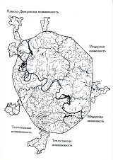
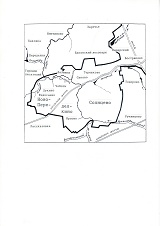
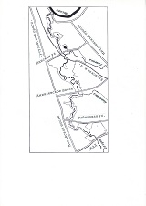
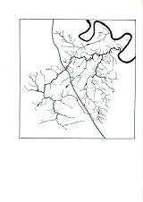
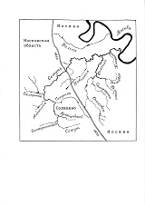
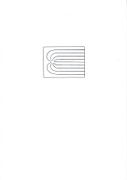
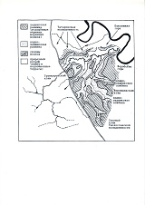
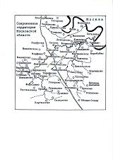

Страницы авторов "Тёмного леса"
Пишите нам! temnyjles@narod.ru
Книга "ПРИРОДНЫЙ ЗАКАЗНИК НА МОСКОВСКОЙ РЕКЕ СЕТУНИ" написана в 2005 г. по просьбе директора природного заказника "Долина р.Сетунь" Вячеслава Икаровича Микляева. Сделано это на основании материалов предварительных исследований заказника, опросных и литературных сведений. Тогда же рукопись была передана заказчику (заказнику), но в связи со сменой руководства забыта и не опубликована: В.И.Микляев был снят с поста директора заказника из-за отказа выполнить распоряжение Ю.М.Лужкова о взятии берегов Сетуни в габионы. В течение трёх лет, прошедших с момента написания рукописи, в заказнике проводились новые исследования, но автор не в курсе этих работ (в 2008 г., например, была опубликована книга П.Н.Меланхолина и соавторов "Флора природного заказника "Долина реки Сетунь""). Материал начал устаревать, и без доработок моя книга публиковаться не может. Здесь же ставится прежний год - 2005.
Ю.Насимович
2008 г.
Подтверждено в 2022 г.
|  | 83. Реконструированная речная сеть Москвы. |
|  | 84. Сетунь в Солнцеве. |
|  | 85. Сетунь внутри МКАД. |
|  | 86. Бассейн рек Сетунь и Филька. |
|  | 87. Названия основных рек в бассейне Сетуни. |
|  | 88. Схема, объясняющая направление течения рек на Теплостанской возвышенности. |
|  | 89. Геоморфологическая картосхема бассейна Сетуни внутри МКАД. |
|  | 90. Сохранившиеся и прежние сельские населённые пункты в бассейне Сетуни. |
21 июля 1998г. Правительство г.Москвы своим постановлением N564 учредило природный заказник "Долина р.Сетунь" и утвердило его границы. Таким образом, избежавшая застройки часть долины Сетуни в пределах Московской кольцевой автодороги стала особо охраняемой природной территорией регионального значения. Перед этим и вскоре после этого здесь были проведены инвентаризационные работы, в т.ч. составлены предварительные перечни видов растений и животных, ценных природных объектов. А в начале 2004 г. у заказника появились директор и штат сотрудников, после чего эта особо охраняемая территория стала таковой на самом деле.
Чем она примечательна в природном отношении? Почему решено не превращать её в приречный парк с гранитными набережными и асфальтированными дорожками? Почему долину Сетуни вообще не стали засыпать и застраивать полностью, как поступили с долинами десятков других московских речек?
На первый взгляд в долине Сетуни нет ничего уж очень ценного. "Стандартная" для Москвы долина с бывшими огородами и садами, нарушенными лугами и приречными перелесками. Местами пойма реки застроена, а в русло попадают ливневые стоки. Правда, здесь сохранился Матвеевский лес, или Волынский лес, ценность которого не подвергается сомнению. Долина Сетуни в Матвеевском лесу объявлена памятником природы ещё в 1991 г. (Решение Президиума Мосгорсовета N201 "О государственных памятниках природы местного значения в г.Москве" от 17 октября). Но Матвеевский лес занимает лишь одну двадцатую часть всей долины от МКАД до устья. Другие примечательные уголки (например, ивняк в Жуковке) - это тоже только вкрапления среди территорий, преобразованных в ходе человеческой деятельности.
Да, конечно, долина Сетуни "не дотягивает" по своим природным характеристикам до Лосиного Острова с его бескрайними лесами и чистыми реками, до Измайловского леса с величественными черноольшаниками, до природного парка "Москворецкий" с большой и чистой рекой, высокими оползневыми склонами, отстепнёнными лугами и сухими сосновыми борами. Это не природно-исторический парк "Царицыно" с зелёным лесом над гладью синих прудов. И не обширный Битцевский лес с красочными "коврами" весенних первоцветов, заполонивших липняки.
Долина Сетуни сравнительно скромна, как и протекающая по ней река. И всё-таки, по размеру это четвёртая река города (внутри МКАД). Кроме того, она практически везде пребывает в естественных берегах, что особенно ценится в настоящее время, когда горожане устали от пейзажей с водой, заключённой в камень. По берегам Сетуни во многих местах сохранились естественные ивняки, и пусть это лишь два ряда ив, река исключительно красива в образованной ими зелёной "галерее". Зимой в её незамерзающих водах плещутся утки. Весной на приречных склонах цветут медуница, ветреница и хохлатка, занесённые в Красную книгу Москвы. А летом в густых перелесках "скрываются" крупные лесные колокольчики и даже наша северная орхидея - пальчатокоренник. В последнее десятилетие здесь в те или иные годы наблюдались 24 "краснокнижных" вида цветковых растений, и, наверное, их список можно существенно пополнить, если "обшарить" все окрестные луговины и перелески. Но и это не главное.
Следует иметь в виду, что в данной части города нет других природных территорий. Если исчезнет эта узкая полоска естественной растительности, то для ежедневных прогулок с детьми не останется ничего, кроме жилой застройки и промзон. Долина Сетуни как рекреационная территория "обслуживает" не меньше людей, чем знаменитые Крылатские холмы или Воробьёвы горы.
И ещё хочется предупредить читателя, что данная публикация не претендует на полноту. Природный заказник появился совсем недавно, специальное изучение его территории только-только началось. Эта книга задумана как точка отсчёта, как та канва, на которую будут нанизываться новые краеведческие сведения.
Выражаю благодарность всем, кто щедро поделился своими знаниями и тем самым помог сделать эту книгу содержательнее, - биологам Ксении Всеволодовне Авиловой, Людмиле Борисовне Волковой, Константину Юрьевичу Гарушянцу, Григорию Станиславовичу Ерёмкину, Игорю Александровичу Жигареву, Константину Валентиновичу Захарову, Ригине Ильгизовне Назыровой, Георгию Александровичу Начаркину, Дмитрию Михайловичу Очагову, Василию Ивановичу Пахомову, Кирилу Алексеевичу Петрову, Борису Леонтьевичу Самойлову (по сути - редактору этой книги), Льву Николаевичу Солнцеву, Михаилу Петровичу Шилову, географу Эмме Александровне Лихачёвой, историку Михаилу Юрьевичу Коробко и, конечно, директору природного заказника "Долина р.Сетунь" Вячеславу Икаровичу Микляеву.
Ю.Насимович
2005
Наверное, эту книгу можно читать с любого места. Например, кто-то из жителей Матвеевского ограничится страницами, где описаны Аминьевский участок и Матвеевский лес, а старожил Троице-Голенищева прочитает о Поклонной горе и своей речке Кипятке... Краеведческие книги интересны прежде всего местным жителям и только в той степени, в какой повествуют об объектах, известных читателю. Но если кого-то всё-таки заинтересуют подземные "скалы", расположенные в нескольких километрах под его домом, обширное море, плескавшееся в этих краях давным-давно, а также гигантские "языки" льда, "пропахавшие" эту местность по геологическим меркам только "вчера", то не поленитесь просмотреть "Общую характеристику природы...". Она общая для всей долины Сетуни - от Солнцева до Воробьёвского шоссе.
А начнём мы с географического положения местности... Этот традиционно скучноватый раздел краеведческих книг всё-таки нужен, чтобы хорошо представлять, где мы находимся.
Сетунь - правый приток реки Москвы, и, значит, весь её водосборный бассейн принадлежит к москворецкому правобережью (см. рис. 1 и 3). В сравнении с левобережьем это приподнятая территория, причём довольно холмистая. Абсолютная высота многих холмов превышает 200 м. Так как самый высокий холм (255,2 м над уровнем моря и 140 м над уровнем р.Москвы в Коломенском) расположен вблизи бывших деревень Нижние и Верхние Тёплые Станы, вся возвышенность называется Теплостанской. Она занимает почти всю правобережную половину нашего города и "выглядывает" за его пределы. Московская кольцевая автодорога (МКАД) - недавняя, а местами и современная граница Москвы - рассекает возвышенность на две примерно равные части: городскую и загородную. Водосборный бассейн Сетуни тоже имеет две аналогичные части.
Сетунь начинается за городом, стекая с Главного холма Теплостанской возвышенности. Длина этого верхнего участка - 5,3 км. Затем на протяжении 6,5 км она пересекает московскую территорию за МКАД - Солнцево и Новопеределкино, после чего опять течёт по Московской области - по её Одинцовскому району (9,7 км). В Троекурове река проходит под МКАД и снова вступает в пределы Москвы. От этого места и до самого устья на протяжении 16,8 км она протекает внутри МКАД по Западному административному округу. Именно здесь на её берегах и расположен природный заказник, занимающий более 700 га. На речку, а, значит, и на заказник, "нанизаны" производственная зона "Очаково" и четыре жилых района - Можайский, Фили-Давыдково, Матвеевское и Мосфильмовский. Дорогомилово тоже вытянулось вдоль Сетуни, хотя не соприкасается с ней.
Устье Сетуни находится напротив Новодевичьего монастыря и Лужников, вблизи Краснолужского моста. По правому берегу р. Москвы ниже устья Сетуни начинаются Воробьёвы горы - наиболее известная часть Теплостанской возвышенности.
Ещё следует напомнить, что в Московском регионе имеются две Сетуни - московская и подмосковная. Подмосковная Сетунь - тоже правый приток р.Москвы, но эта речка протекает вблизи Кубинки, т.е. значительно западнее Москвы. На подмосковной Сетуни с 1981 тоже есть заказник ("Звенигородская биостанция МГУ и карьер Сима"), но эта территория не имеет отношения к московскому заказнику "Долина р.Сетунь".
Наверное, именно в этом разделе нужно сообщить читателю, что общая длина московской Сетуни составляет 38 километров. Такая цифра получается, если измерять речку по современным общедоступным картам. На самом деле её длина больше, но мы не можем полностью учесть петляние русла (особенно в истоках). Воду Сетунь собирает со 190 квадратных километров. Это самый большой правый приток р.Москвы в пределах города. Если же учитывать все московские реки внутри МКАД, то Сетунь - лишь четвёртая по размеру. Её превосходят Москва и два её левых притока - Яуза и Сходня.
Внутри МКАД Сетунь протекает, как уже говорилось, на протяжении 16,8 километров. Несколько меньшую длину - 11-12 км - имеет вытянувшийся вдоль неё заказник (определяя его длину мы можем не учитывать все петли реки).
В описаниях москворецкого правобережья и, в частности, бассейна Сетуни, иногда фигурируют такие географические понятия как Москворецко-Окская равнина, Кунцевская равнина, Звенигородская равнина, Татаровская возвышенность и т.д. Наверное, нужно кратко пояснить, о чём идёт речь в подобных случаях. Современная Москва включает в себя территории трёх резко различных физико-географических районов. Северо-западная часть столицы (междуречье Москвы и Яузы, или правобережье Яузы) расположена на низких отрогах Смоленско-Московской возвышенности. Западную часть этой возвышенности, разделяющую бассейны Оки и Верхней Волги, обычно называют Клинско-Дмитровской грядой. В целом это, конечно, возвышенность, но в пределах МКАД её высота нигде не достигает 200 м. Восточная часть города (левобережье Яузы) находится в Мещерской низменности. Это самая низкая и плоская часть города. Что же касается юго-западных и южных районов Москвы, то они лежат на Москворецко-Окской равнине. На данной равнине, занимающей пространство между реками Москва и Ока, чередуются возвышенные и низменные участки. Её северный приподнятый выступ называется Теплостанской возвышенностью. Он занимает почти всё москворецкое правобережье города, являясь самой высокой и холмистой частью столицы. Долины рек Москвы и Яузы - это естественные границы между перечисленными физико-географическими районами в пределах МКАД (рис.3).
Долина Сетуни внутри МКАД рассекает Теплостанскую возвышенность на две неравные части: на основной массив Теплостанской возвышенности по правому берегу и на так называемую Татаровскую возвышенность по левому берегу. Так вот территорию Татаровской возвышенности, где перепады высот вне долины р.Москвы не очень велики, иногда называют Кунцевской равниной, считая что это часть более обширной Звенигородской равнины, расположенной на двух берегах реки Москвы. Границы между всеми этими "равнинами" не слишком отчётливые, так как всё это единая огромная Русская равнина. В пределах Русской равнины естественно выделяются только низменные и возвышенные участки, а также условные участки, ограниченные большими реками. Поэтому я не вижу особой целесообразности в понятиях "Кунцевская равнина", "Звенигородская равнина" и т.п. Уж лучше в данном случае говорить о возвышенной Москворецкой гряде, которая проходит от Можайска через Дорохово, Кубинку, Голицыно и Одинцово, являясь ещё одним отрогом Смоленско-Московской возвышенности. Это водораздел реки Москвы и Верхней Оки, а также водораздел Верхней Москвы и таких её притоков, как Сетунь и Пахра. Москворецкая гряда "заглядывает" в Москву, и её восточное окончание (с Поклонной горой) мы можем называть Татаровской возвышенностью. В общем, Татаровскую возвышенность рассматривают то как часть Теплостанской возвышенности, то как часть Москворецкой гряды.
В бассейне Сетуни, как и везде в пределах Русской равнины, на некоторой глубине залегает так называемый кристаллический фундамент, а на нём покоится мощная толща осадочных горных пород - осадочный чехол. Кристаллический фундамент возник в архее и нижнем протерозое - примерно 1,5-3 миллиарда лет назад (Кузьменко, 1997). Горные породы, слагающие его, очень твёрдые и плотные. В основном, это гнейсы, гранито-гнейсы и кристаллические сланцы, то есть метаморфические породы, которые сформировались при участии высоких давлений и температур из древних морских осадков или магматических пород.
Глубина залегания фундамента, а значит и толщина осадочных слоёв, сильно варьируют. В пределах одной только Москвы фундамент начинается на глубинах от 1300 м (Тушино, Строгино) до 2800 м ниже уровня моря (Новые Черёмушки, Тропарёво).
На большей части Солнцева, южнее Киевской железной дороги, поверхность фундамента залегает на глубине в среднем 2600 м ниже уровня моря, причём она плавно понижается в восточном направлении - к Тропарёву (Кузьменко, 1997). Весь этот пониженный участок фундамента именуется Теплостанским грабеном и является частью Подмосковного авлакогенного прогиба. Интересно, что наклон поверхности фундамента противоположен наклону современной дневной поверхности Солнцева, и солнцевские речки - Сетунь и Сетунька - текут не к Тропарёву, а как раз от него.
В посёлке Мещерский (севернее Киевской железной дороги) поверхность кристаллического фундамента находится на глубине всего 1500-1600 м ниже уровня моря, т.е. на километр выше! Здесь расположена одна из ступеней Истринско-Кольчугинского выступа, или горста. Его поверхность плавно повышается к северу - к Строгину и Тушину. В нижнем течении Сетуни (в пределах заказника) она расположена на глубине 1500 м и местами даже чуть выше. Значит, примерно у платформы Востряково и потом на восток к станциям метро Юго-Западная и Проспект Вернадского проходит крутой уступ, отделяющий Теплостанский грабен от Истринско-Кольчугинского выступа. Его называют Павлово-Посадским разломом, так как он далее на восток уходит к Павловскому Посаду. Если бы мы могли снять всю толщу осадочных пород, то увидели бы в Солнцеве слегка наклонённую на север или на восток скальную поверхность, которая в одном месте имела бы почти вертикальный ступенчатый уступ высотой примерно в километр! Не следует, однако, думать, что эта "стена" когда-то была на поверхности, а потом оказалась под землёй по мере отложения осадочных пород. Поверхность фундамента продолжает меняться и сейчас под действием тектонических процессов. Какие-то участки постепенно, в течение многих миллионов лет, поднимаются, какие-то - опускаются, в результате чего образуются подобные подземные уступы.
Над фундаментом, как читатель уже понял, располагается двух-трёхкилометровая толща осадочных пород (с учётом современной приподнятости поверхности примерно на 120-250 м над уровнем моря). Здесь причудливо чередуются слои глин, песков, известняков (карбонат кальция) и доломитов (карбонат кальция и магния). Эти слои своим происхождением обязаны, в основном, тем периодам, когда поверхность будущего заказника становилась дном моря. Русская равнина под действием тектонических причин периодически опускалась (прогибалась), и тогда в её пределы вступало море. Если море было открытым, отлагались преимущественно известняки. Они образовывались из раковин и других остатков морских организмов, которые обитали в этом море. Если рядом была суша, то отлагались, в основном, глины и пески, сносимые реками и морским прибоем с этой суши. Рассмотрим геологические слои и геологическую историю местности, опираясь на ряд общеизвестных публикаций по геологии Москвы и Московской области (Даньшин, 1947; Дик, Соловьёв, 1947; Кузьменко и др., 1997).
Непосредственно на кристаллическом фундаменте лежит мощный слой известняков и доломитов девонского и каменноугольного периодов палеозойской эры. Они возникли 300-400 миллионов лет назад в неглубоком, но открытом море, которое в течение этих двух периодов неоднократно заливало территорию.
В пермском периоде палеозоя и триасовом периоде мезозоя рассматриваемая территория в течение 110 миллионов лет была сушей. Шло эрозионное разрушение ранее возникших морских известняков. Формировались глубокие речные долины, и в их местоположении кое-где в Москве заметно отдалённое сходство с современными долинами. Тем не менее, речная сеть окрестностей будущего заказника была в то время мало похожа на современную. Река, аналогичная Москве, протекала с запада на восток через нынешний посёлок Мещерский по так называемой Главной Московской ложбине, которая теперь погребена под толщей позднейших осадочных пород (Кузьменко и др., 1997). Это означает, что весь будущий заказник располагался в долине этой пра-Москвы, причём на левом берегу! Небольшие правые москворецкие притоки несли свои воды по территории будущего Солнцева на север. Одному из них соответствует участок р.Сетуни от Орлова до Сукова, и, наверное, это не случайное совпадение. По крайней мере, можно утверждать, что Солнцево уже тогда было приподнято над левобережной территорией будущей Москвы, т.е. наметилась Теплостанская возвышенность.
В юрском и меловом периодах мезозоя (215-65 млн. лет назад) море то заливало, то освобождало территорию, на которой отлагались глины и пески, сносимые с близлежащей суши. Эти близкие к поверхности слои в дальнейшем сильно пострадали в Москве в результате деятельности ледников и рек. Но на Теплостанской возвышенности они уцелели в большей степени, чем где-либо в городе. Последний ледник, Московский, частично обтёк эту приподнятую территорию, а предыдущий ледник покрыл её чуть меньшим слоем льда, чем другие части будущей Москвы. Пески мелового периода (меловые пески) составляют основную толщу Теплостанской возвышенности. Из них образован тот "купол", которым вздымается всё правобережье Москвы. В некоторых местах эти пески слежались, спрессовались, сцементировались частицами глины. Возник песчаник, довольно прочный камень. Именно эти пески и песчаники сумели впоследствии частично отразить натиск Московского ледника в четвертичный период.
В третичном периоде кайнозоя (палеогене и неогене) море отступило на юг, и территория опять стала сушей. По ней побежали реки, которые либо частично расчистили от морских отложений прежние долины, либо проложили совершенно другие пути. Возникла речная сеть, очень сходная с современной. В это время по "нашей" территории уже текли аналоги Сетуни и её основных правых притоков (Сетунька, Навершка, Раменка с Очаковкой и Самородинкой). В точности там же, где теперь, вздымалась Теплостанская возвышенность.
В четвертичном периоде, который продолжается и сейчас, на территории будущего заказника произошли грандиозные геологические события. Со Скандинавских и других северных гор несколько раз спустились потоки медленно текущего льда и заполнили большую часть Русской равнины. Ледники принесли гальку и валуны - окатанные обломки северных скал, а также пески, глину, куски известняка, песчаника и другой материал, содранный по пути. Благодаря этому возникли ледниковые, или моренные отложения, которые покрывают поверхность Теплостанской возвышенности и особенно её холмы (Лихачёва, 1990). Обычно это принесённые Московским ледником суглинки с гравием, галькой и валунами (верхняя морена Подмосковья). В валунах этой морены преобладают гранит, диабаз, гнейс, амфиболит, кварцит, кристаллический сланец, т.е. дальноприносные магматические и метаморфические горные породы.
Кроме того, поверх морены отложился слой покровных безвалунных суглинков и глин. Есть предположение, что этот слой нанесён ветром с приледниковых пространств, которые не были покрыты растительностью и потому легко подвергались ветровой эрозии. Из-за этого слоя поверхность Теплостанской возвышенности, в отличие от песчаной Мещёры, после дождя превращается в непролазную грязь. Но этот же слой, являясь почвообразующим, предопределяет плодородие теплостанских почв. Впрочем, не всё столь просто, так как покровные суглинки и глины во многих местах смыты поверхностными водами.
В нижних частях холмов моренные отложения, как правило, перемыты талыми ледниковыми водами, рассортированы по размеру частиц (как в русле любого ручейка: в самых тихих местах осела глина, на относительно быстрых - песок, а на стремнинах остались только камни). Это водно-ледниковые, или флювио-гляциальные отложения. Они залегают вдоль долин Сетуни и её притоков (Лихачёва, 1990). На склонах самих долин кое-где обнажена также средняя морена Подмосковья, принесённая предыдущим ледником (Кузьменко и др., 1997). В валунах этой морены значительно больше кремня, известняка и песчаника, т.е. осадочных пород, захваченных ледником в пределах Русской равнины (этот ледник, в отличие от остальных, пришёл в будущее Подмосковье с северо-востока).
После отступления последнего для нашей местности ледника (Московского) главными преобразователями рельефа стали реки и ручьи. Как правило, они проложили себе путь, согласно доледниковому рельефу. Приподнятая местность опять покрылась густой сетью речных долин, балок и лощин. Но врезаны они оказались уже не в меловые, а в четвертичные отложения - ледниковые и водно-ледниковые. Днища долин устланы послеледниковыми речными отложениями - суглинками и песками с гравием и галечником в основании.
В результате описанных выше геологических событий сформировался современный рельеф заказника и его окрестностей. Рельеф - один из важнейших элементов природы, так как он предопределяет особенности речной сети, наличие или отсутствие болот, характер растительности и многое другое.
Уже говорилось, что весь заказник расположен в пределах Теплостанской эрозионной возвышенности. Эта возвышенность имеет наибольшую высоту в районе Тёплого Стана (255,2 м над уровнем моря и примерно 140 м над уровнем р.Москвы), чем и объясняется её название. Занимая почти всю правобережную часть нашего города, она ступенчато понижается во все стороны от Тёплого Стана. Именно оттуда, с Главного Теплостанского холма, к Сетуни сбегают такие её притоки, как Румянцевский ручей (Родник), Сетунька и Раменка с истоком Очаковкой. Там же начинается и сама Сетунь.
Теплостанская возвышенность характеризуется не только максимальной для города высотой, но и максимальными перепадами высот (70 м на Воробьёвых горах), наибольшей крутизной склонов, наибольшей рассечённостью речной и овражно-балочной сетью, за что её и называют эрозионной возвышенностью. Она выстояла под натиском ледников, сохранив все основные геологические слои Подмосковья: сверху вниз здесь последовательно залегают четвертичные, меловые, юрские и каменноугольные отложения. Её "купол", который возвышается над остальной Москвой, образуют, в основном, пески и песчаники мелового периода. Именно эти пески и песчаники, как уже говорилось, отразили натиск наступающих льдов, заставили ледники частично обтекать возвышенность. Прежнее представление, что Московский ледник вообще не сумел преодолеть возвышенность, видимо, ошибочно, но всё-таки лёд покрыл её значительно меньшим слоем, чем другие части Москвы. Поэтому здесь хорошо выражен доледниковый рельеф, и можно сказать, что эта часть города характеризуется наиболее древним рельефом. Это огромный останец доледниковых времён. Все основные долины и водораздельные холмы существовали ещё до прихода ледников. Относительно узкие долины и балки, "пропиленные" текущей водой уже в послеледниковые времена, часто имеют длинные и пологие придолинные и прибалочные склоны, сформировавшиеся значительно раньше, т.е. склоны долин и балок плавно переходят в склоны ледниковых и доледниковых рельефных образований.
Поверхность Теплостанской возвышенности ступенчата. Верхняя ступень - Тёплый Стан, Ясенево, Беляево. Средняя - район станций метро "Юго-Западная" и "Проспект Вернадского". Нижняя - междуречье Москвы и Сетуни (Татаровская возвышенность), район Университета. Долина Сетуни в пределах МКАД рассекает на две части нижнюю ступень возвышенности. Здесь, в основном, и находится природный заказник.
Высокая ступень практически целиком покрыта отложениями московского и предыдущего ледников, т.е. ледниковыми, или моренными отложениями. Это пологохолмистая ледниковая равнина. А на нижних ступенях ледниковые отложения во многих местах перемыты талыми ледниковыми водами. Это водно-ледниковые равнины. Они с двух сторон обступают среднее и нижнее течение речки Навершки, "прижимаются" к низовьям Раменки и самой Сетуни, в т.ч. слагают вершину Поклонной горы. Что же касается моренных отложений, то они сохранились здесь на вершинах довольно многих холмов: в Солнцеве, на Троекуровском холме (170 м), на плоской поверхности Воробьёвых гор (200 м), на некоторых участках водораздела Сетуни и Фильки (вдоль левого коренного берега Сетуни) (Лихачёва, 1990).
В настоящее время вся поверхность возвышенности пересечена речными долинами и балками. Их влияние особенно велико на нижних ступенях и близ уступов к реке Москве, где прежний моренный рельеф полностью уничтожен текущей водой. Верховья балок подходят почти к самым водоразделам, почти смыкаются близ них. Такой рельеф называют эрозионным. Водораздельные (верховые) болота, если они и были когда-то на этой территории, давно спущены эрозионной сетью. Остались только низинные болота, приречные. Да и они не велики по площади. Суглинистые и хорошо дренируемые почвы Теплостанской возвышенности благоприятны для смешанных и широколиственных лесов. На природных территориях здесь преобладают липняки, дубняки, а также березняки (вторичные леса, выросшие на пашнях).
О некоторых геоморфологических образованиях вблизи заказника следует рассказать отдельно. Как уже говорилось, долина Сетуни отсекает от основного массива Теплостанской возвышенности относительно обособленную Татаровскую возвышенность, названную так по исчезнувшей деревне Татарово, которая была севернее Крылатского. Татаровская возвышенность - это, во-первых, обширный холм с ледниковой вершиной чуть юго-западнее Кардиоцентра (200 м над уровнем моря), во-вторых, естественный Крылатский холм с застройкой Крылатского на вершине (190 м), в-третьих, высоты Фили-Кунцевского лесопарка (до 170-175 м) и, в-четвёртых, уже упоминавшаяся Поклонная гора (171,5 м) (рис.4).
Наверное, Поклонная гора с парком Победы наиболее известна читателю. Дело в том, что Татаровская возвышенность с запада на восток рассекается узкой долиной речки Фильки, которая впадала в р.Москву чуть выше устья Сетуни. Теперь эта речка протекает в подземном коллекторе, но по её долине проложена открытая Филёвская линия метро, т.е. долина частично сохранилась. Так вот часть узкого водораздельного поднятия между долинами Фильки и Сетуни и называется Поклонной горой. Эта гора "нависает" над левым берегом в низовьях Сетуни. Вершина её (171,5 м), как говорилось, образована водно-ледниковыми отложениями: здесь по долине р.Москвы и вдоль этой долины прошли мощные потоки талых ледниковых вод, смыв моренные отложения и отложив на их месте тот материал, который несла вода.
Обширный холм Воробьёвых гор с довольно плоской моренной вершиной, где расположен Университет, оконтурен долинами Рогачёвки, Раменки, Сетуни, Москвы и Чуры (рис.1 и 4). С этого холма к Сетуни в бывшем селе Троице-Голенищево сбегала короткая быстрая речка Кипятка, заключённая теперь в подземный коллектор. Наибольшей высоты (более 200 м) холм достигает около Ломоносовского проспекта примерно напротив Университета. Река Москва протекает под ним на высоте 128 м.
В пределах Сетуньского бассейна хорошо заметен ряд водно-ледниковых ложбин, сформированных потоками талых ледниковых вод. Особенно интересно, когда такие ложбины пересекают современные водоразделы, превращаясь в открытые долины, то есть в долины, открытые в оба речных бассейна. В этом случае их никак нельзя объяснить деятельностью современных рек, и водно-ледниковая (или доледниковая) природа таких образований выявляется особенно чётко. Две подобные ложбины пересекают водораздел Фильки и Сетуни. Одну из них можно наблюдать из окон поезда метро между станциями Кунцевская и Молодёжная (в виде плавного понижения местности за кинотеатром "Кунцево" со стороны улицы Екатерины Будановой). На улице Красных Зорь в данной ложбине на водоразделе создан широкий пруд. Возможно, в какие-то периоды своей геологической истории Сетунь прорывалась по этой ложбине в бассейн Фильки. Другая ложбина отделяет Поклонную гору от остального массива Татаровской возвышенности. Теперь здесь проходит Минская улица. Ещё более эффектные водно-ледниковые ложбины с двух сторон оконтуривают Воронцовский холм, но они проходят далеко от заказника (рис.4).
И, конечно, интересным рельефным образованием является сама долина Сетуни, днище которой в пределах заказника находится на абсолютной высоте порядка 130 м. Уже говорилось, что в доюрские времена, а точнее до прихода в наши края моря в юрском периоде мезозоя, на месте двух нынешних нижних ступеней Теплостанской возвышенности располагалась широкая долина доюрской пра-Москвы. Эта река к моменту прихода моря протекала в нескольких километрах южнее современной долины Сетуни (через Востряково, Новые Черёмушки, Коломенское). Но раз "наша местность" располагалась в долине этой реки, то за долгие предыдущие времена, перемещаясь по долине, река успела побывать и здесь. Значит, можно сказать, что когда-то на месте Сетуни протекала река Москва, причём Сетунь течёт по своей долине в том же направлении, куда текла та большая доюрская река. В дальнейшем происходили многочисленные подъёмы и опускания поверхности, местность несколько раз заливалась морем, а река Москва после ухода моря потекла значительно севернее (даже севернее, чем сейчас). И теперь мы можем только гадать, унаследована долина Сетуни от долины той пра-Москвы или это случайное совпадение. Так или иначе, но после отступления моря на восток, как бы "вдогонку" ему, здесь побежала доледниковая пра-Сетунь, которая является непосредственной предшественницей современной Сетуни. Долина этой реки - самая большая из рассекающих Теплостанскую возвышенность. Она асимметрична, как и долина соседней реки Москвы: правый берег в среднем круче левого. Река наступает на правый берег, оставляя слева надпойменные террасы и пойму. В северном полушарии так ведут себя почти все реки (закон Бэра).
Река Сетунь принимает справа Румянцевский ручей (Родник), Сетуньку, Лазенковский ручей, Троекуровский ручей, Навершку, Волынский ручей, Раменку и Кипятку, а слева - Екатерининский, Орловский и Чоботовский ручьи, Алешинку (Семейку), Самаринку и Давыдковский ручей (рис.1). Лазенковский, Волынский, Орловский, Чоботовский и Давыдковский ручьи названы мной по населённым пунктам на их берегах; Румянцевский и Троекуровский ручьи, а также Семейка - бытующие названия; остальные гидронимы подписаны на географических картах и в некоторых случаях тоже известны местному населению.
Раменка, крупнейший приток Сетуни, берёт начало в Воронцовском парке и сама обладает разветвлённой сетью притоков: справа она принимает Рогачёвку и Онучин овраг, слева - Очаковку. Очаковка длиннее и во много раз многоводнее Раменки. По сути именно она является истоком Раменки, а не ручей Воронцовского парка. Очаковка принимает справа Кукринский ручей, Бреховский овраг, Самородинку и по сути также Раменку. Названия водотоков бассейна Раменки удалось сколлекционировать, просматривая старые топографические карты (Насимович, 1996, 1998).
Выше МКАД водосборный бассейн Сетуни в первом приближении симметричен: два значительных правых притока - Румянцевский ручей и Сетунька; три значительных левых - Екатерининский ручей, Алёшинка и Самаринка. Симметрия усиливается стеканием Сетуни с Главного холма Теплостанской возвышенности, т.е. она сама как бы впадает справа в водоток, пересекающий Солнцево и Новопеределкино с юга на север (рис.1 и 5).
Ниже МКАД бассейн Сетуни асимметричен: оба крупнейших притока - Навершка и Раменка - впадают справа. Так как Раменка сама обладает разветвлённой сетью относительно крупных притоков, можно сказать, что все четыре значительных водотока нижней части сетуньского бассейна (Навершка, Очаковка, Самородинка и Раменка) принадлежат правобережью Сетуни. К нему же относятся остальные водотоки, имеющие более или менее принятые названия: Троекуровский ручей и Кипятка (правые притоки Сетуни), Кукринский ручей, Рогачёвка и Онучин овраг (водотоки системы Раменки).
Ряд довольно интересных замечаний можно сделать по поводу "рисунка" гидрографической сети сетуньского бассейна (рис.5). Во-первых, бросается в глаза, что гидрографическая сеть здесь дендрическая, т.е. деревообразная, сложным образом разветвлённая. Такая сеть в Московском регионе отнюдь не повсеместна. Мы видим во многих частях региона либо перистую гидросеть (короткие параллельные притоки, с обеих сторон впадающие в относительно крупную реку), либо параллельную гидросеть (длинные параллельные водотоки, впадающие в одну и ту же реку и, как правило, с одной стороны). Перистый рисунок характерен для молодых участков речных бассейнов, где прежний рисунок "стёрт" (например, ледником или его талыми водами), и довольно мощная река, проложив новый путь, относительно недавно "приступила" к формированию гидросети. Она ещё не успела своими короткими притоками "подкопаться" под соседние "независимые" реки и перехватить их течение, что привело бы к увеличению длины притоков и появлению резких поворотов их долин. Параллельный рисунок гидросети тоже, как правило, связан с его молодостью. Несколько рек либо потекли в одном и том же направлении вслед отступающему морю, либо "воспользовались" параллельными ложбинами, "вычерченными" ледником. Со временем параллельность должна утратиться, так как речные долины будут по-разному эволюционировать, "сползать" со склонов или как-то иначе медленно перемещаться. Некоторые из них сольются. В конце концов это приведёт к формированию дендрической гидросети. Именно такую сеть мы видим в бассейне Сетуни. Значит, она очень древняя, доледниковая. Ледники "похозяйничали" на Теплостанской возвышенности в меньшей степени, чем во многих других частях Московского региона.
Другая особенность бассейна Сетуни - асимметричность, о чём уже говорилось выше. Асимметричен также бассейн Очаковки-Раменки. Попытаемся объяснить эти явления. Центр Теплостанской возвышенности расположен по правому берегу Сетуни, и естественно, что именно отсюда, с Главного холма и его окрестностей, стекают по своим древним долинам основные притоки: Сетунька, Очаковка, Самородинка и Раменка. Что же касается местности по левому берегу Сетуни, то она не столь приподнятая, а потому в большей степени подверглась и воздействию моря, и воздействию ледников. Речная сеть здесь моложе, с хорошо выраженными чертами перистости (посмотрите на левые притоки Сетуни) и параллельности (сравните расположение долин Фильки и Сетуни). Можно предположить, что левые притоки Сетуни ещё не успели "подкопаться" под Фильку и перехватить её течение, что привело бы к появлению и здесь дендрической гидросети.
Третья особенность - грушевидная форма водосборной площади Очаковки-Раменки, а также Сетуни в целом. Вода устремляется в низовья Сетуни почти со всех сторон ("центростремительный" рисунок гидросети). Это приводит к резкому "вспуханию" реки после дождей. Для соседней речки Фильки, обладающей ленточным водосборным бассейном, такие резкие разливы никогда не были характерны: в р.Москву последовательно сбрасывалась вода из нижней, средней и верхней частей бассейна.
И наконец, четвёртая особенность - это движение воды в бассейне Сетуни примерно по полукругу. От своего истока в Саларьеве Сетунь течёт в точности на запад, от Картмазова - на север, по выходе из Новопеределкина - на северо-восток, от Дорогобужской улицы - на восток, а вблизи самого устья - даже на юго-восток. Получается, что вода как бы обтекает наиболее приподнятую часть Теплостанской возвышенности. Что-то подобное, но в меньшей степени свойственно многим другим речкам бассейна Сетуни. Так, например, воды Очаковки от истока текут на северо-запад, потом - на север, потом - на северо-восток (в составе вод Раменки), а после этого - на восток и юго-восток (в составе вод Сетуни). Почти то же самое можно сказать о Самородинке и Раменке. А воды Рогачёвки, обтекая массив Воробьёвых гор, поначалу перемещаются даже на юг - почти по замкнутому кругу! Объяснение этой особенности уже приводилось: обтекание холма. И всё-таки данное явление можно объяснить с более общих позиций, только для этого придётся всмотреться в рисунок гидросети всей Теплостанской возвышенности (см. рис.3, 5).
Вершина Главного холма Теплостанской возвышенности, как уже говорилось, находится вблизи станции метро "Тёплый Стан". Отсюда во все стороны "разбегаются" основные речки москворецкого правобережья: Сетунь, Сетунька, Очаковка, Самородинка, Котловка, Чертановка, Городня, Битца и Сосенка. Такой рисунок гидросети называют центробежным. В Московском регионе он характерен также для холма, с которого берёт начало р.Москва (реки Протва, Москва, Колочь) и для Егорьевского моренного острова (реки Гуслица, Устань, Медведка и другие). Подобное "поведение" речек столь естественно, что о нём можно было бы не говорить. Но в дальнейшем "судьба" этих речек оказывается различной. Те из них, направление течения которых совпадает с общим наклоном местности, продолжают течь в том же направлении, т.е. прямо (например, Чертановка и Городня в Москве). Остальные же вынуждены повернуть и обойти "родительскую" возвышенность с той или с другой стороны (рис.6). Сосенка обходит её против, а Сетунь - по часовой стрелке. Что же касается общего наклона местности, то на него "указывают" основные реки Московского региона (Волга, Ока, Москва, Клязьма) - на восток. В этом направлении когда-то давно отступило море, к которому они потекли.
В рисунке гидросети бассейна Сетуни можно увидеть и некоторые черты параллельности. В каких-то частях этого бассейна долины соседних рек оказываются почти параллельными друг другу: 1) исток Сетуни, Румянцевский ручей, нижнее течение Сетуньки; 2) верхнее течение Сетуньки, среднее течение Очаковки, Самородинка и верховья Раменки; 3) низовья Очаковки-Раменки, Навершка и среднее течение Сетуни; 4) нижнее течение Сетуни и Филька (рис.1). Такой рисунок гидросети иногда называют параллельно-ломаным (Матвеев, 1972). Можно предположить, что в пределах перечисленных участков долины закладывались в одно и то же время и под воздействием сходных факторов. В первом случае это, возможно, эрозия на Теплостанской возвышенности ещё в доюрские времена. Во втором случае та же эрозия, но двигавшийся на юго-восток лёд мог "дочертить" долины рек. В третьем случае можно заподозрить воздействие послеюрской эрозии, но могли "вмешаться" также потоки льда, обтекавшие возвышенность. В четвёртом случае направление стока почти соответствует общему наклону местности. Когда-то так могла течь доюрская пра-Москва, но в этом же направлении могли прорываться на восток потоки талых ледниковых вод. Наверное, конкретные выводы делать ещё рано, но ясно, что в "рисунке" гидросети "записана" информация о долгой геологической истории местности. Нужно только научиться "читать" эти "записи".
Общие вопросы, связанные с гидрографической сетью, не исчерпываются её рисунком. Город в значительной степени изменил структуру речного стока в бассейне Сетуни. Подземный сток уменьшился, что связано с водонепроницаемостью участков, занятых зданиями, покрытых асфальтом или уплотнённым грунтом, т.е. родников и т.п. водопроявлений стало меньше (хотя в среднем по Московскому региону мощность родников за последние 30 лет возросла из-за увеличения количества осадков на 15-20%). Несмотря на уменьшение подземного стока, расход воды в городских реках значительно вырос из-за резкого увеличения поверхностного стока. Дождевые и талые воды стекают в реки, не успевая просочиться в грунт или испариться. Значительную роль в нарушении естественной структуры стока играют и потери воды из подземных коммуникаций. В результате всего этого полный речной сток оказывается выше естественного в 1,5-2,5 раза (Лихачёва, 1990). Таким образом, бытующий "миф" о том, что все реки когда-то были многоводнее, - это заблуждение.
Однако, большой радости нынешняя полноводность городских речек нам не приносит. Вода в них почти повсеместно загрязнена. Загрязнены даже городские родники. В них повышена концентрация нитратов, хлоридов, сульфатов, резко увеличилась общая минерализация (Авилова, Орлов, 1994). Много грязи, конечно, приносят поверхностные воды, "моющие" наши грязные улицы, а потом стекающие в реки. Основные источники загрязнения: противогололёдные реагенты, смазочные материалы и другие нефтепродукты, удобрения, ядохимикаты, тяжёлые металлы (свинец, марганец, хром, кадмий, никель), грязные атмосферные осадки (в т.ч. кислотные дожди), утечки с промплощадок и подземных коммуникаций. Выяснено, что минерализация снега резко увеличена в полосе шириной 50 м по обе стороны автодорог и у железнодорожных станций, что свидетельствует об огромном вкладе транспорта в загрязнение рек. Загрязнены реки также органическими веществами. В начале 1990-х гг. большая свалка промышленных и бытовых отходов образовалась возле Кременчугской улицы (Аминьевский участок долины). Свалка на левом берегу Сетуни напротив нового устья Раменки была ликвидирована только в 1993 г. (Авилова, Орлов, 1994). Значит, чтобы сделать Сетунь чище, нужно очистить весь юго-западный сектор города, сделав экологически чистым и автотранспорт. Очистить нужно также значительную территорию Подмосковья, так как грязь в Сетунь поступает, к примеру, с Саларьевской свалки, или Саларьевского полигона твёрдых бытовых отходов, о чём подробней рассказывается ниже. Ещё не так давно традиционным "решением" проблемы считалось заключение рек в подземные коллекторы. Но если в реке, текущей по поверхности, всё-таки происходит частичная самоочистка воды за счёт деятельности живых организмов (в условиях солнечного освещения), то под землёй грязь протекает в неизменном виде и в конце концов вливается в р.Москву. Закопанные реки исчезают для нас навсегда, а оставшиеся на поверхности - рано или поздно могут быть очищены по мере роста культуры и технических возможностей.
Что же касается нашей современной экологической культуры, то не придаёт красоты Сетуни всё то, что непосредственно сбрасывается в неё горожанами: пластиковые бутылки, автопокрышки и даже целые автомобили. Этот мусор, не самый опасный в смысле химического загрязнения воды, оказывает на людей наибольшее психологическое воздействие. Все видят, что река грязная, и требуют её экологической реабилитации. Это заставляет производить дорогостоящие работы по "облагораживанию" реки. Как правило, "облагораживание" сопровождается изъятием грунта с речного дна и берегов. Так уничтожаются водная и околоводная флора и фауна. Река приобретает облик широкой и грязной канавы (ведь вода в ней после таких действий не становится чище). Затем берега, лишённые защищавшей их растительности, выравниваются и укрепляются камнем, и долина реки окончательно теряет природный облик. Получается, что для экологической реабилитации реки применяются совсем не те средства. Что же касается принципиальных решений, то, к сожалению, они требуют долгого времени. Это создание экологически чистого транспорта и производства, подъём культуры горожан, привитие им любви к своей "малой родине", сохранение природной обстановки в долинах рек, совершенствование водоочистных сооружений.
Не хотелось бы, однако, создавать у читателя впечатление, что в настоящее время в бассейне Сетуни с чистотой воды сложилась безнадёжная ситуация. И в самой Сетуни, и в её притоках произрастают многие виды растений и обитают различные виды животных, сумевшие приспособиться к существующему уровню загрязнения. Это означает, что река ещё не потеряла способность к самоочистке воды. Здесь сохранилось довольно много родников с относительно чистой водой (родники Солнцева и Новопеределкина, Лёшин родник в Жуковке, родники Волынского леса, родник Сергия в Конькове и родник в Тропарёве). Совершенно чист Кукринский ручей, берущий начало от родника в Конькове и протекающий через Теплостанский лес. Из городских притоков Сетуни, пересекающих заказник, относительно чист Троекуровский ручей. Загрязнённая вода пущена в обход некоторых прудов в поймах Навершки, Очаковки и Самородинки. Относительно чисты питаемые грунтовыми водами маленькие пруды в долине самой Сетуни.
Двойственное отношение вызывает к себе тепловое загрязнение Сетуни и её притоков. С одной стороны, вода в них зимой далеко не везде замерзает, что противоестественно. С другой стороны, незамерзающие реки становятся местами массовой зимовки водоплавающих птиц и особенно уток-крякв, которые подкармливаются горожанами. На Сетуни зимуют не только московские, но и подмосковные утки. Так подогретые городские реки способствуют росту численности водоплавающих птиц во всём Московском регионе.
Сетунь и её основные притоки обладают специфическим сезонным водным режимом, который отличен и от режима загородных малых рек, и от режима р.Москвы. Сетунь относительно многоводна круглый год. Никакая летняя засуха и никакой зимний мороз, уменьшающий поверхностный сток, не могут привести к её существенному обмелению, так как потери из подземных коммуникаций и другие специфичные для города источники воды почти не зависят от сезона года. В то же время, если зима была холодной и снежной, а весна "дружной", Сетунь, в отличие от зарегулированной р.Москвы, широко разливается по своей пойме. Это бывает далеко не каждый год, но, если происходит, представляет впечатляющее зрелище. Так, например, в Волынском лесу река сначала "разбегается" по своим многочисленным старицам, а потом весь ивняк-ракитник на днище её долины оказывается затопленным. Тогда ширина реки на отдельных участках достигает 80-100 м. Разливам реки способствует грушевидная форма её бассейна (см. выше).
Наверное, широкие разливы малых московских рек были бы повсеместными, если бы их поймы не были "стиснута" искусственными насыпями. Когда под фундаменты зданий вырывались котлованы, грунт из них ссыпался в долины рек и надвигался бульдозерами на пойму. Помимо естественного грунта (суглинков, супесей), такие отвалы содержат строительный и бытовой мусор. Стенки подобных насыпей иногда очень круты, а потому подвержены эрозии. Это ещё один источник загрязнения воды.
Тем не менее, несмотря на все перечисленные грустные обстоятельства, долины московских рек остаются теми стержнями, на которые в городе "нанизаны" почти все сохранившиеся ценные природные объекты: ивняки и ольшаники, фрагменты лугов и болот, водоёмы с относительно чистой водой, родники, чистые ручьи, геологические обнажения, примечательные формы рельефа, мощные деревья, особо охраняемые виды растений и животных. Если в прошлом населённые пункты (деревни, сёла) "прижимались" к рекам, а водораздельные пространства оставались нетронутыми, то в современном городе возникла противоположная ситуация: город почти полностью освоил водоразделы, превратив их в жилую застройку и промзоны, а природные уголки сохранились вдоль рек, где застройка была сопряжена с дополнительными трудностями.
Помимо природоохранной роли, реки сетуньского бассейна по-прежнему выполняют дренирующую роль. Засыпка рек и ручьёв, а также выравнивание рельефа, даже с сохранением водотоков, ведут к опасному для зданий и инженерных коммуникаций подтоплению местности. Реки и созданные в их поймах пруды продолжают выполнять особенно важную в условиях города рекреационную роль. Велико также декоративное значение речных долин с их перепадами высот, характерными для Теплостанской возвышенности.
На Сетуни имеются многочисленные родники, и нужно поговорить о них особо, так как в рекреационном отношении эти природные объекты исключительно важны. В сознании многих горожан они наделены чуть ли не целебными свойствами, и родниковая вода часто предпочитается водопроводной.
Особенно мощными родниками обладает Новопеределкино. Около десятка популярных и в той или иной степени обустроенных родников "дарят" здесь свои воды Сетуни. Наиболее многоводны Новопеределкинский родник (у одноимённой улицы), родник близ устья Сетуньки, родник Митрополита Филиппа, Лукинский родник, родник Казанской Божьей Матери, родник Петра и Павла. Их мощность достигает 30-60 литров в минуту.
Другая особенность родников Новопеределкина - ярко-оранжевый осадок, который даёт их вода. Осадок вызван высокой концентрацией соединений железа (ржавчины). Вероятно, железистость обусловлена тем, что водоносным слоем является средняя морена Подмосковья. Родники верхней морены, оставленной Московским ледником, не столь "ржавые". Они имеются в верховьях правых притоков Сетуни, стекающих с самой вершины Теплостанской возвышенности (например, Коньковский и Тропарёвский родники на верхних притоках Очаковки). Не столь железисты и родники в среднем и нижнем течении Сетуни (начиная с родника Пантелеймона-целителя чуть ниже Переделкина). Здесь река врезалась в толщу древних пород. Наверное, некоторые из этих нижних родников получают воду из морских песков, отложенных в меловом периоде мезозоя, хотя водоносными породами могут быть также водно-ледниковые или речные пески.
Третья особенность родников Новопеределкина - близость их к реке. Все они расположены в пойме Сетуни и весной заливаются её загрязнёнными водами, бегущими с Саларьевской свалки бытовых отходов.
Конечно, в летнее время, особенно июле-августе, если нет дождей, родниковая вода постепенно очищается, но полной очистки гарантировать нельзя. Ведь река врезана здесь не очень глубоко, родники питаются поверхностными водами, а их водосборная площадь расположена в пределах городской или сельской застройки. Не внушают доверия и подземные коллекторы, проложенные вдоль Сетуни и некоторых её притоков. Вода в них очень грязная круглый год. А вдруг эти коллекторы повреждены и "подпитывают" своими водами родники? В общем я бы не советовал увлекаться родниковой водой из Новопеределкина и соседнего Солнцева, хотя, конечно, в жаркую погоду этой водой можно ополоснуть лицо, вымыть руки. И уж во всяком случае родниковая вода гораздо чище сетуньской, и нужно только радоваться, что эти родники есть и что они столь мощны.
Второй городской участок Сетуни - от МКАД и до устья - обладает не столь мощными родниками. Из них благоустроены только три: Лёшин в Жуковке, один из двух родников Волынского леса (ближний по отношению к Староволынской улице) и родник у Старого Рублёвского моста. Впрочем последний родник очень мощен (порядка 100 литров в минуту), но он такой лишь один.
Как читатель уже понимает, все эти нижние родники не столь железисты, как верхние. А вот в смысле чистоты их вряд ли можно противопоставить предыдущим. Родник у Старого Рублёвского моста летом лишь на 10 см возвышается над рекой и, конечно, заливается по весне. При сильных паводках, наверное, заливается и Лёшин родник. Только до Волынского родника реке трудно "достать". Что касается водосборной площади, то лишь у Волынского родника в её пределах преобладает лес. В общем, из всех родников я бы предпочёл последний. Тем не менее, город есть город, и нужен специальный анализ качества воды. К сожалению, его не так-то просто произвести: состав воды меняется в зависимости от сезона и от погоды; родников много; средств мало; отрывочным сведениям, которые проникают в газеты, верить нельзя. В общем, нужно либо не рисковать вообще, либо внимательно всматриваться в обстановку вокруг родника и в сам родник. Так, например, мощный восходящий "родник" на левом берегу Сетуни в Аминьевской пойме (чуть выше огороженных садов) имеет летнюю температуру до 21 градуса. Родниковая вода такой тёплой не бывает (сетуньские родники имеют летнюю температуру от 6 до 9,5 градусов). В данном случае прорвало водопровод, и водопроводная вода подпитывает Сетунь в течение многих лет. Но ведь это могло быть и что-то похуже...
Если речь уже пошла о температуре родниковой воды, то на Сетуни "верхние" родники холоднее "нижних". Все 9 описанных "верхних" родников "укладываются" в интервал от 6 до 8,5 градусов Цельсия, а 6 из них - от 6 до 7. Летняя температура четырёх обследованных "нижних" родников в июле 2005 г. составляла от 8 до 9,5 градусов. "Нижние" родники или уж очень "пойменные", приповерхностные (родник у Старого Рублёвского моста), или маломощны, а потому "вялые" струйки подземной воды успевают прогреться перед выходом наружу.
Флористическое изучение бассейна Сетуни началось только в середине 19 в. Первые гербарные образцы (менее десятка) на территории будущего заказника в 1850-е гг. собрал известный московский ботаник Николай Николаевич Кауфман (1834-1870), профессор Московского университета, автор знаменитой "Московской флоры" - первой региональной сводки по флоре, в которой все указания подтверждены гербарным материалом. Среди более или менее интересных растений, найденных Кауфманом, можно отметить купену душистую, которая теперь здесь отсутствует, а раньше, вероятно, была обычна. Купена - это "намёк" на сухие сосняки, исчезнувшие в этих местах. Возможно, эти сосняки росли на некоторых участках надпойменных террас Сетуни, где могли быть песчаные и супесчаные почвы. Фрагменты таких ленточных сосняков (по сути отдельные деревья) сохранились на Теплостанской возвышенности вдоль некоторых речек Битцевского леса.
Если просматривать в гербарии Московского университета сборы с этой территории во второй половине 19-го века, то довольно часто попадаются этикетки, написанные рукой Н.Н.Анненкова, П.П.Мельгунова, С.Н.Никитина, А.Н.Петунникова, И.Н.Горожанкина, В.М.Арнольди. Бывали здесь также И.Д.Чистяков, С.Г.Григорьев, К.Гейден, Г.Краузе, М.И.Голенкин, Н.Ф.Золотницкий. Всё это достаточно известные имена. Труды этих исследователей были обобщены в четырёхтомной "Иллюстрированной флоре Московской губернии", которая в 1906-1914 гг. опубликована Д.П.Сырейщиковым (под редакцией А.Н.Петунникова) и до сих пор является лучшей региональной флористической сводкой, недостижимым эталоном написания аналогичных сводок для других регионов.
Николай Николаевич Анненков (1819-1889) прославился своим "Ботаническим словарём", в котором он указал названия растений на латинском, русском, французском, немецком и английском языках, а также на некоторых языках народов России. Кроме того, в 1849-1851 гг. он издал первый в России обменный гербарий московской флоры (эксиккат) (Липшиц, 1947-1952; Флора и растительность..., 1972). Часть сборов для него производилась на Сетуни (Давыдково, Аминьево, Сетунь). На лугах у Сетуни Анненков нашёл, в частности, горечавку крестовидную и шпажник черепитчатый (дикий гладиолус). Горечавка занесена в Красную книгу Москвы (1-я категория редкости), так как всё-таки сохранилась на одной из присоединённых территорий за МКАД, а шпажник даже не вносился в этот документ, так как давно исчез в нашем городе и вблизи него. При упоминании об этих растениях в воображении возникают обширные малонарушенные луга, местами сыроватые, заливные, а местами сухие, выжженные солнцем.
Пётр Павлович Мельгунов (1847-1894) менее известен в научных кругах. Он преподавал в гимназии, а летние каникулы посвящал полевому изучению флоры и фауны (Назаров, 1939; Липшиц, 1952). Основная часть сборов Мельгунова с берегов Сетуни сделана в окрестностях Жуковки и датируется 1869-м годом. Из "краснокнижных" видов он нашёл, в частности, гроздовник полулунный. Теперь это вид 1-й категории редкости в Москве.
Сведений о С.Н.Никитине мало, но именно он внёс наибольший вклад в полевое изучение флоры Сетуни, собрав здесь в разные годы десятки гербарных образцов (много в 1866 и особенно много в 1877 годах). Никитин гербаризировал растения и на других территориях, вошедших теперь в черту города, но его излюбленными местами были окрестности Кунцева и особенно берега Сетуни. Из видов, занесённых теперь в Красную книгу Москвы, он зарегистрировал здесь пушицу влагалищную (вероятно, на водораздельном болотце вне нынешней Москвы?), смолёвку двудомную, лютик длиннолистный, истод обыкновенный, синеголовник плосколистный, землянику зелёную и колокольчик крапиволистный (из них уцелели только два последних). Из его прочих находок интересен борец шерстистоустый, исчезнувший в Москве.
Алексей Николаевич Петунников (1842-1919) - ученик Н.Н.Кауфмана, ботаник-любитель, крупнейший знаток московской флоры, по профессии работник коммунального хозяйства (член Московской городской управы, заведовал парками, садами и водопроводным хозяйством) (Липшиц, 1968; Флора и растительность..., 1972). В историю российской ботаники он вошёл как автор "Критического обзора московской флоры" (в трёх частях, 1896-1901), в котором рассмотрел достоверность прежних литературных указаний на наличие в Московском регионе тех или иных растений. Кроме того, он автор "Иллюстрированного руководства к определению растений Московской губернии" и "Свода ботанических терминов...". В 1880-е годы Петунников по сути возглавлял стихийно сложившийся "кружок флористов-любителей", члены которого (Д.П.Сырейщиков, А.А.Хорошков, П.В.Сюзев, Э.В.Циккендрат и другие) внесли в науку вклад, сопоставимый с результатами труда московских ботаников-профессионалов (профессоров университета). Во всяком случае для изучения московской флоры они сделали во много раз больше, чем профессионалы. Алексей Николаевич собрал в Москве и её окрестностях свыше 6000 гербарных образцов, посвятив специальные исследования "трудным" группам - ястребинкам и лапчаткам. Долину Сетуни он посещал в разные годы, начиная с 1862. Особенно много сборов (десятки листов) сделаны им в 1894 г., перед публикацией "Критического обзора...". Из современных "краснокнижных" видов им найдены смолёвка двудомная и истод обыкновенный, но, наверное, ещё интересней находка белозора болотного, который теперь не известен в Москве внутри МКАД.
Иван Николаевич Горожанкин (1848-1904) - тоже ученик Н.Н.Кауфмана, профессор Московского университета. Он вошёл в историю ботаники, прежде всего, как создатель сравнительно-эмбриологического направления в этой науке (проследил эволюцию полового процесса у водорослей, открыл оплодотворение у голосеменных) (Мейер, 1966). Вклад Горожанкина во флористику не столь велик. Изучением московской флоры он занимался эпизодически. И всё-таки именно он руководил соответствующей работой студентов и в 1888 г. опубликовал "Материалы для флоры Московской губернии", где указал около 100 видов растений, отсутствовавших в первом издании "Московской флоры" Н.Н.Кауфмана (Флора и растительность..., 1972). Горожанкин гербаризировал растения в Кунцеве и других точках вблизи Сетуни. Особенно много сборов сделаны им в 1894 г. Из "краснокнижных" видов были обнаружены ежеголовник малый (у кирпичного завода в Спас-Сетуни) и лилия саранка (в Троекуровской роще). Оба они теперь отнесены к видам 1-й категории редкости, хотя наличие второго вида безусловно связано с деятельностью человека. Интересна также находка плевела опьяняющего в Спас-Сетуни. Этот опасный сорняк ни раньше, ни позже не регистрировался в этих краях.
Владимир Митрофанович Арнольди (1871-1924) - ученик И.Н.Горожанкина, профессор, автор первой русской сводки по водорослям (Липшиц, 1947-1952). Цветковые растения на Сетуни он гербаризировал в 1894 г., через год после окончания университета, а потом занимался преимущественно водорослями. Он тоже отметил ежеголовник малый в Спас-Сетуни.
20-й век не способствовал естественнонаучному краеведению, и в московских гербариях хранится очень мало сборов с берегов Сетуни за этот период. Лишь страстный революционер и неутомимый ботаник Михаил Иванович Назаров (1882-1943) продолжал в первые послереволюционные годы гербаризацию, сделав в 1920 г. ряд интересных находок. Его сборы произведены близ устья Сетуни в районе Потылихи. Основное внимание он уделял заносным видам, обратив внимание, что их число увеличивается в годы массовых переселений людей и снижения культуры земледелия (Скворцов, 1963). Находим мы также единичные листы, принадлежащие тогда ещё студенту Павлу Александровичу Смирнову (1916) и автору "Иллюстрированной флоры Московской губернии" Дмитрию Петровичу Сырейщикову (1920). Оба они отметили массовое произрастание нимфейника щитовидного в низовьях Сетуни. Этот красивый водный вид иногда заносится в наши края с юга на лапах водоплавающих птиц, но в особенно холодные зимы исчезает.
В 1940-1960-е гг. гербарные сборы на Сетуни не проводились вообще. Окрестности сталинской дачи (Волынский лес), наверное, были закрыты для посещения. Остальная же территория воспринималась как сильно нарушенная подмосковная природа, а стойкий интерес к заносной и вообще городской флоре у ботаников ещё не возник.
В последующие два десятилетия имеются отдельные гербарные сборы, сделанные на этой территории А.Е.Маценко, М.С.Игнатовым, А.Н.Швецовым и В.Д.Бочкиным. Все четверо - сотрудники Главного ботанического сада. С этого времени центр изучения московской флоры перемещается в данную организацию, где создаётся обширный гербарий. Александра Ефимовна Маценко - жительница Матвеевского, иногда собирала заинтересовавшие её растения. Остальные три ботаника в эти годы предприняли флористическое обследование всей Москвы и некоторые находки сделали в долине Сетуни.
К самому концу 20-го века ситуация начинает меняться. Конкретные московские территории теперь изучаются не только как часть всего Московского региона, но и сами по себе - в качестве ценных природных объектов, уцелевших в городском окружении. В гербарий Главного ботанического сада с территории заказника поступают отдельные находки Г.В.Морозовой и автора этого текста, а позднее также ивановского ботаника М.П.Шилова. Издаётся "Красная книга города Москвы" (2001), где долина Сетуни упоминается много раз и не только применительно к растениям. С первых лет 21-го века здесь начинаются те или иные инвентаризационные работы, хотя уровень их пока не высок (ограниченные сроки, почти без гербаризации). Наверное, заказник будет изучен надлежащим образом только после того, когда при нём сформируется кружок ботаников-краеведов из числа местных жителей. Что-то вроде прежнего "кружка флористов-любителей", но с несколько иными целями...
В настоящее время автор данной книги знает о прежнем и современном произрастании на территории заказника и в непосредственной близости от неё 520 видов сосудистых растений. Это 13 видов папоротникообразных, 5 видов голосеменных и 502 вида покрытосеменных, или цветковых растений. С первого же взгляда на список ясно, что он не полон. Во-первых, пропущены некоторые виды, достаточно обычные в целом по Москве. Во-вторых, практика изучения других природных территорий показала, что видов должно быть на одну-две сотни больше. Отсутствуют многие виды, принадлежащие к "трудным" группам (они нуждаются в специальном изучении, так как похожи один на другой, и их нельзя выявить попутно с выполнением нефлористических работ). Это некоторые злаки и осоки, горцы и мари, манжетки и ястребинки. Отсутствуют и некоторые виды, которые раньше были обычными и потому не гербаризировались, а теперь исчезли или стали столь редкими, что обнаружить их не удалось. Кроме того, так получилось, что в последние годы территория заказника почти не обследовалась в середине лета, а только весной или осенью. Но так как полного списка растений пока нет, проанализируем имеющийся.
Сосудистые растения, найденные на Сетуни, относятся к 92 семействам (6 семейств папоротникообразных, 2 - голосеменных, 18 - однодольных цветковых, 66 - двудольных цветковых).
Больше всего обнаружено представителей семейства розоцветных - 49, но это лишь за счёт относительно подробного изучения деревьев и кустарников, используемых в озеленении и в садоводстве. Местных видов розоцветных деревьев только два (рябина обыкновенная и черёмуха обыкновенная), кустарников - три (малина, ежевика и роза майская). В качестве заносного вида вблизи территории заказника в 1863 г. была отмечена вишня кустарниковая, или степная, естественно растущая на юге Подмосковья. Остальные древесные виды либо выращивались в садах и пока сохранились (7), либо используются в озеленении (15). Такая картина характерна для всей Москвы.
На втором месте по числу зарегистрированных видов находятся сложноцветные (45), на третьем - злаки (39), на четвёртом - крестоцветные (32). Среди их представителей много как местных, так и заносных видов трав. Последние особенно характерны для нарушенных городских территорий. На самом деле эти семейства ещё многочисленнее, но в их составе имеются "трудные" группы растений, которые в пределах заказника почти не изучены. Кроме того, заносные виды иногда присутствуют в качестве единичных экземпляров и отметить их все на такой большой территории практически невозможно.
Далее в порядке убывания числа видов следуют бобовые (27), губоцветные (22), ивовые (19), лютиковые (18), гвоздичные и осоковые (по 17), гречишные (16), зонтичные (12), бурачниковые и норичниковые (по 10). Остальные 78 семейств содержат в общей сложности 186 видов (в среднем по 2-3).
Если говорить об основных жизненных формах, то в заказнике и вблизи его границ обнаружены 81 древесный вид (47 - деревья, 34 - кустарники), а также 438 видов травянистых растений. К числу кустарников условно отнесена одна древесная лиана (девичий виноград пятилисточковый), а к числу трав - полукустарник полынь горькая, кустарнички барвинок и брусника, полукустарничек черника. В естественной подмосковной флоре (во всей!) видовое разнообразие деревьев в два раза меньше. Горожане питают особое пристрастие к деревьям и отчасти к кустарникам, а потому выращивают многие экзотические виды (из Северной Америки и Западной Европы, с юга и востока России). Некоторые из них "убегают" из культуры и самостоятельно начинают расти на природных территориях.
Во второй половине 19 в., а также в начале 20 в. на территории будущего заказника или вблизи него были зарегистрированы 80 видов растений, которые в последние годы здесь не отмечались. Иногда это случайность, но многие виды исчезли на самом деле. Знакомство с этим материалом поучительно.
Во-первых, не стало многих растений с красивыми цветками (лилия саранка, касатик сибирский, шпажник черепитчатый, башмачки настоящий и пятнистый, смолёвка двудомная, живокость высокая, борец шерстистоустый, горечавка крестовидная). Некоторые из перечисленных видов исчезли не только из-за сбора в букеты, но также из-за разрушения местообитаний, а потому повторно перечисляются ниже.
Из-за резкого сокращения площади лесов и исчезновения некоторых типов леса вымерли такие лесные виды как купена душистая, башмачки, гнездовка настоящая, смолёвка двудомная, живокость высокая, борец шерстистоустый, резуха стреловидная, гладыш прусский.
Из-за нарушения лугов не стало многих луговых трав. На сырых лугах ранее встречались гроздовник полулунный, касатик сибирский, дремлик болотный, бровник одноклубневый, истод обыкновенный, горечавка лёгочная; на более сухих - тимофеевка степная, гвоздика пышная, синеголовник плосколистный, золототысячник обыкновенный, горечавка крестовидная.
Из болотных видов, вероятно, не стало триостренника болотного, сусака зонтичного, леерсии рисовидной, бекмании болотной, пушицы влагалищной (если она действительно была здесь), камыша озёрного, поточника сжатого, лютиков длиннолистного и многолистного, белозора болотного, бутерлака портулакового, водяной сосенки обыкновенной; из водных - ежеголовника малого, некоторых рдестов, пузырчатки обыкновенной. Наверное, исчезла также кувшинка белоснежная.
Меньше стало даже полевых сорняков, так как не все обитатели пашен смогли приспособиться к условиям городских пустырей. Среди исчезнувших полевых сорняков (сегетальных видов) костёр ржаной и резуховидка Таля.
Проще сказать, растений каких экологических групп в городе стало больше. Во-первых, "воспрянули" так называемые рудеральные виды (от слова "рудерис" - щебень). Из высоких местных трав это, к примеру, вейник наземный (мощный злак с раскидистыми метёлками), марь белая, лебеда лоснящаяся, донники белый и лекарственный (рис.8-7), пастернак посевной (рис.9-2), пустырник пятилопастной, пижма обыкновенная (рис.9-10), полынь обыкновенная (чернобыльник), бодяк полевой (рис.9-7). В повседневной жизни эти завсегдатаи пустырей именуются "бурьяном". Они разрастаются после земляных работ в местах с оголённым грунтом. С ними пытаются бороться путём создания стриженых злаковых газонов, но пока эти мощные травы находят себе место в городе. Да и не так уж они плохи. Говорят, что они "залечивают те раны, которые человек наносит земле".
Среди рудеральных растений много представителей семейства бобовых (рис.8). Растения из этого семейства имеют на корнях маленькие клубеньки, в которых живут бактерии, усваивающие атмосферный азот. Поэтому бобовые хорошо чувствуют себя на пустырях, где плодородный почвенный слой уничтожен во время земляных работ.
Низкие рудеральные травы обычно называют "пастбищниками". Они вырастают на сбоях - вытоптанных местах. Из местных трав этой группы наиболее распространены мятлик однолетний, лапчатка гусиная, подорожник большой, горец птичий, или спорыш (рис.9-5). К ним близки по своей биологии клоповник мусорный, пастушья сумка обыкновенная, одуванчик лекарственный, мать-и-мачеха обыкновенная (рис.9-9).
По числу видов местные рудеральные травы (и низкие, и высокие) составляют всего 10% всех трав, зарегистрированных в заказнике за последние годы, но численность этих видов столь велика, что данную группу растений мы можем считать господствующей.
Рудеральные виды имеются и среди стихийно занесённых растений. Среди них достаточно обычны мелколепестник канадский, галинзога мелкоцветковая, ромашка пахучая. Все три этих вида занесены из Северной Америки. Рудеральные виды, "убежавшие" из культуры, - это рейнутрия японская, борщевик Сосновского, золотарники канадский и гигантский (рис.7-1), астры ланцетная и разноцветная (рис.7-6), подсолнечник яркоцветковый. Некоторые из "пришельцев" сумели проникнуть в относительно естественные биотопы. Так, например, в леса вторглась занесённая из Средней Азии недотрога мелкоцветковая (рис.7-2). Сырые приречные участки "заполонили" недотрога железистая (рис.7-3) и череда олиственная (рис.7-4). Здесь же встречается эхиноцистис дольчатый - крупная травянистая лиана. Среди водных заносных видов повсеместно распространилась элодея канадская. Стихийно занесённые травянистые растения по числу видов составляют примерно 5% всех трав, произрастающих в данное время в заказнике. Аналогичная цифра для трав, "убежавших" из культуры, - 6%.
Среди видов, вторгшихся в последние десятилетия, так много американских, что иногда говорят об американизации европейской флоры. На берегах Сетуни к таким массовым "вселенцам" относятся уже упоминавшиеся мелколепестник канадский, галинзога мелкоцветковая, ромашка пахучая, золотарники канадский и гигантский, астры ланцетная и разноцветная, подсолнечник яркоцветковый, череда олиственная, элодея канадская. Не следует, однако, думать, что американские растения "сильнее" европейских. В Америке идёт сходный процесс - европеизация флоры: благодаря услугам человека, растениям проще стало "путешествовать" с континента на континент.
И, конечно, больше стало деревьев и кустарников, используемых в озеленении. Некоторые из них полностью натурализовались. Так, например, искусственные насыпи по берегам Сетуни заросли клёном ясенелистным, или американским (рис.14-2), т.е. городское озеленение тоже вносит вклад в американизацию флоры. Другие дичающие "американцы" - ясень пенсильванский (рис.14-1) и тополь бальзамический (рис.13-1). Много сведений о заносной флоре Москвы приведено в сводке М.С.Игнатова и соавторов (1990).
Тем не менее, по числу видов местная флора в пределах заказника пока превосходит заносную, что характерно для периферийных незастроенных территорий Москвы вне промзон и железных дорог. Если от числа всех травянистых видов заносные растения составляют примерно 10%, то местные - 90%: в т.ч. лесные - 30%, луговые и рудеральные - 45%, болотные - 11%, водные - 4%. Даже рассмотрение "краснокнижных" видов растений, самых уязвимых в городе, показывает, что ситуация не такая уж плохая. В течение полутора веков в пределах современной территории заказника было выявлено 40 таких видов, причём 25 из них наблюдались в последние годы. Приведу соответствующий список, чтобы интересующиеся ботаникой читатели могли его дополнять:
в самые последние годы могли исчезнуть (их не видели), но они могли и сохраниться.
А вот какие группы растений в заказнике совершенно не изучены, так это мохообразные, лишайники и водоросли. Не изучались также грибы, относимые теперь к самостоятельному царству живой природы. Единичные находки интересных видов мхов и лишайников упоминаются ниже при описании конкретных участков заказника.
Перед этим мы говорили, в основном, о флоре заказника, а теперь обратим внимание на его растительность. Напомню, что если под флорой понимается совокупность видов растений, то под растительностью - совокупность растительных сообществ, хотя в обиходе эти понятия смешиваются. Согласно ботанико-географическому районированию Московской области (Ворошилов и др., 1966), вся Теплостанская возвышенность расположена в пределах Южного района, для которого характерны широколиственные леса с елью и отсутствие сфагновых болот на водоразделах. Относительно богатые и хорошо дренируемые (не заболоченные) почвы Теплостанской возвышенности благоприятны для таких смешанных лесов. Кроме того, здесь должны присутствовать мелколиственные породы - берёза и осина, которые вырастают в "окнах возобновления" - на месте выпавших старых деревьев, а потом вытесняются липой или елью. К сожалению, такие леса на территории заказника и вблизи него давно уничтожены, и мы видим отдалённое их подобие, да и то лишь в двух местах - в Троекурове и вблизи Матвеевского. Внепойменные участки этих лесов посажены, но успели приобрести многие черты естественного леса.
Нужно напомнить читателю, что лес - это не только деревья, хотя именно деревья предопределяют режим взаимоотношений между лесными растениями. Лес - это растительное сообщество, где имеются специфические лесные виды кустарников, трав, мохообразных, лишайников и других организмов. Характерные травянистые растения Троекуровского и Волынского лесных массивов представлены на рис.10. Особую группу среди них составляют весенние эфемероиды. Они цветут и плодоносят весной - до распускания листьев на деревьях. Летом их надземные части отмирают, а в почве остаются корневища, клубни и луковицы. Эфемероиды особенно характерны для лесов с чётко выраженным весенним световым максимумом - липняков, дубняков, т.е. для широколиственных лесов.
Особыми лесами (урёмами) обладали в прошлом поймы рек. Здесь росли серая и чёрная ольха (рис.14-7,8), а также несколько видов ив (рис.12). Значительных по площади ольшаников вблизи Сетуни теперь нет, и мы видим лишь отдельные группы деревьев серой ольхи, исключительно редко - чёрной ольхи (вне города; например, вблизи устья Екатерининского ручья). Но приречные ивняки достаточно хорошо сохранились. В них господствует ива ломкая, или ракита (рис.12-1), а другие деревья присутствуют в виде примеси. Особенно величественный ивняк, с древесными стволами до полутора метров в диаметре, обступает Сетунь в Волынском лесу. Обширный, но более нарушенный ивняк-ракитник занимает левый берег реки в Жуковке. Отдельные гигантские ивы есть и в самых низовьях Сетуни (например, в излучине вблизи улиц Пырьева и Пудовкина). Кроме того, узкие ряды ракит обрамляют Сетунь почти на всём её протяжении - аналог "галерейных" лесов по берегам южных рек! Такие же пойменные перелески имеются вдоль Троекуровского ручья и Раменки. Для пойменных лесов тоже характерны весенние эфемероиды, так как здесь тоже хорошо выражен весенний световой максимум. Интересно, что он связан не только с отсутствием или наличием листвы на деревьях, но также с разрастанием летом высоких влаголюбивых трав, в т.ч. крапивы двудомной и лабазника вязолистного (рис.11-1).
Хорошо сохранившихся лугов - и пойменных, и суходольных - на Сетуни очень мало. Они уничтожены в ходе стихийного огородничества, прокладки различных коммуникаций и прочих земляных работ. На местах с оголённым грунтом выросли рудеральные травы, которые преобладают на территории заказника (рис.7 и 8). Их прежние естественные места произрастания - оголённый грунт на месте приречных оползней и обвалов, свежие речные наносы, выворотни упавших деревьев (корни с грунтом) и т.п. нарушенные участки, которые никогда не были уж очень большими по площади. Человек "подарил" этим растениям значительную часть планеты, сделал их своими спутниками. Многие виды рудеральных растений интересны в биологическом отношении, могут использоваться в пищевых и лекарственных целях, а, кроме того, красиво цветут, но мы не замечаем их красоту. Может быть, по словам Антуана де Сент-Экзюпери, "мы ещё не успели создать себе родину", т.е. не успели разглядеть красоту того мира, который внезапно возник вокруг нас в результате нашей деятельности. Так или иначе, но нас больше интересуют луговины, на которых уцелели прежние господствующие растения открытых мест - обитатели заливных лугов и сухих приречных склонов. Они тоже были широко распространены, главным образом, благодаря деятельности человека, так как в лесной зоне луга существуют лишь в условиях сенокошения или умеренного выпаса. Без этого они рано или поздно зарастают лесом. Интересующие нас луговины сохранились кое-где на малолюдных лесных опушках (например, на левом берегу Сетуни между Волынским лесом и Киевской железной дорогой) или на крутых приречных склонах, где даже ходить трудно (например, в одном месте на Сетуни ниже Аминьевского шоссе и по левому берегу Раменки над заболоченным расширением поймы).
Ещё на территории заказника имеются небольшие низинные болота, которые приурочены к рекам - Сетуни, Раменке, Троекуровскому ручью, некоторым прудам. Многие из этих болот тоже сильно нарушены, но, тем не менее, обладают типичным для Московского региона набором господствующих трав: хвощ приречный, рогоз широколистный (рис.11-4), частуха подорожниковая, двукисточник тростниковидный, тростник обыкновенный (рис.11-5), камыш лесной (рис.11-3), лабазник вязолистный (рис.11-1), несколько видов осок. На этих болотах, а также на примыкающих к ним сырых лугах, можно увидеть также гравилат речной (рис.11-2), бодяк огородный (рис.11-7), паслён сладко-горький (рис.11-8). Из примечательных растений в подобных местах недавно наблюдались телиптерис болотный (папоротник), рогоз узколистный, касатик аировидный. Наиболее интересное приречное болото занимает одно из озеровидных расширений поймы Раменки. Заболочены также некоторые старицы Сетуни (например, в Волынском лесу и возле него).
Из водных объектов в ботаническом отношении, наверное, интересны некоторые пруды (особенно в Троекурове). По крайней мере, вода в них не загрязнена так сильно, как в реках. Но водная флора заказника в последние годы почти не изучалась.
Предварительный список травянистых растений долины Сетуни, составленный автором, передан администрации заказника, и, наверное, любители природы в принципе могут с ним познакомиться. Что же касается деревьев и кустарников, то целесообразно рассмотреть их подробнее. Многие из них известны горожанам. По числу видов их не столь много, как трав. Кроме того, замечено, что совершенствоваться интереснее всего в той области, где ты уже что-то знаешь, а потому вполне допускаю, что кто-то будет гулять с этой книгой в руке и узнавать описанные в ней древесные растения.
Всего здесь зарегистрированы 81 древесный вид (из них 6 - межвидовые гибриды). Это 47 деревьев и 34 кустарника.
Среди деревьев 20 местных (40%) и 27 "чужеземных" видов. А всего в Москве 23 местных вида деревьев, т.е. флора заказника достаточно хорошо представляет местную флору всей Москвы. Можно даже перечислить местные московские деревья, которые отсутствуют или пока не найдены на Сетуни:
Можжевельник, конечно, исчез. Что же касается остальных видов, то, может быть, кто-то из читателей сумеет их найти. Если учесть, что "чужих" деревьев в московском озеленении используется более сотни видов (Якушина, 1982), то получается, что флора заказника не очень сильно "засорена" такими видами.
Среди кустарников 13 местных видов (почти 40%) и 21 "чужой" вид, т.е. соотношение примерно такое же, как у деревьев. Но, конечно, многих местных кустарников "не хватает", так как их в Москве гораздо больше (примерно 25). В общем, местные кустарники представлены в заказнике хуже местных деревьев. Они оказались уязвимей.
ХВОЙНЫХ ДЕРЕВЬЕВ в заказнике четыре вида - два местных (ель европейская и сосна обыкновенная) и два из других регионов (ель колючая из Северной Америки и лиственница сибирская из Сибири). Все они относятся к семейству сосновых. Ель европейская образует саженые однопородные ельники в Волынском лесу и присутствует в виде примеси в Троекуровской роще, где даёт обильный подрост. Троекуровский лес - один из пяти лесных массивов Москвы, где ель успешно возобновляется. Сосна встречается в виде единичных деревьев в разных частях заказника, а также образует небольшие по площади искусственные насаждения в Троекуровской роще. Ель колючая высажена у дома 12 по Верейской улице. За наличие формы с голубой хвоей это дерево иногда по ошибке именуется голубой елью. Данный вид ели устойчив к загрязнению воздуха, а потому идеально подходит к условиям города. Лиственница высажена кое-где в Троекурове и Жуковке, а также образует живописную аллею на участке между улицами Рябиновая и Багрицкого. Вблизи заказника (в долине Кипятки) высажена также туя западная, относящаяся к семейству кипарисовых.
ИВОВЫЕ представлены несколькими видами ив и тополей, а также их гибридами. Вместе с гибридами в заказнике удалось выявить 19 представителей этого семейства (рис.12 и 13).
Древовидные ивы - это ломкая (ракита), белая (ветла), козья (бредина), пятитычинковая (чернотал) и шерстистопобеговая. Как читатель понял, почти у каждого вида есть своё народное название. Значит, наши предки хорошо их различали. У ракиты и ветлы одинаковые по форме крупные узкие листья, но у ветлы они снизу совершенно белы от опушения и воскового налёта, а у ракиты - голые, зеленоватые. Впрочем, отличить эти два вида мощных приречных деревьев не всегда просто, так как они часто образуют смешанное потомство. В прошлом их гибрид иногда назывался ивой зелёной. Ракита и этот гибрид, больше напоминающий ракиту, массово произрастают вдоль Сетуни, образуя ивняки-ракитники. Ветла присутствует в виде примеси, но именно она достигает особенно больших размеров (в Волынском лесу - до полутора метров в диаметре ствола). Дерево издалека узнаётся по белёсому оттенку листвы. Ива шерстистопобеговая похожа на ракиту, но пониже (иногда куст или почти куст), и её побеги действительно опушены. Чернотал наблюдался кое-где в Троекуровской роще вдоль Троекуровского ручья. У него чуть менее узкие и, главное, глянцевые тёмно-зелёные листья. Но особенно заметен чернотал в конце лета и осенью, когда стоит в пуху. Дело в том, что цветёт и плодоносит он на месяц с лишним позднее других ив. Гибрид чернотала и ракиты в прошлом назывался ивой острой, и он тоже встречается в заказнике. Бредина, или ива козья, - это сравнительно небольшое зеленокорое деревце, которое распространено повсеместно. Иногда бредина ветвится почти от самого низа и тогда бывает похожа на куст, но чаще у неё всё-таки имеется единый ствол высотой от полуметра (на открытых местах) до десяти с лишним метров (в лесу). В отличие от предыдущих видов ив она прекрасно чувствует себя в сухих местах, хотя может расти и у воды. Другое отличие - широкие листья. Их нижняя поверхность густо опушена.
Различать кустарниковые ивы труднее. Их на Сетуни пока выявлено три вида (и ещё один гибрид между ними): ивы пепельная, мирзинолистная и трёхтычинковая. Трёхтычинковую иву можно отличить по мужским цветкам, в которых по три тычинки (у чернотала тычинок пять или десять, у остальных ив - по две). Но цветков может и не быть. Остальные признаки запоминаются плохо: кора отслаивается пластинками, листья продолговатые (в среднем чуть уже, чем у чернотала), взрослые листья голые или почти голые (голые листья также у ивы мирзинолистной). В общем, узнать трудно. Если издалека, интуитивно, то это куст (не дерево!) с относительно длинными листьями - более длинными, чем у следующих видов.
Мирзинолистная и особенно пепельная ивы встречаются гораздо чаще трёхтычинковой. У них маленькие и относительно широкие листья (яйцевидные или в 2-3 раза длиннее ширины). Часто есть прилистники, но они могут и опасть. Взрослые (летние) листья ивы мирзинолистной голые или слабо опушённые. Особый признак - почернение при сушке (иногда удаётся найти несколько уже "готовых" черноватых сухих листьев). Поэтому данную иву ещё называют чернеющей. Ива пепельная - массовый вид. Она всегда густо опушена (и веточки, и листья). От ивы ушастой, почему-то не наблюдавшейся в заказнике, она отличается довольно толстыми однолетними побегами (толще 1,5 мм). Гибрид пепельной и мирзинолистной ив раньше назывался ивой опушённой. Все перечисленные кустарниковые ивы - обитатели сырых мест.
Тополя - это ещё один род деревьев, который традиционно считается трудным для определения. В некоторых случаях можно ошибиться, но ряд видов узнаётся легко, причём практически по одному признаку - форме листа (рис.13). Тополь белый в заказнике редок (наблюдалось одно самосевное деревце вблизи Троекурова). Лишь у этого тополя лопастные листья, которые к тому же совершенно белы снизу от густого войлочного опушения. Естественно он произрастает в поймах наших южных рек. Одно дерево тополя сереющего (гибрида тополя белого и осины) высажено у дома 8 по Рябиновой улице. Листья у него более округлые, со слабо выраженными лопастями. Снизу они сероватые, от воскового налёта, местами исчезающего. Тополь бальзамический характеризуется удлинёнными листьями с цилиндрическими черешками (не уплощёнными, без бороздки). В чистом виде этот "американец" в заказнике довольно редок. Чаще встречаются его гибриды с тополем чёрным (тополь сибирский?) и тополем чётконосным (?) (тополь канадский). В систематике этих гибридов не всё ясно, но сами они хорошо различаются. У тополя сибирского листья слегка удлинённые (за что озеленители именно его и называют бальзамическим тополем), но черешки сильно сплюснуты, с бороздкой. У тополя канадского листья очень изменчивы - от треугольных (как у тополя чётконосного из Америки) до ромбических и вытянутых (как у тополя чёрного с нашего юга), то есть на одной и той же ветке листья очень разные. Черешки у данного гибрида тоже сильно сплюснуты, с бороздкой. Тополь чётконосный (?) в чистом виде и с многочисленным подростом, вероятно, один раз был найден на границе заказнике - на пустыре по правому берегу Троекуровского ручья напротив Троекуровской рощи. Все его листья треугольные (дельтовидные) и примерно одинаковые по форме. Такое чёткое "соблюдение" признаков не характерно для гибридов. Раньше этот вид называли у нас тополем дельтовидным, но в последние годы появились сведения, что настоящий дельтовидный тополь у нас вымерзает, зато распространён похожий на него чётконосный тополь, тоже американский. Так ли это, ещё нужно проверить. Уже упоминавшийся тополь чёрный, как и белый, произрастает в поймах южных рек. У нас в чистом виде он редок, и всё-таки некоторые молодые деревца в заказнике можно отнести к этому виду. Листовые пластинки у этого тополя некрупные, часто ромбовидные, с оттянутой и заострённой верхушкой, а черешки уплощённые, с бороздкой. Наконец упомянем и единственный местный вид тополя - осину. Её научное название - тополь дрожащий. По округлым листьям осину нельзя спутать ни с одним из "чужеземцев". В большинстве своём тополя светолюбивы и влаголюбивы, хотя выдерживают относительную сухость. При помощи летающих семян (тополиного пуха) они легко заносятся на новые пустыри, растут быстрее других деревьев, но недолговечны и со временем вытесняются теневыносливыми конкурентами. Растения с такой стратегией жизни называют "пионерами".
БЕРЁЗОВЫЕ представлены пятью видами: берёзами пушистой и поникшей, ольхой серой и чёрной, лещиной обыкновенной. Веточки у берёзы пушистой, тяготеющей к сырым местам, сильно опушены. Берёза поникшая, или бородавчатая, предпочитает более сухие места и хорошо узнаётся по голым веточкам с бородавочками. Иногда её можно узнать издалека по плакучим ветвям, но ветви поникают не у всех деревьев. При желании читатели могут научиться различать эти две берёзы также по форме листовой пластинки (рис.14-9,10) и окраске древесных стволов. Сложности возникают только при гибридизации берёз. Как и тополя, берёзы первыми вырастают на открытых местах, в т.ч. на бывших пашнях. Ольху серую можно спутать только с ольхой чёрной. Листья у ольхи серой на вершине заострены, а у чёрной - с выемкой (рис.14-7,8). Оба вида тяготеют к низинным приречным болотам, но чёрная ольха или очень редка, или вообще отсутствует в заказнике, хотя есть вне города. Лещину (орешник) трудно с чем-либо спутать. Этот кустарник растёт под пологом леса, в исключительных случаях образует самостоятельные заросли.
КРЫЖОВНИКОВЫЕ имеют в своём составе только кустарники: крыжовник обыкновенный, смородины чёрную и красную. Наверное, в пределах заказника все они культивировались и "убежали" из культуры, хотя чёрная смородина в Московском регионе является местным приречным видом. От других смородин она отличается душистыми листьями.
РОЗОЦВЕТНЫЕ особенно богаты древесными видами, причём различаются эти виды с трудом, особенно без плодов. Пока в заказнике зарегистрированы спиреи дубравколистная и иволистная, рябинник рябинолистный, кизильник блестящий, арония Мичурина (черноплодка), яблони домашняя и сливолистная (китайка), груша обыкновенная, рябина обыкновенная, боярышники Дугласа, вееровидный, однопестичный, чёрный и кроваво-красный, ежевика сизая и малина лесная, розы собачья, майская, бедренцоволистная и морщинистая, вишни кустарниковая (в прошлом, ближе к Раменкам) и обыкновенная, черёмухи обыкновенная и пенсильванская, сливы домашняя, колючая (терновник) и растопыренная (алыча), т.е. 14 деревьев и 13 кустарников. Некоторые их признаки перечислены в подписях под рисунками (рис.15 и 16). Ряд интересных видов посажен на правом берегу Сетуни у дома 12 по Верейской улице. Это, прежде всего, рябинник рябинолистный (кустарник с листьями, как у нашей рябины) и роза морщинистая (плотные морщинистые листья). Напомню, что местными из перечисленных древесных видов являются только рябина обыкновенная, черёмуха обыкновенная, ежевика, малина и роза майская (шиповник).
БОБОВЫЕ беднее древесными видами: одно дерево (робиния-лжеакация, или белая акация) и два кустарника (карагана кустарниковая и карагана древовидная, или жёлтая акация) (рис.14-3 и 17-1,2). Все виды - "чужие". Наверное, среди них наименее известна карагана кустарниковая (чилига), высаженная между улицами Рябиновая и Багрицкого. По пятилисточковым и как бы пальчатым листьям она легко отличается от других кустарников (рис.17-1).
КЛЕНОВЫЕ представлены клёном платановидным, или остролистным (нашим местным видом) и клёном ясенелистным, или американским (рис.14-2), который использовался в озеленении, а потом проявил излишнюю "самостоятельность", заполонив городские пустыри и приречные склоны. В Москве выращиваются ещё несколько видов клёна, и странно, что они не были найдены в заказнике.
ЛИПОВЫЕ - это липа мелколистная, или сердцевидная (местный вид), а также липа крупнолистная (из Западной Европы, один вид или комплекс близких видов) (рис.14-4,5). Первый вид распространён по всему заказнику, а второй высажен между Дорогобужской и Рябиновой улицами, где его можно научиться отличать от местного вида. У "чужеземной" липы, в отличие от нашей, сильно неравнобокие листья, беловатые волоски на нижней поверхности листа (а не рыжеватые в уголках жилок), плоды крупней, а стволы светлей.
ЛОХОВЫЕ - это лох (вероятно, лох серебристый из Америки, но почему-то с длинными колючками, что для него не очень характерно) и облепиха крушиновая. Облепиха выращивалась в нескольких точках на огородах и местами проявила склонность к дичанию. Эффектный экземпляр лоха (единственный в заказнике) красуется посреди обширной зарастающей залежи около Троекурова в 100 м от правого берега р.Сетуни и в 200 м от Кунцевского кладбища. Это раскидистое дерево высотой 3 м и диаметром ствола 10-12 см.
МАСЛИННЫЕ представлены ясенем пенсильванским (рис.14-1) и двумя сиренями - обыкновенной и венгерской (рис.17-6,7). Этот ясень, как следует из названия, "пришёл" к нам из Америки, а сирени - из Западной Европы: первая - с Балкан, вторая - с Карпат.
ЖИМОЛОСТНЫЕ (в широком смысле) - это пять кустарников: жимолость обыкновенная, снежноягодник белый (рис.17-5), бузина красная (рис.17-3), калина обыкновенная и калина гордовина (рис.17-4). Видовой эпитет "обыкновенная" в данном случае говорит о принадлежности вида к местной флоре. Остальные три вида - "чужеземцы".
Ещё выявлены несколько древесных видов, которые в пределах заказника являются единственными представителями своих семейств. Это дуб обыкновенный, или летний (Буковые), вяз гладкий (Ильмовые), бересклет бородавчатый (Бересклетовые), крушина ломкая (Крушиновые), девичий виноград пятилисточковый (Виноградовые), свидина белая (Кизиловые) (рис.17-8). Последние два вида не принадлежат к местной флоре.
Получить те или иные данные о животных несколько трудней, чем о растениях. Многие из них подвижны и ведут скрытную жизнь. Кроме того, в зоологии хуже, чем в ботанике, организовано коллективное многовековое накопление фактического материала: зоологические коллекции хуже объединены и менее доступны каждому желающему, чем гербарные сборы. Система объединения орнитологических наблюдений возникла только недавно. Поэтому о многих группах животных (особенно о насекомых) можно привести лишь отрывочные сведения. Тем не менее, людей, серьёзно интересующихся местными животными (особенно птицами), в Москве во много раз больше, чем ботаников-любителей с аналогичными флористическими интересами. Поэтому я старался поподробнее изложить соответствующий материал, хотя это не в полной мере соответствует моей профессиональной направленности.
Опубликованных региональных сводок, из которых можно почерпнуть конкретные сведения о фауне долины Сетуни, не так уж много. Материал "рассыпан" по множеству мелких статей или вообще не опубликован, а сосредоточен в памяти наблюдателей, которых приходится опрашивать. Сетунь иногда фигурирует в книгах "Млекопитающие Москвы в прошлом и настоящем" (Карасёва и др., 1999), "Природа Москвы" (1998, статьи о млекопитающих и птицах), "Биология и хозяйственное значение птиц Московской области..." (Птушенко, Иноземцев, 1968), "Экологические исследования в парках Москвы и Подмосковья" (1990, статья В.М.Константинова и др. о птицах Теплостанской возвышенности), "Животное население Москвы и Подмосковья..." (1967, статья А.Г.Банникова и Ю.А.Исакова о земноводных Москвы). Одна из глав посвящена Сетуни в "Экологических прогулках по Москве" (Авилова, Орлов, 1994). И всё-таки больше всего систематизированной информации о животном мире отдельных московских территорий в настоящее время можно извлечь из "Красной книги города Москвы" (2001), где обобщены не только литературные данные, но и оригинальные наблюдения, в т.ч. любительские. Зоологические материалы по позвоночным животным долины Сетуни для этого издания собрали или предоставили К.В.Авилова, Г.В.Морозова, Б.Л.Самойлов (авторы Красной книги), К.В.Захаров (исследователь семейства куньих в Москве), К.Ю.Гарушянц и А.Л.Кравецкий (местные жители).
Среди неопубликованных работ о природе Сетуни особенно важна следующая: Проведение инвентаризации природных объектов, расположенных на территориях, прилегающих к производственной зоне N37 "Очаково" (итоговый отчёт о научно-исследовательской работе; ответственный исполнитель - Д.М.Очагов) (2003).
Согласно Красной книге города Москвы (2001), из "краснокнижных" млекопитающих здесь стабильно живут ласка и заяц-русак - типичные обитатели открытых приречных пространств, где чередуются суходольные и пойменные луга, небольшие низинные болотца, огороды, кустарниковые заросли и перелески. Ласку привлекают места с высокой численностью обыкновенной полёвки и других мышевидных грызунов. Зайцу в городском окружении нужны крутые склоны и высокотравные участки, где он может укрываться днём. Примерно для таких же биотопов характерен обыкновенный хомяк, сохранившийся в междуречье Сетуни и Раменки. Численность его не высока и постепенно снижается. Наблюдались на Сетуни также горностай и чёрный хорь, придерживающиеся однотипных биотопов. В осенне-зимний период горностай иногда заходит из Подмосковья и подолгу держится на территории заказника (в основном, в Троекурове, но иногда спускается по реке до Аминьевского шоссе). Хорь наблюдался ещё ниже - вплоть до Минской улицы. Характерные для него участки - левобережье Сетуни напротив Троекурова и Аминьевская пойма, т.е. чередование огородов, луговин, заброшенных садов (К.В.Захаров, личное сообщение). Долина Сетуни характеризуется максимальной в пределах Москвы встречаемостью следов хорька (Захаров, 2005). В окрестностях Троекурова в 2004 г. наблюдалась и малая бурозубка (личное сообщение И.А.Жигарева). В "Красной книге г.Москвы" этот насекомоядный зверёк фигурирует как индикатор малонарушенного естественного леса, но там же сказано, что "благоприятные условия обитания складываются для малой бурозубки и в старых плодовых садах, закрытых для посещения" (с.67). Именно такую ситуацию мы видим в окрестностях Троекурова. Из видов, которые не занесены в Красную книгу Москвы, к долине Сетуни приурочены серая полёвка, полёвка-экономка, полевая мышь (Самойлов, Морозова, 1998), лесная мышь, рыжая полёвка (Проведение инвентаризации..., 2003), мышь-малютка (личное сообщение И.А.Жигарева). Живут здесь и лисы, хорошо приспособленные к городским условиям. Обитает также крот, защищённый подземным образом жизни.
Хуже на Сетуни приходится водным зверям. Так, например, обыкновенная кутора, питающаяся водными беспозвоночными, в 1970-х гг. встречалась в этой реке, но позднее исчезла из-за сильного загрязнения воды (Красная книга Москвы, 2001). Правда, в 2004 г. её всё-таки удалось зарегистрировать, но лишь в Троекурове, на самой окраине города (данные И.А.Жигарева). Особенности той или иной территории - это не только наличие, но и отсутствие характерных видов животных. В "речном" заказнике естественно было бы ожидать встречи со следами американской норки, тяготеющей к околоводным биотопам. Но в Москве она пока зарегистрирована только на территории природного парка "Москворецкий", так как "необходимым условием для обитания этого вида в городе является сохранение естественных околоводных биотопов вдоль слабо загрязнённых рек" (Захаров, 2005, с.9). Значит, мы опять сталкиваемся с негативными последствиями загрязнения воды. А вот, ондатру, в пищевом отношении связанную с зарослями тростника, рогоза и других болотных трав, и сейчас можно видеть в реке или на её берегах. Этот некрупный зверёк тоже завезён из Северной Америки и нашёл для себя в незамерзающих городских речках благодатные условия для жизни. Норы ондатры, как и у бобра, выходят под воду, а гнездовые камеры находятся выше уровня воды. К числу "краснокнижных" зверей она, разумеется, не относится. Бывают на Сетуни и бобры, заходящие по реке из Подмосковья. В мае 2003 г. вблизи Троекурова наблюдались свежий и прошлогодний бобровые погрызы (Проведение инвентаризации..., 2003). А в 2005 г. в истоках Сетуни (чуть выше Картмазова) удалось обнаружить настоящую бобровую плотину, хотя к территории заказника эта информация уже не имеет отношения.
Среди "краснокнижных" птиц, отмеченных в последние годы на Сетуни, по числу видов преобладают луговые или, точнее, свойственные открытым пространствам. Здесь наблюдались перепел, коростель, полевой жаворонок, жёлтая трясогузка, жулан, луговой чекан (Красная книга Москвы, 2001), северная бормотушка (К.Ю.Гарушянц, личное сообщение). Для многих птиц этой группы важна большая площадь открытых пространств и возможность укрыться от ворон, собак и других врагов (наличие высокотравий, кустарниковых зарослей и т.п.), хотя, жаворонок обходится низкотравьями. До конца 1980-х гг. был здесь и чибис, который тоже нуждается в больших по площади низкотравных участках. Гнёзда эти виды устраивают на земле, только бормотушка - в основании куста, а жулан - невысоко над землёй.
Перепел до конца 1970-х гг. периодически отмечался на Раменке, Сетуни и в других точках Москвы. Потом он почти исчез в черте города, но в 1989 всё-таки гнездился на Раменке. В дальнейшем здесь его не наблюдали, но с середины 1990-х гг. численность этого вида в Подмосковье возросла, и он опять появился в Москве. Поэтому обнаружение вида в заказнике вполне вероятно. Коростель постоянно гнездится на лугах по Раменке и Сетуни, хотя в целом по Москве его численность с 1960-х гг. заметно упала из-за застройки речных долин и других открытых биотопов. Жёлтая трясогузка, жулан, луговой чекан и бормотушка тоже резко сократили численность, но продолжают обитать в долинах основных речек сетуньского бассейна.
Полевой жаворонок и чибис - преимущественно полевые виды, их объединяет тяготение к низкотравным участкам и пашням. Чибис в состоянии защитить свою кладку от ворон, а жаворонок часто селится рядом, под его защитой. В настоящее время жаворонок в небольшом количестве сохранился в бассейне Сетуни, в вот чибис в 1990-е гг. окончательно исчез в этих местах. В 1960-1970-е гг. он был широко распространён и в Москве в целом, и на территории будущего заказника; в 1980-е гг. - отмечался лишь в нескольких точках Москвы, но на Сетуни и Раменке ещё сохранялся (Красная книга Москвы, 2001). На низкотравных участках гнездится также малый зуёк, причём тоже под защитой чибисов. Пару зуйков наблюдали в 2003 г. на водосборниках у МКАД (Проведение инвентаризации..., 2003). Малый зуёк очень редок в Москве (1-я категория редкости). Наверное, птицы низкотравий (будем называть их полевыми видами) всё-таки оказались менее приспособлены к урбанизации, чем обитатели высокотравных участков (луговые виды).
К птицам открытых пространств можно отнести также пустельгу, хотя она гнездится на деревьях, опорах ЛЭП и зданиях. В 2003 г. пустельга наблюдалась на лугах вблизи Троекурова (Проведение инвентаризации..., 2003).
Ещё одна достаточно чётко очерченная группа "краснокнижных" птиц - это болотные и околоводные виды. Из них в заказнике стабильно сохраняются только камышница и речной сверчок (Красная книга Москвы, 2001). Камышнице нужны открытая вода и густые заросли околоводных растений (рогоза, тростника), речному сверчку - закустаренные высокотравные луга речных пойм. Наряду с этими видами, на Сетуни и её притоках наблюдались обыкновенный зимородок, черныш и озёрная чайка. Зимородок редок во всём Московском регионе. На Сетуни он эпизодически гнездился в 19-м и первой половине 20-го веков. В 1950-60-е гг. его иногда видели здесь и на Раменке. Для этой "изумрудной" птицы нужны заросшие деревьями и кустами приречные обрывы, которых на речках заказника никогда не было много. Кулик черныш нуждается в малопосещаемых людьми чистых водоёмах, окружённых лесом. Вполне понятно, почему этот вид, обитавший на Сетуни в 1960-е гг., к настоящему времени исчез. Что касается озёрной чайки, то в последние четыре десятилетия (с тех пор, как эта птица впервые появилась в Москве) она селится большими колониями на относительно крупных заболоченных водоёмах. Таких колоний здесь никогда не было, но в 1999 г. отмечено гнездование одиночной пары в пойме Сетуни ниже Волынского. Будущее покажет, сумеет ли этот новый московский вид обосноваться в заказнике. Так или иначе, но долина Сетуни - это, даже по московским меркам, не самое благоприятное место для болотных и околоводных птиц. Ни больших рек (вроде р.Москвы), ни водохранилищ (вроде Химкинского), ни малолюдных лесных водоёмов, ни обширных болот здесь нет. Из околоводных птиц здесь более или менее хорошо чувствуют себя только обитатели приречных высокотравий.
Рассказывая о птицах, остаётся упомянуть лесные виды, занесённые в Красную книгу Москвы. Из них в долине Сетуни внутри МКАД известны ворон, дубонос, ястреб-тетеревятник, вертишейка, седой дятел, длиннохвостая синица (Красная книга Москвы, 2001; Проведение инвентаризации..., 2003). Ворон, почти исчезнувший в середине 20 в. в Москве и вблизи неё, теперь широко распространён в нашем городе. Со второй половины 1970-х гг. он начал, в частности, гнездиться в Волынском лесу. Дубонос тоже в последние десятилетия увеличивает численность в городе и тоже с 1970-х годов известен в Волынском лесу. Тетеревятник, почти отсутствовавший в Москве в 1960-е гг., оказался теперь самым многочисленным дневным хищником. В 2003 г. он наблюдался, в частности, в окрестностях Троекурова. Все три вида в последнее время стали встречаться и вне лесных массивов. Вероятно, это проявление одной и той же тенденции: некоторые виды животных, для которых урбанизация поначалу имела катастрофические последствия, начинают постепенно приспосабливаться к городской среде. Ведь было время, когда в Москве не было даже серой вороны...
Вероятно, возвращается в город и вертишейка. Со второй половины 1990-х гг., после двадцатилетнего перерыва, этот маленький родич дятлов опять стал гнездится в Москве и в т.ч. в долине Сетуни. В 2003 г. он, к примеру, наблюдался в Троекурове у МКАД и в Жуковке (Проведение инвентаризации..., 2003). На возвращение вертишейки обратил внимание и Г.А.Начаркин (личное сообщение). Тем не менее, численность данного дуплогнёздника, предпочитающего старые приречные ивняки-ракитники и опушки со старыми деревьями, очень мала. Кроме того, в Москве практически не стало основной пищи вертишейки - муравьёв группы Formica rufa (большой лесной рыжий муравей). Правда, в ивняках эти муравьи и раньше не были основной пищей вертишейки.
О "возвращении" в город седого дятла тем более говорить рано, хотя летом 2004 г. мне удалось наблюдать на опушке Битцевского леса одну молодую птицу (молодую, так как с пестринами на груди). Седой дятел в 1975 г. гнездился в Волынском лесу в долине Сетуни, но с тех пор его гнездование не отмечалось ни здесь, ни по всей Москве. Как и вертишейка, седой дятел тяготеет к пойменным ивнякам с большим количеством сухостойных деревьев. К пойменным ольшаникам приурочена и длиннохвостая синица, выводки которой наблюдались в 2003 г. в нескольких точках между Рябиновой улицей и Аминьевским шоссе (Проведение инвентаризации..., 2003). Численность этого вида в Москве падает (Красная книга Москвы, 2001). В общем, если судить на примере заказника, то положение "общелесных" птиц лучше, чем тех, которые приурочены к специфическим лесам (в данном случае - к ивнякам и ольшаникам), занимающим маленькую площадь. Узкая специализация не способствует процветанию в быстро меняющихся условиях...
Перед этим мы говорили о птицах, гнездящихся на Сетуни. Но здесь можно увидеть и "гостей". Процитирую абзац из "Экологических прогулок по Москве" К.В.Авиловой и М.С.Орлова (1994):
"Особенно оживлена долина Сетуни весной и осенью - в сезон пролёта птиц. Начиная с устья и прилежащего участка Москвы-реки, на Сетуни держатся пролётные утки, кроме крякв, - чирки, хохлатые чернети, а там, где сохранились старицы, можно увидеть цаплю, бекаса, услышать коростеля и погоныша. Весной над поймой поют жаворонки, в ней временно живут пролётные коньки - лесной, луговой и краснозобый, держатся юрок и крапивник, садовая камышевка-сорокопесенник, славка-мельничек, лесная завирушка. Не безжизненна Сетунь и зимой, тем более, что, став незамерзающей, она оказалась привлекательной для водоплавающих птиц, в первую очередь кряковых уток. Всё чаще остаются зимовать здесь дрозды-рябинники, скворцы. Возле реки зимой обычен ястреб-тетеревятник, а ближе к строениям - ястреб-перепелятник, ушастая сова; в лесу встречаются чёрный дятел, пищухи, поползни, длиннохвостые синицы, сойки, большой и малый пёстрые дятлы. Время от времени на Сетуни наблюдаются птицы, которых трудно ожидать увидеть в большом городе: кукша, горлица, кукушка, серый сорокопут. Временное пребывание в долине реки таких неординарных видов, часто занесённых в списки особо охраняемых животных, свидетельствует о возможности поддержания этим биологическим коридором разнообразия на большой территории, намного превышающей размеры городской агломерации."
Сетунь и её притоки выполняют роль биологических коридоров и в несколько ином смысле. По долинам этих речек осуществляется связь внутригородских и загородных природных территорий. Так, например, Сетунь, а также Раменка с Очаковкой связывают с Баковским и Юго-Западным лесопарками Волынский лес и Воробьёвы горы. К.В.Авилова (1998) привела данные по видовому разнообразию птиц в 16 речных долинах Москвы. Выяснилось, что наиболее "богатым" экологическим коридором во всём городе является долина Сетуни (90 видов). К чуть обеднённой группе относятся Очаковка (52) и Раменка (47). В наименьшей степени "справляется" с ролью такого коридора долина Навершки (10 видов). Видовое разнообразие птиц в речных долинах положительно коррелирует с их видовым разнообразием в лесных массивах, "нанизанных" на эти долины.
Выше уже говорилось, какое значение имеют московские незамерзающие речки как места зимовки водоплавающих птиц. И дело не только в том, что они не замерзают. Они, кроме того, загрязнены, т.е. обогащены минеральными и органическими веществами, что во многих случаях способствует увеличению биомассы водных растений и животных, которыми питаются птицы. В связи с этим можно привести ряд интересных фактов и цифр. Освоение города утками-кряквами началось в 1970-е гг. (Авилова, 1998). В 1985 г. на Сетуни ниже МКАД было отмечено чуть более тысячи зимующих уток-крякв, а во всём её бассейне в пределах города (и в Солнцеве) - более трёх тысяч. В последующие годы численность чуть-чуть упала, но 1989 г. оказалась максимальной - соответственно 2763 и 3648 учтённых особей. Потом к 1994 г. произошло резкое снижение численности - до 111 и 363 (Авилова и др., 1994). Для города в целом такое снижение отмечено и в последующие три года (Авилова, 1998).
Показано, что холодные зимы не уменьшают численность птиц, а только вынуждают перемещаться их на более тёплые или быстрые участки, которые не замерзают даже в такие зимы (например, на пруд-охладитель ТЭЦ на р.Навершке, на сливы с плотин). По сути в городе возникла особая, урбанизированная, популяция уток-крякв, которая больше зависит не от погодных условий, а от особенностей деятельности человека. Так, например, в 1985-1987 гг. в Солнцеве на пруду близ Попутной улицы (на р.Сетуньке) зимовало от 250 до 380 особей этой утки (Авилова и др., 1994). С 1988 по 1990 гг. водоём реконструировался, и уток на нём не было, но после реконструкции в 1991 г. отмечено около 400 птиц. Далее численность падала: 220 птиц в 1992 г., 120 - в 1993. Потом сброс тёплой воды в р.Сетуньку прекратился, пруд стал замерзать, и птицы исчезли. Но в это же время, по личному сообщению Г.С.Ерёмкина, резко возросла численность птиц на самой Сетуни, которая в Солнцеве не замерзает, т.е. зимовка уток переместилась с пруда на эту реку. Что же касается суммарной численности зимующих уток-крякв, то она уменьшается во время экономических кризисов. Тогда в реки сбрасывается меньше подогретой воды, а люди реже подкармливают птиц.
Кроме утки-кряквы, в 1990-1991 гг. на Сетуни зимой были отмечены по одному экземпляру утки мускусной (из Китая), красноносого нырка и его гибрида с кряквой (данные И.С.Сметанина). Из менее редких птиц примерно в эти же годы здесь наблюдались чирок-свистунок и гоголь (Авилова и др., 1994). Получается, что московские реки предоставляют орнитологам возможность круглый год наблюдать за относительно редкими видами птиц.
Пресмыкающиеся, как считалось, исчезли на Сетуни ещё до того, как были описаны. Так, например, живородящая ящерица, в этих местах, конечно, была, но достоверно мы об этом не знаем. Известно, что в первые после 1960-го годы здесь ещё водились ужи (данные А.Л.Кравецкого). Как ни удивительно, но в 2004 г. на правом берегу у Стародавыдковской улицы (на огородах) удалось зарегистрировать живородящую ящерицу, а в старице по левому берегу у МКАД наблюдался уж (данные К.А.Петрова). Либо эти виды начали восстанавливаться, либо они и не исчезали, а просто в какое-то время стали очень редкими.
Данных по земноводным чуть больше. Относительно обыкновенной чесночницы, по крайней мере, ясно, что она обитала в этих местах в первой половине 20 в. (Красная книга Москвы, 2001). В последние два десятилетия здесь отмечались обыкновенный тритон, зелёная жаба, травяная, остромордая, прудовая и озёрная лягушки, т.е. все московские виды земноводных, кроме гребенчатого тритона, краснобрюхой жерлянки и серой жабы. Обыкновенный тритон, по данным А.Л.Кравецкого, встречался в Волынском лесу до середины 1980-х гг. В конце 1980-х гг. или в самом начале 1990-х гг. его видели на Аминьевском участке Сетуни и вблизи Троекурова, т.е. выше по реке (Авилова, Орлов, 1994). Зелёная жаба тоже отмечена в двух последних точках в те же годы (Авилова, Орлов, 1994). Травяная лягушка сохранялась в Волынском лесу до недавнего времени (Красная книга Москвы, 2001). Остромордая лягушка встречалась на Сетуни до середины 1980-х гг., а потом, по всей видимости, исчезла (данные А.Л.Кравецкого). Все перечисленные виды земноводных занесены в Красную книгу Москвы. Они или уже исчезли в городе, или численность их повсеместно падает. Единственный вид, о котором с уверенностью можно сказать, что он сохранился на Сетуни, - это озёрная лягушка (крупная, зелёного цвета), хорошо приспособленная к городским условиям и потому не занесённая в Красную книгу Москвы.
Рыбы в Сетуни и её притоках не изучались и применительно к этой территории ни разу не фигурируют в городской Красной книге. Соответствующие исследования (под руководством А.Г.Ахундова) запланированы на 2005 г., и ситуация в скором времени может проясниться. Сейчас можно только сказать, что в 1970-1980-е гг., по наблюдениям зоолога-любителя К.Ю.Гарушянца, жившего тогда на Мосфильмовской улице, в низовья Сетуни на нерест из р.Москвы заходили плотва и щука, попадался пескарь, а в правобережной старице Сетуни (напротив церкви в Троице-Голенищеве) обитала девятииглая колюшка. Последний вид, а также серебряный карась, отмечены в начале 1990-х гг. на Аминьевском участке Сетуни (Авилова, Орлов, 1994). Согласно энциклопедии "Москва" (1997), "в реке обитают плотва, окунь, карась, щука и др.; сохранились места нереста и зимовки рыб" (с. 734), что не противоречит предыдущей информации. В Красную книгу Москвы все эти виды не занесены.
В прудах сетуньского бассейна могут преобладать плотва, карась или ротан. Так, например, в 2005 г. в Большом Очаковском пруду (на Очаковке) при мне рыбаки-любители вытаскивали из воды, в основном, плотву, а в Солнцевском пруду (на Сетуньке) и в прудах на Навершке (Большой Мещерский пруд, пруды на ул. Генерала Дорохова) - карася. Присутствовал в уловах и ротан. Известно, что эта рыба иногда полностью вытесняет местных представителей ихтиофауны, так как питается их мальками. От ротана страдают также тритоны и лягушки. Ротан привезён Амурской ихтиологической экспедицией в 1948 г., поначалу жил в любительских аквариумах и нескольких прудах Москвы и Подмосковья, а потом широко распространился, так как его икринки снабжены клейкими нитями и способны приклеиваться к телу водоплавающих птиц (Решетников, 2001).
Рыбаки-любители упоминали о поимках в сетуньских прудах других рыб (верховка, щука, карп, окунь, ёрш, линь, лещ, судак), но при мне из этого перечня была выловлена только верховка.
Насекомые из-за их мелких размеров и огромного видового разнообразия изучены в заказнике значительно хуже позвоночных животных. Для многих отрядов насекомых отсутствуют даже региональные сводки, и до описания энтомофауны Москвы или её отдельных частей руки дойдут не скоро.
Чуть больше сведений мы имеем о бабочках. Примечательно, что Михаил Иванович Сироткин (1901-1988), автор пока единственной сводки о бабочках Московской области, жил в непосредственной близости от будущего заказника - на Поклонной горе (площадь Победы 1Д). Судьба этого человека - яркая иллюстрация тех причин, из-за которых мы располагаем столь скудными краеведческими данными о нашей природе. Михаил Иванович родился в Калужской области в семье фабриканта и коллекционировал бабочек с десяти лет и до конца жизни. В 1918 или 1919 г. он был призван в Красную армию и перед уходом на фронт подарил свою коллекцию Калужскому краеведческому музею, где она была утрачена. После войны Сироткин окончил Академию Генерального штаба и как знаток иностранных языков, в т.ч. китайского и японского, работал в Японии в качестве дипломата (военного атташе). В 1939 г. он ушёл в отставку и поступил на биологический факультет Московского университета, но в том же году оказался в ссылке в Воркуте, где сначала был на тяжёлых физических работах, а потом трудился в проектной конторе. Реабилитация и освобождение пришли к нему лишь через 17 лет. С 1956 г., будучи на пенсии, он коллекционировал бабочек в Московском регионе. В границах современной Москвы основные сборы производились в Кускове, Измайловском лесу и, конечно, на Поклонной горе (личное сообщение Л.Н.Солнцева). Эта любительская коллекция, собранная, тем не менее, по всем правилам профессиональной науки, послужила основой для региональной сводки по бабочкам, хотя Сироткин использовал также литературные данные и материалы других коллекционеров. Опубликовать свой труд в качестве полноценной книги он, тем не менее, не смог и вынужден был депонировать (т.е. сохранить) рукопись во Всесоюзном институте научной и технической информации. Позднее эта рукопись была дважды дополнена (в первый раз - им самим, во второй - его племянником Л.Н.Солнцевым), но так и не опубликована типографским способом, если не учитывать её краткий журнальный вариант (Сироткин, 1986). Несмотря на это, она является настольной книгой у московских энтомологов, изучающих бабочек.
Поклонная гора фигурирует в рукописи Сироткина (1976) не очень часто, так как конкретные местообитания Михаил Иванович указывал лишь для самых редких видов. Такой подход обычен для 1960-70-х гг., когда московские природные территории интересовали исследователей не сами по себе, а как полигон для познания фауны региона. И всё-таки апамея единодушная, к примеру, известна в Москве после 1960 г. по единственному экземпляру, отмеченному в 1974 г. в парке Победы. Гусеницы этой редкой ночной бабочки из семейства совок могли развиваться на двукисточнике или тростнике у Сетуни, хотя, конечно, бабочка могла быть и залётной. А в 1965 г. Сироткин зарегистрировал здесь же семелу (сатира борового) - более южный вид, ранее отмечавшийся близ Москвы только в 19 в.
Значительно больше краеведческих данных привёл в 1998 г. в своей рукописи о бабочках Москвы Г.С.Ерёмкин, который ловил их, определял и потом отпускал. Он обращал внимание и на обычные подмосковные виды, так как они уже стали или могут стать редкими в городе. Для долины Сетуни из дневных бабочек им указываются толстоголовка-фавн, брюквенница, репница, капустница, желтушка луговая, лимонница, сенница обыкновенная, дневной павлиний глаз, крапивница, перламутровка таволговая, червонец непарный, голубянка-икар; из ночных - пяденицы маревая сероватая, бледная сероватая, боярышниковая (только в парке Победы), клеверная серая и вересковая рыжая, совки шелковистая серебристая и клеверная бурая, металловидка-гамма, усатка обыкновенная. Конечно, это тоже весьма и весьма предварительный список, но уже такой, который хочется дополнять и анализировать. Два вида из него - перламутровка таволговая и червонец непарный - вскоре были занесены в Красную книгу Москвы.
Из "краснокнижных" бабочек в литературе для долины Сетуни и её ближайших окрестностей приводились также зефир дубовый и хвостатка W-белое (Мимонов, 1981; Красная книга города Москвы, 2001). Мне же удалось наблюдать в данной местности махаона (в 2002 г., на Кутузовском проспекте у Триумфальной арки) и зорьку (в 1996 г., у ручья на опушке Троекуровского леса, а также между улицами Рябиновая и Багрицкого). В.Б.Бейко в 2003 г. отметил на Сетуни многоцветницу чёрно-жёлтую, пестрянку таволговую и голубянку аргус. Последний вид наблюдался им также в долине Навершки.
Таким образом, на Сетуни зарегистрированы 10 видов бабочек, занесённых в Красную книгу Москвы. Махаон связан с различными видами зонтичных, может развиваться на пастернаке (наблюдение автора) и других луговых и рудеральных зонтичных. Наверное, этой бабочки мало в городе только из-за её исключительной красоты. Зорька развивается на лесных крестоцветных (вероятнее всего, на чесночнице или сердечнике горьком, которые часто растут в поймах рек); многоцветница чёрно-жёлтая - на ивах, тополях, берёзе, ольхе и крапиве; перламутровка таволжанка - на целом ряде лесных растений (лабазнике, фиалках); голубянка аргус и пестрянка таволговая - на луговых травах из семейства бобовых; зефир дубовый - на дубе; хвостатка W-белое - на вязе; червонец непарный - на околоводных щавелях, апомея - на околоводных злаках. В общем, нет ничего удивительного в регистрации этих видов именно в данной местности.
Другие группы насекомых изучены ещё хуже. В Красной книге Москвы (2001) для этой территории указываются только красотка блестящая (изящная синекрылая стрекоза) и майка фиолетовая (малоподвижный нелетающий жук). Красотка нуждается в чистой проточной воде, окружённой пышной водной растительностью. Майка связана с одиночными пчёлами, на которых она паразитирует. Взрослые жуки растительноядны. Поэтому майке необходимо сочетание участков с богатой растительностью и участков с оголённой почвой, где одиночные пчёлы роют свои норки. Ну что ж, человек предоставил майке такое сочетание в парке Победы, где она и наблюдалась в 1999 г. (данные С.И.Аксентьева).
Красотка блестящая отмечена на Сетуни и в 2004 г. Вместе с ней наблюдалась красотка-девушка - тоже небольшая синекрылая стрекоза. Взрослые особи наблюдались от МКАД до Минской улицы, но личинки - лишь в верхней части заказника (данные К.А.Петрова). Из "краснокнижных" жуков тем же наблюдателем в 2004 г. зарегистрированы бронзовка золотистая (Аминьевский участок), дровосек-кожевник (Троекуровский лес) и тинник прибрежный (левобережная старица у МКАД). Последний вид (небольшая прибрежная жужелица) считается редким не только в Москве (после 1960-го г. отмечался лишь в Косине), но и в Московской области, где известен в двух точках (Красная книга г.Москвы, 2001). Впрочем, насекомые не столь хорошо изучены в Москве да и во всём Московском регионе, чтобы что-то утверждать.
Летом 2003 г. список перепончатокрылых и других насекомых заказника начал составлять Василий Борисович Бейко (1953-2004), один из энтузиастов охраны насекомых в Московском регионе. Из "краснокнижных" видов им отмечены здесь кузнечики серый и певчий, шмель сороензис и шмель-кукушка полевой (на Сетуни), одиночные пчёлы шерстобит флорентийский и гелиофила двупятнистая (на Навершке). Кузнечики приурочены к высокотравным участкам. Шмель сороензис обычно гнездится в норах грызунов, а шмель-кукушка паразитирует в гнёздах других шмелей. Гелиофила ("солнцелюбка"), как и большинство одиночных пчёл, самостоятельно роет норки на выжженных солнцем остепнённых луговинах, а шерстобит гнездится в широких пустотелых стеблях трав. Взрослые шмели и пчёлы питаются, как правило, на цветках луговых трав.
Те же два вида кузнечиков, а также скачок зелёный в 2004 г. отмечены на Аминьевском участке К.А.Петровым.
Если попытаться обобщить эти разрозненные данные, то получается, что очень многие примечательные насекомые из числа, выявленных в этой местности (11 "краснокнижных" видов из 23), связаны с лугами. Чуть меньше имеется видов, связанных в своём развитии с лесом (7), водными объектами (3) и околоводной растительностью (2). Сходные выводы мы сделали при рассмотрении позвоночных животных. Это означает, что как ни дороги нам лесные участки заказника, но ценность открытых пространств ничуть не меньше, хотя господство на них захватили рудеральные травы.
Естественную историю местности и особенно, если речь идёт о городе, нельзя "оторвать" от истории освоения этой местности человеком.
Московский ледник, последний в наших краях, отступил с территории Подмосковья примерно 170 тысяч лет назад. Последовавшее за ним Микулинское межледниковье характеризовалось довольно тёплым климатом, но у нас нет сведений о присутствии здесь человека в то время.
Примерно 70 тысяч лет назад началось Валдайское оледенение. Оно закончилось, как считается, 11 тысяч лет назад. Валдайский ледник не дошёл до Подмосковья, но сделал его климат очень суровым. Тогда здесь была, в основном, тундра с карликовой берёзой и полярной ивой. Водились мамонт, шерстистый носорог, бизон, овцебык, северный олень, песец. Впрочем, край ледника колебался, так как периодически то холодало, то теплело. Во время потеплений тундра сменялась лесом из широколиственных и тёмнохвойных пород. Но из-за наличия гигантских стад крупных травоядных животных лес не был сплошным. Можно сказать, что из-за деятельности животных нынешние природные зоны (лесотундра, тайга, смешанный лес, широколиственный лес, лесостепь) были как бы "перемешаны", не имели чётких границ, по сути не существовали (Смирнова и др., 2001). Ближе к концу этого времени, когда потеплело и ледник стал таять, в окрестностях Москвы появился человек (охотник и собиратель), но из-за суровости климата людей было очень мало, и какие-либо археологические находки в бассейне Сетуни опять-таки отсутствуют. В истории человечества это время соответствует концу древнего каменного века (палеолита) и началу среднего каменного века (с 12-13 тысяч лет назад).
Послеледниковое время, или голоцен, в смысле человеческой истории соответствует среднему каменному веку (мезолиту), новому каменному веку (неолиту), медному веку ("пропущенному" вблизи Москвы), бронзовому веку, а также раннему и позднему железному веку. Почти каждый из названных "веков" характеризуется на территории будущей Москвы своими определёнными культурами.
В среднем каменном веке (от 12 до 8 тысяч лет назад) в Подмосковье известна бутовская культура, на какое-то время оттеснявшаяся на восток иеневской культурой (Неклюдов, 1997). Появление охотников резко изменило облик местности. Мамонты и шерстистые носороги были истреблены, меньше стало других травоядных животных. В результате этого пастбища стали зарастать лесом: сначала - берёзой, осиной, ивой и сосной (деревьями-пионерами); а потом - елью, пихтой, дубом, липой, клёном и другими. Сформировался лесной пояс Восточной Европы.
В новом каменном веке (от 8 до 5,2 тысяч лет назад) осуществляется переход к сверлению и полированию камня, совершенствуется обработка кости и дерева, появляется глиняная посуда, зарождаются земледелие и скотоводство, но воздействие человека на природу поначалу всё ещё ограничивается изменением численности отдельных животных из-за охоты. Резко сокращаются ареалы лошади, зубра, кулана. В окрестностях Москвы в это время известны отдельные стоянки верхневолжской культуры и затем многочисленные поселения льяловской культуры, строго соответствующей Атлантической фазе потепления (7-5 тысяч лет назад). Льяловцы, охотники и рыболовы, селились по берегам рек и озёр, обрабатывали кремень и кость, лепили глиняные яйцевидные сосуды, украшали их ямками (гребенчатый орнамент). Языковая принадлежность льяловцев и других народов каменного века в Подмосковье не выяснена, но это население не было ни индоевропейским, ни финно-угорским. Льяловская культура в самом конце неолита вблизи Зеленограда, к примеру, вытесняется волосовской культурой, а волосовская культура - группой культур боевых топоров и шнуровской керамики (Неклюдов, 1997). Таким образом, мы можем достаточно хорошо представить, что происходило в новом каменном веке в бассейне Сетуни, хотя эти представления сформировались на основании находок в других частях Москвы и Московской области.
Медный век в Подмосковье был "пропущен", и вслед за каменным веком наступил бронзовый век, т.е. население сразу стало использовать как медные, так и бронзовые орудия труда (попадавшие сюда из других регионов). Одновременно с ними использовались и каменные орудия. С конца 3-го тысячелетия по начало 1-го тысячелетия до н.э. (примерно 4000 - 3000 лет назад) в бассейне Сетуни, как и по всему Подмосковью, господствовали фатьяновцы - земледельцы и животноводы. От этого времени известен могильник в Давыдкове - самый ранний из найденных археологических памятников бронзового века в бассейне Сетуни (Векслер, 1997). Он расположен на левом берегу Сетуни вблизи Давыдковской улицы на опушке Волынского леса и относится ко 2-му тысячелетию до н.э. (рис.18). Фатьяновцы - первые индоевропейцы в Подмосковье, предки балтийских племён (балты). От них к нам дошли названия крупнейших рек Московской области. Так, например, гидроним "Москва", вероятнее всего, происходит от балтийских слов "mask-ava", "mazg-ava" и т.п. - "жидкое, мокрое, топкое, слякотное, вязкое", а также "извилистое" (Поспелов, 2000). Гидроним "Сетунь" тоже рассматривают как балтийский, производя его от географического термина "sietuva" - "глубокое или широкое место реки; середина реки" (Невская, 1911; Поспелов, 2000). Тем не менее, Сетунь не относится к числу крупнейших подмосковных рек, да и связь упомянутого термина с природными особенностями реки не очевидна. С некоторой натяжкой можно предположить, что имеется ввиду не сама река, а её место на Теплостанской возвышенности, т.е. "sietuva" - самая глубокая и широкая речная долина, рассекающая возвышенность ("серединная река"). Так или иначе, но нужно считаться также со славянской гипотезой, которая рассматривается ниже.
В раннем железном веке наиболее известна дьяковская культура (2700 - 1300 лет назад), которую создали финно-угорские племена - меря, мурома, мещера и другие. От дьяковской культуры в Москве сохранились многочисленные городища и селища. Сама культура получила название по Дьяковскому городищу вблизи села Дьяково (теперь территория музея-заповедника Коломенское в Москве). К числу дьяковских городищ (но уже с маленькой буквы!) относится Сетуньское городище (рис.18). Оно расположено на левом берегу Сетуни близ её устья (Векслер, 1997). Местность эту называют Потылихой - по бывшей слободе. Финно-угры длительно сосуществовали с балтоязычным населением. Они переняли от балтов и потом передали славянам многие географические названия в Московском регионе. Что же касается собственно финно-угорских названий, то они встречаются на низменном и заболоченном востоке Подмосковья (в Мещерской низменности), где финно-угорские племена в условиях бедных песчаных почв дольше сохраняли свою самобытность. Здесь же, на возвышенности, благоприятной для славянского земледелия, такие названия до нас не дошли.
С конца 1-го тысячелетия нашей эры местность заселяется славянами, и верхние части дьяковских городищ - уже славянские. Преобладали пришедшие с юго-запада вятичи и, вероятно, встречались пришедшие с низовьев р.Вислы кривичи. К 10-13-му векам н.э. относятся первые славянские селища (неогороженные поселения) этих мест - Матвеевское (на левом берегу Раменки чуть ниже устья Очаковки), Сетуньское (по правому берегу Сетуни чуть выше её устья), Краснолужское (на "красных" лугах вдоль р.Москвы чуть выше устья Сетуни) (Векслер, 1997). Вблизи селищ располагались курганы вятичей (места захоронения). Они характерны для 12-13-го вв., когда ещё сохранялись многие языческие обычаи. В нашей местности такие курганы известны в нижнем течении Раменки, но всё же вне заказника. Это Матвеевские курганы на левом берегу Раменки и Раменские курганы на её правом берегу. Есть курганы также в верховьях Навершки (Очаковские), в верхнем течении Очаковки (Коньковские) и в её среднем течении (Тропарёвские) (Векслер, 1997), но все они находятся довольно далеко от границ заказника (рис.18).
По-видимому, славяне мирно сосуществовали с балтами и финно-уграми, так как плотность населения была мала. И всё-таки воздействие человека на природу в позднем железном веке резко возросло. Лес перемежался с большими по площади открытыми пространствами, которые теперь были связаны с деятельностью человека и домашних животных. Численность отдельных видов лесных животных и растений упала, но общее видовое многообразие возросло, так как с юга стали в массе проникать степные виды. Сейчас мы считаем их местными луговыми и полевыми видами.
В первые века своего появления славяне могли дать названия некоторым речкам "нашей" местности. Так, например, гидроним "Сетунь" можно связать с северным географическим термином "седун" - "трясина, топкое место" (Мурзаев, 1984). В данном случае под "седуном" понимается долина реки - низкое ("просевшее") место, отделяющее Татаровскую возвышенность от остального массива Теплостанской возвышенности. Ещё более вероятно раннее славянское происхождение гидронима "Раменка". Рамень - еловый лес, ельник на хорошо дренированных плодородных суглинистых почвах в пересечённой местности, лес у поля, селение у леса (Мурзаев, 1984), лес на заброшенной пашне (Поспелов, 2000). Земледелие в лесной зоне начиналось с освоения рамени, а потом уже осваивались сосняки на песках, т.е. огромное значение рамени для земледельцев-славян очевидно. В ранние славянские времена могли также получить свои "имена" речки Навершка и Самородинка, но подробнее этот вопрос рассматривается ниже - при описании конкретных участков заказника.
Из нескольких славянских племён при участии соседних народов постепенно сформировался русский народ, дальнейшая история которого достаточно хорошо известна. Можно только заострить внимание на некоторых событиях и объектах, имевших отношение к сетуньскому бассейну. В его пределах на правом берегу Сетуни известны три селища, относимые к 14-17 вв.: Аминьевское (чуть ниже устья Навершки), Троице-Голенищевское (близ устья Кипятки) и селище у села Каменная Плотина (ниже Минской улицы) (Векслер, 1997; рис.18). Эти селища связаны с населёнными пунктами, известными из исторических документов. К объектам подобного рода, напоминающим о местоположении бывших сёл, можно отнести сохранившиеся кладбища и церкви, возникшие в 17 в. Но дальнейшую историю местности целесообразней рассматривать по письменным источникам.
Первые литературные упоминания о населённых пунктах на Сетуни относятся к 14 в. Село Волынское и соседняя деревня Давыдково известны с этого времени как владение воеводы Д.М.Боброка-Волынского, прославившегося в Куликовской битве. Аминьево и Голенищево тоже упоминаются с этого времени (Москва. Энциклопедия, 1997). Позднее, с середины 15 в., известно Кунцево, которое находилось на р.Москве и к концу 19 в. так разрослось, что достигло берегов Сетуни. Ещё позднее, в 16-18 вв., появляются или впервые упоминаются другие деревни и сёла на данной реке.
Начало 17 в. - это так называемое "смутное время", когда большинство деревень и сёл были разорены, и численность населения в московском краю резко упала. По-видимому, эти бедствия были обусловлены не только социальными причинами, но и резким изменением климата. Дело в том, что время с начала 16 в. и по конец 19 в. характеризовалось пониженными температурами, за что оно иногда называется "малым ледниковым периодом" (Пауэлл, 1992). Пик "малого ледникового периода" пришёлся на вторую половину 16 в. и первую половину 17 в. Это вызвало голод из-за неурожаев и высокую смертность (Жеребцов, 2000). После преодоления "смуты" численность населения в бассейне Сетуни, если не учитывать войну 1812 г. и три войны в 20 в., непрерывно росла.
Все три широко известных каменных храма построены на Сетуни в 17 в. уже после "смутного времени": в Троекурове, Манухине и Голенищеве. В это же время при церквях возникли кладбища.
19 в. - это время интенсивного дачного строительства в бассейне Сетуни. Этому особенно способствовали две железные дороги, построенные в конце 19 в., но дачные посёлки возникли здесь значительно раньше. Потылиха, Волынское и Давыдково стали дачными местностями почти с начала века, а Матвеевское, Кунцево, Спасское-Манухино и Сетунь - примерно с его середины. Приток дачников, среди которых были образованные люди, способствовал ботаническому и вообще краеведческому изучению местности, о чём уже говорилось выше. Кроме того, возросла историческая ценность территории, так как среди дачников оказались выдающиеся деятели русской культуры. Так, например, Волынское в нашем сознании связано со знаменитым драматическим актёром Михаилом Семёновичем Щепкиным (Москва. Энциклопедия, 1997). Многие известные люди - Н.М.Карамзин, Т.Н.Грановский, Л.Н.Толстой, И.С.Тургенев, В.Г.Перов, И.Н.Крамской, А.К.Саврасов, а также (позднее) В.В.Маяковский, Э.Г.Багрицкий - жили или бывали в Кунцеве (Руднев, Нащокина, 1997).
С конца 19 в. начинается взрывообразное промышленное освоение местности. Появляются Спас-Сетуньская фабрика ковровых изделий, ряд ткацких фабрик, фабрика Товарищества Реддавей. В Кунцеве открываются суконная фабрика Саксе (1899) и другие, а позднее, уже в 20 в., завод "Электрощит", Игольно-платинный завод, механический завод (Москва. Энциклопедия, 1997). Фабрикам и заводам понадобились рабочие руки. "Волна" промышленной и жилой застройки распространяется от Москвы и от Кунцева, которое в 1926 г. получает статус города. Перед этим, в 1925 г., в состав Кунцева входят посёлки Сетунь и Спасское-Манухино, в результате чего р.Сетунь становится "кунцевской речкой". Но ещё энергичнее развивается Москва, "поднимаясь" вверх по Сетуни. В черту Москвы в 1917 г. входит Потылиха, в 1936 - Поклонная гора, а в 1960 - Матвеевское, Волынское, Давыдково, Аминьево и Кунцево, т.е. столица осуществляет гигантский "прыжок" во все стороны, "проглатывая" целые города. Правда, массовая застройка местности лет на десять отстаёт от официального объявления той или иной территории городом. Так, например, Троице-Голенищево было застроено только в 1950-е гг., а Давыдково и Аминьево - в 1970-е (Москва. Энциклопедия, 1997). В настоящее время Москва "вышла" за пределы МКАД, превратив в городскую реку верховья Сетуни в Солнцеве и Новопеределкине. Об огромном количестве сельских населённых пунктов, поглощённых Москвой в бассейне Сетуни, даёт представление рис.19, причём ряд мелких поселений (деревень, хуторов, выселков) на картосхеме не представлен.
В первое время урбанизация сопровождается для природы только потерями. Достаточно того, что город наступает во все стороны расширяющимся кольцом мусорных свалок, за которым следует кольцо стройплощадок. Но постепенно "выкристаллизовываются" контуры парков и природных территорий, которые уже не застраиваются. По крайней мере, "наступление" на такие объекты замедляется. Меняется отношение людей к природе, так как они уже не строители, а местные жители, и вокруг них - "малая родина". Подобное настроение находит официальное выражение. Так, например, вблизи р.Сетуни в 1960 г. официально создаётся парк Победы, имеющий отдельные природные участки. Троекуровский лес в 1978 г. приобретает статус памятника садово-паркового искусства. Долина реки Сетуни в Матвеевском (Волынском) лесу в 1991 г. объявляется памятником природы. Одновременно с этим такой же статус получают долины Очаковки, Самородинки и Раменки. В 1998 г. учреждается природный заказник "Долина р.Сетунь", включающий в себя Троекуровский и Волынский лесные массивы, а также всю цепочку открытых незастроенных пространств вдоль Сетуни. Важно также, что пустыри с полностью срезанным почвенным слоем и свалки строительного мусора зарастают рудеральными травами, а потом кустарниками и деревьями. Кроме того, сами растения и особенно животные всё больше и больше приспосабливаются к городской среде. Ситуация частично стабилизируется. Со временем у местных жителей усиливается интерес к прошлому своего района, и появляются потенциальные читатели краеведческой и природоведческой литературы...
Дальнейшее состояние природных территорий и само их существование в первую очередь зависят от культуры местных жителей и их общественной активности. Смогут или не смогут они поддержать благие начинания местной администрации и официального руководства особо охраняемых природных территорий. Отличат или не отличат они охрану природы от сомнительных дорогостоящих проектов по уничтожению природы под видом её "обустройства". Дело в том, что "откровенная" застройка парков и природных территорий жилыми и промышленными объектами оказывается с какого-то момента крайне затруднена. Тогда наступление на природу продолжается под благовидным предлогом оказания ей помощи. Пользуясь финансовой слабостью местной администрации, которая не может самостоятельно ликвидировать свалки мусора на природной территории, те или иные организации предлагают проекты её частичной застройки с приведением в порядок и озеленением прилегающих участков. Цена за такую помощь, как правило, оказывается непомерно высокой, и природные объекты навсегда утрачиваются. Так, например, в 1993 г., по представлению властей Мосфильмовского района, восстановление первоначальной ценности долины реки Сетуни заключалось "... в сооружении на левом и правом берегах трёх домов, а также здания для исполнительной и судебной власти округа, зданий трёх типов между рекой и Киевской железной дорогой, на узкой полосе земли" ("Вечерняя Москва", 18 января 1993 г.; цит. по: Авилова, Орлов, 1994).
Большую экологическую опасность представляет также "очистка" рек и их берегов, что обычно делается за большие деньги, отпущенные государством. В 1992 г. предлагалось, например, прокладывать вдоль обоих берегов реки коллекторы для сбора городских стоков, направлять эти стоки на очистку, а потом сбрасывать в низовья тех же рек. Представьте, как выглядели бы долины наших рек (памятники природы!), если по каждой из них во всю длину в придачу к прочим нарушениям проложить пару траншей. Грязная вода текла бы не только по руслу, но и параллельно ему. А вскоре эти траншеи стали бы приходить в негодность, так как долины рек - геологически подвижные образования. Тогда для ремонта коллекторов потребовалось бы, наверное, проложить по днищу каждой долины пару асфальтированных дорог.
Чтобы читатель не думал, что автор одинок в своём негативном отношении к планам по "спасению" московских рек, приведу цитату из экспертного заключения комиссии, работавшей при московском комитете охраны природы. Заключение дано в 1992 г. по поводу схемы преобразования московских рек, в т.ч. Сетуни и её притоков. В нём говорится, что предлагаемые проектные решения "антиэкологичны, не рациональны и невероятно дорогостоящи". Далее указывается, что "эти материалы можно рассматривать как пример проектных работ, когда неправильная постановка задачи вынуждает исполнителей предлагать не эффективное, формально обоснованное, а фактически вредное решение" (цит. по: Авилова, Орлов, 1994). В том же заключении в качестве правильного решения предлагалась система гидрологических и комплексных охраняемых территорий: заказников и памятников природы.
Парадокс заключается в том, что получить деньги на действительно нужные и простые мероприятия оказывается труднее, чем на полное преобразование местности. Там, где можно вручную вынуть из воды несколько автомобильных покрышек, пускается экскаватор, который срывает дно и берега вместе с водной и околоводной растительностью (и речная вода при этом остаётся столь же грязной или становится ещё грязнее). Там, где можно укрепить берег посадкой ивовых кустов, укладываются габионы. Выброшенные в реку автомобили и пластиковые бутылки, а также стихийно возникшие свалки мусора - это повод для уничтожения природы на очень большой площади. Если бы местные жители вместе с администрацией районов бережно относились к своему участку речной долины и заблаговременно приняли природоохранные меры, такого бы не случилось.
Длина Сетуни, как уже говорилось, составляет 38 километров. Попробуем мысленно преодолеть этот путь, обращая внимание на природные и прочие достопримечательности по берегам реки. И начнём мы наше "путешествие", конечно, от самого истока, хотя он находится далеко за границами заказника.
Считается, что Сетунь вытекает из каскада прудов в Саларьеве. Это и так, и не так. Если б она брала начало от какого-нибудь одного мощного родника, то не было бы вопроса. Однако течение в разное время года начинается в разных местах. Весной это происходит выше (восточнее) саларьевских прудов, воду к которым приносят ложбины весеннего стока. Эти ложбины длиной до двух с половиной километров тянутся почти от МКАД севернее посёлка Мосрентген, т.е. почти от самой вершины Теплостанской возвышенности. Летом же, особенно в засуху, русло ниже прудов бывало лишено воды на протяжении двух километров, до Картмазова. По крайней мере, так было в прошлом, до создания водопроводной сети. Сетунь ниже Саларьева в виде неглубокой ложбины пересекала поле и лес, после чего подходила к Картмазову, где и начиналось постоянное течение.
Теперь ситуация сильно изменилась, и достойна особого разговора. Основной весенний исток Сетуни в 2005 г. удалось найти на северо-западной окраине пос. Мосрентген. Он протекает по придорожным канавам, огибает с севера восточную часть Хованского кладбища, пересекает шоссе и течёт к Саларьеву через поле. Второй исток (правый) начинается на садовых участках вблизи Дудкина, пересекает то же самое шоссе и сливается с левым истоком в поле перед Саларьевом. Какое-то подобие долины формируется у Сетуни только в Саларьеве, где она проходит через два пруда и вытянутое подпруженное расширение выше этих прудов. Ниже деревни пейзаж становится грустным: к правому берегу примыкает заброшенная свалка твёрдых бытовых отходов. Она частично засыпана, но, конечно, загрязнённая вода попадает в реку. Тем не менее, внешне вода в этом месте чиста. Кроме того, река проходит через систему длинных прудов-отстойников естественного облика и, вероятно, очищается почти полностью. Но вот ниже отстойников слева впадает поток чёрной непрозрачной воды с ныне действующей свалки, которая в тысячи раз больше старой, и Сетунь становится такой же - чёрной и непрозрачной. Летом, правда, "свалочный ручей" уменьшается, иногда почти пересыхает, но за весенние месяцы успевает "закачать" в Сетунь грязи на весь год. В сознании никак не укладывается факт, что ни на этом "свалочном" притоке, ни на самой Сетуни ниже его устья нет и намёка на очистные сооружения! Кто-то даже упростил путь загрязнённой воде, прокопав по днищу долины почти прямую траншею. Отрадно только то, что у нас имеется возможность справиться с этой бедой. Траншея должна быть немедленно засыпана, а вода должна идти по системе мелководных водоёмов с рогозом и другими болотными травами, чтобы загрязняющие вещества вовлекались в биологический круговорот. Для этого достаточно создать с десяток земляных насыпей высотой не более метра. Плоская, но достаточно широкая долина Сетуни вполне подходит для таких простых, но очень эффективных очистных сооружений. Не нужно даже копать ямы для отстойников, как это сделано ближе к Саларьеву. И, конечно, очистные сооружения должны быть на упомянутом притоке Сетуни, хотя там для их создания потребуется чуть больше средств. Если мы это сделаем, река будет почти чистой уже в Картмазове. Ну а пока перед нами картинка из фильма ужасов - шикарные картмазовские коттеджи на фоне потока грязи.
В Картмазове Сетунь меняет направление течения с западного на северо-западное. Долина у неё здесь неглубокая. В прошлом днище долины было широким, заболоченным и закустаренным, а Картмазово тянулось вдоль левого берега речки. Теперь по обоим берегам высятся коттеджи, а Сетунь проходит через несколько прудообразных расширений, которые частично очищают реку, но сами вряд ли украшают коттеджный городок. Кроме того, загрязнённые стоки поступают из самого Картмазова. Летом и особенно в выходные дни этот загрязнитель сетуньского верховья по значению выходит на первое место.
Ниже Картмазова Сетунь, уже сильно загрязнённая, пересекает Киевское шоссе и поле, а потом течёт по окраине лесного массива и принимает слева свой первый "настоящий" (непересыхающий) приток - Екатерининский ручей. Он приходит через лес с запада - из окрестностей Акатова. Иногда этот ручей по ошибке принимают за исток Сетуни. Пока он чист. В его низовьях по пойме тянутся непроходимые черноольшаниковые топи, "выглядывающие" и в пойму Сетуни. Это самый большой и, возможно, единственный черноольшаник на Сетуни и её притоках. А ещё это болото интересно обилием лютика длиннолистного и калужницы болотной. Калужница за пределами Москвы не является редкостью, а лютик длиннолистный в окрестностях города очень редок. Оба этих растения обладают огромными жёлтыми цветками. По левому берегу Екатерининского ручья через лес проходит подземный коллектор с грязной водой, и эта информация может пригодиться, если начнутся серьёзные работы по очистке реки.
От устья Екатерининского ручья река поворачивает на север (на каком-то участке даже на северо-восток) и принимает справа свой второй "настоящий" приток - Румянцевский ручей, или Родник. Одновременно с этим она входит на территорию Москвы, где служит административной границей двух районов - Солнцева и Новопеределкина. Для нас важно, что река входит в город уже грязной, и основными загрязнителями являются Саларьевский полигон твёрдых бытовых отходов и сбросы грязной воды в Картмазове.
От Саларьевских прудов до входа в город Сетунь преодолевает путь длиной 5,3 км.
Итак, при входе в город река сразу же сливается с Румянцевским ручьём, который ещё называют Родником (рис.1). Отрадно, что многоводный Румянцевский ручей в сухую погоду визуально чист и заметно разбавляет грязную сетуньскую воду ниже своего устья. Данный правый приток в последнее время обозначается на картах как сама Сетунь. Сейчас Румянцевский ручей не уступает по мощности истинной Сетуни (по крайней мере, летом), но в недавнем прошлом он был в 2-3 раза маловоднее её, а по длине водотока и размерам долины уступает и сейчас. В виде еле заметной ложбины весеннего стока он начинается на восточной окраине Дудкина, проходит через два пруда в этой деревне, бежит через поле, пересекает Киевское шоссе и протекает через пруд в Румянцеве, после чего почти два километра течёт вдоль южной окраины Солнцева, где одна из улиц названа в его честь - Родниковой. В Румянцеве, по словам местных жителей, этот ручей летом полностью пересыхал. Теперь же, после прокладки водопровода, он многоводен круглый год, так как местность дополнительно обводнена, и избыточная влага питает ручей. Ниже Румянцева, уже в Солнцеве, добавляются городские стоки, хотя на этом участке ручей питается и настоящими родниками, т.е. является маленькой естественной речкой. Именно поэтому иногда считается, что Сетунь берёт начало от родников Солнцева.
Что же касается истинной Сетуни, то, приняв Румянцевский ручей, она на протяжении почти 4 км (от Орлова до Сукова) протекает по западной границе Солнцева, отделяя его от Новопеределкина (рис.19). Высота уреза воды в реке составляет здесь примерно 160 м над уровнем моря. Ранее уже говорилось, что формирование этого участка долины началось ещё в доюрские (доморские) времена, когда "зародыш" Теплостанской возвышенности оказался "надрезан" долинами стекавших с него речек. Очень хочется объяснить этим ширину сетуньской долины, но, вероятнее, что это лишь случайное совпадение. Так или иначе, но здесь, в пойме Сетуни близ Приречной улицы, есть расширение на месте полуспущенного пруда, где зимуют утки.
В Орлове в Сетунь впадает небольшой левый приток (условно - Орловский ручей), а перед самым Боровским шоссе справа - река Сетунька, вторая по длине и мощности солнцевская речка. В настоящее время Сетунька начинается у МКАД близ улицы Академика Варги в Тёплом Стане, долго бежит по Московской области вдоль МКАД через Тропарёвский лесной массив (Юго-Западный лесопарк), проходит мимо Говорова, где образует обширный пруд, протекает ещё через один длинный пруд ниже Говорова, поворачивает на запад и входит в Солнцево. В Солнцеве она течёт в подземном коллекторе вдоль Боровского шоссе и образует обширный Солнцевский пруд перед Попутной улицей. В данном пруду раньше Сетунька принимала левый приток, который теперь заключён в подземный коллектор. Ещё один приток - пятнадцатиметровый сток с Солнцевского родника - впадает слева вблизи самого устья Сетуньки. Он сохранился на поверхности, как и сама Сетунька на протяжении своих нижних пятидесяти метров. Общая длина Сетуньки - чуть менее 8 км. До начала сброса воды с Тёплого Стана речка была чище, но маловоднее и короче на 2 км, начинаясь близ Говорова.
Ниже Боровского шоссе Сетунь вскоре уходит на запад в Новопеределкино, где протекает вдоль Киевской железной дороги, принимая справа Лазенковский ручей (протекающий через виллу "Переделкино"), а слева два притока: в Чоботах - короткий безымянный родниковый водоток с железистой водой, в Лукино - р.Алешинку (р.Семейку). Алешинка очень маловодна и в холодную зиму, в отличие от Сетуни, замерзает, струится подо льдом. Это хорошие признаки. Значит, речка пока "не усилена" тёплыми городскими стоками, а потому относительно чиста. Близ устья она затейливо петляет в зарослях ломкой ивы и серой ольхи. По-видимому, эта ольха и "подарила" название речке, так как в Московской области названия вроде "ольшанка", "алчанка" и "алешинка" очень часты и, как правило, имеют "растительное" происхождение (Поспелов, 1999).
Можно упомянуть также "Святой источник" в Чоботах. Ещё одно из его названий - родник Святого митрополита московского Филиппа. Как правило, подобные "старинные" названия являются искусственными и недавними. Родник расположен в пойме на правом берегу р.Сетуни напротив устья безымянного ручья с железистой водой. На этом месте построена часовня и купальня, выкопан прудик длиной 20 м и шириной 10 м. Купальня освящена в 1995 г. Вода в "Святом источнике" тоже железистая, дающая ярко-оранжевый осадок "ржавчины", как и во всех соседних восходящих родниках, поднимающих со дна "фонтанчики" песка и мелкого гравия. Железистость солнцевской и новопеределкинской родниковой воды, вероятно, связана с тем, что водоносным слоем является средняя морена Московского региона. Ледник, оставивший среднюю морену, пришёл с северо-востока, "прихватив" по пути осадочные породы Русской равнины, богатые железом. Мне, например, часто приходилось встречать в средней подмосковной морене жёлто-оранжевые шарики лимонита - болотной руды. Ближе к вершине Теплостанской возвышенности, где на поверхности залегает верхняя морена, родники не столь железисты. Не столь железисты они и в нижнем течении Сетуни, так как могут питаться водами из беловатых (почти лишённых железа) песков мелового периода мезозоя.
Другие родники в Чоботах - родник у 7-й Чоботовской аллеи (на левом берегу, с "глухой" железобетонной трубой) и Лукинский родник (на правом берегу, в 150 м выше моста Лукинской улицы). Ниже Чоботов, уже за Киевской железной дорогой, на левом берегу, то есть на границе с Московской областью, имеются родники Казанской Божьей Матери (в 50 м ниже железнодорожного моста), Петра и Павла (в 600 м ниже этого моста), Пантелеймона-целителя (в 800 м ниже этого моста, у компрессорно-насосной станции "Переделкино"). Все они, кроме последнего, обладают сильно железистой водой, которая даёт ярко-оранжевый осадок.
Как читатель уже понял, река в пределах Солнцева сильно загрязнена. Во-первых, она уже грязной приходит в город. Во-вторых, в городе добавляется очень грязная вода из коллектора, подходящего слева из-под моста Новопеределкинской улицы. В-третьих, насыщенные нефтепродуктами "ключи" бьют из-под гаражей напротив Приречной улицы. В-четвёртых, часть грязи приносит Сетунька. Правда, на Сетуньке вблизи её устья и на Сетуни ниже Боровского шоссе есть очистные сооружения (отстойники), но они лишь частично решают проблему. Хорошо, что остальные солнцевские и новопеределкинские притоки - Алешинка, Румянцевский, Орловский, Лазенковский и Чоботовский ручьи, а также все упомянутые в предыдущих абзацах приречные родники - пока визуально чисты.
Леса в Солнцеве практически нет. Вдоль Сетуни и Сетуньки имеются лишь небольшие фрагменты ивняков и сероольшаников. Чуть лучше положение в соседнем Новопеределкине, где есть небольшой внутригородской лесной массив, а вдоль Сетуни непрерывной полосой тянутся ивняки и сероольшаники. Диаметр ствола некоторых ив достигает 1,3-1,5 м. В этих приречных перелесках весной красочно цветут травы-эфемероиды - ветреница лютиковая, чистяк весенний и, вероятно, некоторые другие.
Общая длина первого городского участка Сетуни - 6,5 км.
Приняв Алешинку, Сетунь поворачивает на север, пересекает Киевскую железную дорогу и течёт по административной границе Москвы, а потом уходит в Московскую область. Ниже писательского "городка", на границе города, в неё впадает крупнейший левый приток - Самаринка. Она собирает воду в Одинцове и его пригородах, а потому вроде бы должна быть загрязнена. Тем не менее, в июне 2005 г. речка оказалась визуально чистой. Вероятно, вода отстаивается в обширном Самаринском, или Баковском пруду. Кроме того, выше пруда на речке имеются очистные сооружения.
Что же касается Сетуни, то она обходит с запада и севера Баковский лесопарк, протекает мимо Немчинова вдоль Сколковского шоссе и опять входит на территорию Москвы в Троекурове.
На этом втором подмосковном участке длиной 9,7 км правый берег реки, как правило, залесен, а по левому берегу тянутся открытые пространства (поля, луга, пустыри, огороды). К сожалению, оба берега во многих местах так или иначе застроены, а сама река, вобрав перед этим грязные стоки, так и не успевает полностью очиститься. Имеются тут и местные загрязнители речной воды. Значительных притоков, кроме Самаринки, здесь у Сетуни нет. В верховьях совсем маленьких ручейков, впадающих в Сетунь, есть заболоченные участки. Возможно, на каком-то из них в прошлом произрастали пушица влагалищная и шейхцерия болотная, которые в 19 в. указывались примерно для этих мест.
В Троекурове Сетунь вступает не только в границы Москвы, но и в границы природного заказника, которому посвящена книга. Основные достопримечательности Троекурова - Троекуровский лес, Троекуровский ручей и, конечно, церковь Николая Чудотворца в бывшем селе. Лес и ручей достойны отдельного разговора, а начать рассказ целесообразно с истории Троекурова.
Троекурово известно с 16 в. как владение бояр Годуновых, но тогда оно называлось Хорошёвом. Примечательно, что в Москве имеется ещё одно Хорошёво (на левом берегу р.Москвы близ Серебряного бора), причём оно сохранило своё название. Это второе и основное Хорошёво тоже известно с 16 в., а принадлежало оно Борису Годунову. Вероятнее всего, имеет место смена владельцев, при которой сразу несколько поселений перешли от одного рода к другому, но соответствующие письменные свидетельства не сохранились.
Смутное время "перетряхнуло" страну, и в 17 в. оба Хорошёва опять сменили владельцев. Село на Сетуни перешло к боярскому роду Троекуровых, в результате чего приобрело своё современное название.
В 1699-1706 гг. в усадьбе князей Троекуровых была построена церковь Николая Чудотворца, сохранившаяся до настоящего времени и украшающая правый берег Сетуни. Впрочем, существующая ныне двухъярусная колокольня в стиле барокко, которая объединена с храмом переходом, построена уже в 1745 г. Она сменила прежнюю колокольню вскоре после перехода усадьбы к Салтыковым. Если же говорить об основном церковном здании, то это не вполне типичный для русской архитектуры двухэтажный храм в стиле западно-европейского барокко. В основе его четверик со скруглёнными углами, в который вписана внутренняя ротонда, увенчанная двумя цилиндрическими барабанами меньшего объёма. Фасады четверика украшены пилястрами (прямоугольными в сечении плоскими выступами, имитирующими колонны) и наверху завершены люнетами (арочными проёмами). Очертание у здания крестообразное. Второй этаж - летняя церковь Алексия Митрополита (Шармин, 1997а). В 1934-1992 гг. церковь была закрыта, а теперь восстановлена и действует. При ней в настоящее время отцом Александром создана община, в которой проходят реабилитацию люди трудной судьбы.
Главный дом усадьбы, разобранный около 1974 г. (Паламарчук, 1995, т.4, с.82), находился выше на холме, и с него открывался вид на долину Сетуни и церковь (Шармин, 1997а), а с другой стороны к дому подступал парк, который сохранился до настоящего времени (Троекуровский лес). Сохранилась также система прудов в пойме Сетуни. Пруды питаются родниковыми водами и относительно чисты, а потому используются для купания. В них произрастают роголистник погружённый, водокрас лягушачий, элодея канадская, ряски малая и трёхдольная, несколько видов рдеста и другие водные травы. На заболоченном берегу одного из прудов в большом количестве разросся телиптерис болотный - довольно крупный папоротник, занесённый в Красную книгу Москвы. В Московской области этот вид не является редкостью, но в Москве внутри МКАД пока известно только пять точек с этим растением. Телиптерис сразу же исчезнет, если "улучшить" берега прудов (осушить, "одеть" в габионы, проложить дорожки с искусственным покрытием). Вместе с ним исчезнут другие болотные и луговые травы, а также нарушится исторически сложившийся облик местности. Возможно, эти процессы уже начались: один из прудов оказался на территории церкви (за оградой), и на его берегах начаты земляные работы.
В 1858-1862 гг. в летнее время по соседству, в собственной усадьбе, жил Иван Иванович Лажечников (1790-1869) - один из создателей русского исторического романа. К этому времени он прославился как автор романов "Ледяной дом" (1835) и "Басурман" (1838). В "Ледяном доме" описывается время царствования Анны Иоановны (1730-1740), а второй роман посвящён истории Московского государства в конце 15 в. (Москва. Энциклопедия, 1997).
Кроме основной усадьбы, в Троекурове или где-то рядом были имения княгини Хилковой, Леви и Стукен, Макаровых, а также фабрика Макарова (Списки населённых мест..., 1862), но от этих объектов ничего не сохранилось.
В долине Сетуни видны трансформированные в результате многовековой деятельности человека пойма и надпойменные террасы. На некотором удалении от реки по её левому берегу могут быть участки водно-ледниковой равнины. Сама долина широка, но не имеет чётко выраженных и, главное, крутых склонов коренных берегов. Местность плавно понижается к реке. Река протекает здесь на высоте 133-132 м над уровнем моря.
На этом участке Сетунь принимает справа ряд незначительных притоков: сток с Троекуровского кладбища (дренажные или сточные воды антропогенного происхождения в смеси с родниковой водой), сток из большого пруда в Троекурове и Троекуровский ручей, принимающий слева сток со второго по размеру пруда в Троекурове. Ниже устья Троекуровского ручья (перед Кунцевским кладбищем) Сетунь принимала слева относительно крупный приток, от которого сохранился большой по площади удлинённый пруд за Сколковским шоссе (вне заказника). Устье данного притока (устье коллектора) теперь укреплено габионами. К сожалению, вода от этого не стала чище... По левому берегу имеется ещё ряд незначительных водоёмов с заболоченными берегами, один из которых, по-видимому, имеет старичное происхождение. Для купания они не используются. Зато на сетуньских перекатах, где загрязнённость реки не так заметна, в выходные дни можно видеть купающихся детей. Ниже в реке уже не купаются.
Вдоль Сетуни узкой полоской (1-2 ряда деревьев) протянулись фрагменты ивняков, образованные ивой ломкой (ракитой) с примесью ивы белой (ветлы). Имеются также клён ясенелистный и некоторые другие древесные породы, характерные для города. Ивы в некоторых местах густо оплетены эхиноцистисом лопастным - многометровой травянистой лианой североамериканского происхождения, которая культивировалась в Московской области и в последнее время полностью натурализовалась. В самой Сетуни видны кубышка жёлтая, ежеголовник, несколько видов рдестов и другие водные растения, хотя вода заметно загрязнена. В 2004 г. здесь начинались работы по очистке реки. Как она выглядит теперь?
Из видов зверей, занесённых в Красную книгу города Москвы, в Троекурове обитают заяц-русак, ласка, горностай, чёрный хорь (Красная книга Москвы, 2001; К.В.Захаров, личное сообщение); малая бурозубка и кутора (И.А.Жигарев, личное сообщение). В начале 1990-х гг. из "краснокнижных" птиц здесь отмечены, в частности, коростель, камышница, речной сверчок, жулан (Авилова, Орлов, 1994), а в 2003 г. - тетеревятник, малый зуёк, вертишейка, луговой чекан и тот же речной сверчок (Проведение инвентаризации..., 2003). В 2004 в левобережной старице зарегистрирован уж (наблюдения К.А.Петрова). Из бабочек тут регистрировались зорька (набл. автора) и пестрянка таволговая (набл. В.Б.Бейко). Из "краснокнижных" растений наблюдались уже упоминавшийся телиптерис, а также чабрец Маршалла и колокольчик раскидистый. Впрочем, чабрец Маршалла, наверное, исчез (тут и был-то лишь один экземпляр, случайно занесённый на насыпь), а колокольчик раскидистый на периферии города не представляет особой редкости.
Территория имеет большое природоохранное значение в качестве экологического коридора между загородными природными территориями и природными территориями по Сетуни и Троекуровскому ручью. Самостоятельное природоохранное значение участка определяется наличием чистых прудов с родниковым питанием, относительно чистого Троекуровского ручья, естественной прибрежной растительности, популяции телиптериса болотного, "краснокнижных" животных.
Троекуровский ручей решено использовать для экскурсионного показа. Поэтому о нём говорится особенно подробно: на примере конкретного объекта рассматриваются общие проблемы. Ручей этот впадает в Сетунь справа и внутри МКАД является четвёртым по длине и мощности её притоком (уступает Раменке, Навершке и заключённой в подземный коллектор Кипятке). Длина составляет 1,5 км, но постоянное течение есть только на нижнем участке длиной около 0,8 км (ниже Троекуровского леса). Площадь бассейна - 1-1,5 кв.км. Долина начинается в виде хорошо заметного понижения между МКАД и Троекуровским лесом (понижение между двумя моренными холмами или между двумя вершинами одного холма, что, наверное, правильней; 165 м над уровнем моря). Далее она в виде балки проходит по южной и восточной окраинам Троекуровского леса, после чего превращается в долину реки.
Что ещё можно сказать о Троекуровском ручье? Вроде бы ручей как ручей. Он действительно типичен для Московской области, но только не для города.
Во-первых, этот ручей пока относительно чист (по городским меркам, разумеется). Чистые непересыхающие ручьи с естественным питанием в Москве можно пересчитать по пальцам, если, конечно, не брать в расчёт короткие родниковые водотоки, не имеющие собственных долин. В ряду основных городских притоков Сетуни (Навершка, Раменка, Кипятка) Троекуровский ручей - самый чистый.
Во-вторых, ручей характеризуется постоянным течением и обладает собственной долиной, а это атрибуты реки. Мы не вполне правильно называем данный водоток ручьём. Ручьи - это пересыхающие (временные) водотоки. Они "оживают" только весной и после затяжных дождей. Ещё ручьями называют короткие родниковые водотоки, не имеющие собственных (т.е. ими самими выработанных) долин. Значит, на примере Троекуровского ручья мы знакомимся с маленькой рекой. Долина этой реки в значительной степени сохранилась, не засыпана в отличие от многих других в городе.
В-третьих, ручей маловоден, и это хороший признак: большинство московских речек в городскую эпоху стали в несколько раз многоводнее из-за стока воды с асфальтированных поверхностей и крыш (вода перестала просачиваться в почву, откуда её раньше извлекали корни растений). Что же касается Троекуровского ручья, то в его водосборном бассейне почвы пока не запечатаны асфальтом. На примере Троекуровского ручья можно рассказать о почти всеобщем заблуждении относительно того, что в прошлом все реки якобы были многоводными, а потом пришёл человек, и реки пересохли. Нет, не пересохли, но стали такими грязными, что мы не всегда рады их многоводности.
В-четвёртых, бассейн Троекуровского ручья в значительной степени залесен, что тоже способствует чистоте воды.
Думаю, я смог убедить читателя, что Троекуровский ручей с его естественной долиной является ценным природным объектом, и о нём есть, что рассказать. К сожалению, на примере Троекуровского ручья можно рассказать и о нарушении речных долин в городах. Дело в том, что только по левому берегу ручья располагается лес, а правый берег застроен промышленными предприятиями и самодеятельными сараями. Правобережная часть долины засыпана, причём не только грунтом, но и "откровенным" мусором.
В настоящее время на правый берег ручья надвинулась искусственная насыпь (так расширяли свою территорию различные организации, так строители решали проблему вынутого из котлованов грунта). Насыпь наиболее высока напротив Троекуровского леса и чуть ниже этого лесного массива. Положительное значение насыпи, наверное, только в том, что не каждый из нас сумеет её преодолеть: уж очень высокая и крутая. Троекуровский лес оказался надёжно отгорожен от посетителей со стороны промзоны. Это защищает лес от заездов автотранспорта, вытаптывания, замусоривания и т.п. проявлений человеческой деятельности. К сожалению, насыпь не препятствует сбросу мусора в долину ручья, и многочисленные свалки обезображивают крутой правобережный склон. Кроме того, в нескольких местах оказалось засыпано русло, что привело к подтоплению и гибели леса.
В связи с этими негативными явлениями встаёт вопрос о мерах по улучшению экологической ситуации в долине ручья. К сожалению, многие из возможных мер, которые на первый взгляд кажутся желательными, на самом деле будут иметь столь же негативные последствия. Чем можно помочь природе в данном случае? Прежде всего следует воспрепятствовать дальнейшему надвижению насыпи, т.е. оградить правобережный склон - поставить забор или посадить защитную лесополосу, хотя в малолюдном месте это может и не остановить нарушителей. В общем, потребуется постоянная охрана границ заказника, на что природоохранные организации не всегда способны. Допустим, что дальнейший рост насыпи удалось остановить, но на правом берегу ручья всё равно будут происходить различные склоновые процессы - смыв грунта дождевыми и талыми водами, осыпания, оползания и т.п. Крутизна склона такова, что остановить эрозию трудно даже посадками деревьев. Материал склона всё равно будет поступать в ручей, перегораживая его и заиливая русло. Значит, подтопления и гибели деревьев всё равно не избежать. Есть ещё одна возможная мера - прокопать по дну долины траншею, чтоб спустить задержавшуюся воду. Но, во-первых, рельеф будет обезображен ещё в большей степени. Во-вторых, будет нарушена растительность (уничтожение ивняка и вторжение рудеральных трав, которые много десятилетий будут препятствовать возвращению прежней растительности). В-третьих, углубление русла усилит эрозию насыпного склона. В-четвёртых, упадёт водоочистительная роль недавно образовавшихся заболоченных участков, и загрязнённая вода с насыпи будет без очистки попадать в низовья ручья. В общем, существует единственный верный путь восстановления речной долины - ликвидировать гаражи и другие строения по правому берегу, срыть насыпь и вывезти загрязнённый грунт, после чего произвести озеленение пологого склона. Но общество далеко не всегда готово к таким решительным действиям. Прочие меры могут лишь ухудшить экологическую обстановку. После любого вмешательства естественная растительность будет долго восстанавливаться, а частые повторные акции (например, периодическая прочистка траншеи) приведут к постоянной нарушенности природы. Наверное, в такой ситуации следует смириться с потерей правого склона долины и не мешать природе самой приспособиться к действиям человека (подтопленный лес в конце концов сменится естественной болотной растительностью).
Рассмотренные проблемы, к сожалению, типичны для нашего города. Долины рек почти везде вне лесных массивов сужены насыпями, что приводит к подтоплениям и загрязнению воды. Попытки улучшить ситуацию не достигают успеха, так как общество не готово к экологически обоснованным и принципиальным решениям. Правильней изначально не допускать нарушения природы. Если же такое нарушение произошло, то в большинстве случаев нужно не мешать природе самой исправить ситуацию, ограничившись "косметическими" мерами (например, уборкой мусора, что делается не столько для природы, сколько для нашего собственного комфорта).
Но продолжим знакомство с Троекуровским ручьём и его долиной. В настоящее время мы можем сравнить естественный левый склон долины и её искусственный правый склон (насыпь). О противоестественной крутизне правого склона уже говорилось. Что же касается левого склона, то мы видим плавный переход от днища долины (от поймы ручья) к её хорошо выраженному, но не очень крутому склону, а выше имеется довольно чёткий переход от склона долины к очень пологому склону Троекуровского моренного холма. Если долина в узком смысле этого слова выработана самим ручьём, то склоны Троекуровского холма имеют иное происхождение. Маленький ручей не мог самостоятельно выработать столь гигантскую долину. Он занял уже имевшееся понижение между холмами, которое увеличилось в результате деятельности талых ледниковых вод, а возникнуть могло ещё раньше - в доледниковые времена. Именно это мы имеем ввиду, когда говорим о древности рельефа Теплостанской возвышенности, об её останцевом характере. Как ни велик крутой правобережный склон, но левобережный лесной склон ещё выше, хотя из-за его пологости эта высота не сразу бросается в глаза.
На наиболее крутых участках левобережного склона долины местами видны земляные ступеньки, которые облегчают движение по тропам. Тропы спускаются либо к ручью, либо к неглубоким колодцам с родниковой водой. И колодцы, и тропы со ступеньками - наследие недавнего периода в истории нашей Москвы, когда жители города активно занимались огородничеством. Вне леса огороды были по берегам ручья почти везде. От них осталось обилие сорных (рудеральных) трав.
Что же касается растительности вдоль ручья, то это типичная приречная растительность среднерусской полосы. Из деревьев имеются ольха серая, ивы ломкая, белая, козья и пятитычинковая, а также некоторые из их гибридов (особенно часто гибридизуются ивы ломкая и белая). В настоящее время вроде бы установлено, что ива ломкая, или ракита (основной наш приречный вид), уже в исторический период внедрилась в подобные биотопы Московского региона. Это средиземноморское дерево первоначально было занесено римлянами на запад Европы (выращивалось), постепенно привыкло к более холодному климату и стало медленно увеличивать свой ареал в восточном направлении (Скворцов, 1973; Игнатов и др., 1990). Наверное, раньше в наших краях серой ольхи было гораздо больше, чем сейчас. Мы видим, как трудно провести грань между "исконно" местными и давно натурализовавшимися растениями.
Из кустарников вдоль ручья растут ивы чернеющая и пепельная. Впрочем, при желании этот список можно значительно пополнить, если "полазить" по заболоченному днищу долины.
Травянистые растения приречных зарослей типичны для подобных биотопов Московского региона. Здесь, к примеру, в большом количестве произрастают зюзник европейский, лютик ползучий, лабазник вязолистный (таволга), вербейник обыкновенный, хвощ приречный, камыш лесной, гравилат речной, незабудка болотная... Незабудка занесена в Красную книгу города Москвы в качестве декоративного вида, интенсивно собираемого в букеты. В городе она исчезла во многих местах, где, казалось бы, могла расти. На периферии Москвы вымирание этому виду пока не угрожает, но, срывая данное растение, мы уменьшаем численность этого вида, исключительно привлекательного в эмоциональном отношении. Вдоль ручья видны лишь отдельные экземпляры незабудки, хотя она "умеет" образовывать компактные голубые "пятна", заметные издалека. Такое пятно имеется только в трудно доступном месте вблизи пересечения Троекуровского ручья и Троекуровского проезда. Значит, занесение незабудки в городскую Красную книгу имеет смысл даже для периферии города...
Двигаясь вверх вдоль Троекуровского ручья, мы вошли в Троекуровский лес. Отсюда начинается постоянное течение в ручье (от высачиваний грунтовых вод). Выше этих мест в летнее время ручей пересыхает, т.е. является настоящим ручьём, а не маленькой речкой. Здесь можно осмотреть подтопленные участки леса (из-за надвижения насыпи на ручей). Ещё выше, где насыпи нет, по окраине Троекуровского леса тянется сухая балка, постепенно переходящая по мере приближения к верховьям, в лощину и потом в ложбину весеннего стока. Ложбина тянется от МКАД, но не везде хорошо выражена. Кроме того, рельеф здесь во многих местах (вне леса) трансформирован в результате деятельности человека.
Наверное, в рамках экскурсии можно напомнить о различиях между такими элементами гидрографической сети как речная долина, балка, лощина, ложбина, овраг и т.п. Вот их определения.
ГИДРОГРАФИЧЕСКАЯ СЕТЬ - это совокупность рек, временных водотоков (ручьёв) и входящих в речную сеть озёр и болот данной местности.
РЕКИ - это естественные водные потоки, текущие постоянно или заведомо большую часть времени года по поверхности суши в разработанных ими долинах. Размер водотока не имеет значения, т.е. Троекуровский ручей ниже леса - это, как уже говорилось, река.
Чтобы получать питание в течение целого года, рекам необходима некоторая минимальная площадь, с которой они собирают воду - ПЛОЩАДЬ ВОДОСБОРА. В лесной зоне площадь водосбора (площадь бассейна) должна составлять не менее одного-двух квадратных километров. В степной зоне она значительно больше.
РУЧЬИ - не строго научное понятие. Это и постоянные водотоки без собственных долин (приречные родники), и временные водотоки - весенние и т.п.
Маленькие временные водотоки весной или после дождя могут протекать вне чётко выраженных углублений, но у значительных временных водотоков всегда есть какое-то подобие долины - линейно вытянутое углубление, которое этим водотоком и выработано. В зависимости от размеров и формы различаются ложбины, лощины и балки. У ЛОЖБИН пологие склоны, которые плавно переходят и к днищу, и к водораздельной поверхности. Ложбины обращают на себя внимание только по весне, когда по ним текут потоки талых вод. При естественном развитии ложбины со временем превращаются в лощины, при распашке - в овраги. Для ЛОЩИН характерно корытообразное сечение: плоское или слабо вогнутое днище, склоны крутизной 15-45 градусов, чёткие бровки. При дальнейшем нормальном развитии лощины превращаются в балки. БАЛКИ характеризуются полого-вогнутым днищем, в пределах которого выражено или не выражено русло временного водотока, а также выпуклыми склонами, плавно переходящими в водораздельное пространство. Длина балок может составлять от сотни метров до нескольких километров. Если при своём углублении балка достигнет водоносных горизонтов, то может превратиться в долину реки. Постепенный переход от ложбины к лощине, балке и речной долине иногда можно пронаблюдать при движении вдоль временного весеннего водотока от самого его верховья вниз по течению. К сожалению, в пределах бассейна Троекуровского ручья из-за вмешательства человека видны только некоторые из перечисленных переходов.
Очень многозначно такое народное понятие как "ОВРАГ". В строгом смысле овраг - это глубокая крутосклонная (обычно V-образная) рытвина, недавно промытая временным потоком воды. Растительности в этом случае на склонах почти нет, а на дне отсутствует постоянный водоток. Однако, в повседневном обиходе под оврагами понимаются также лощины и балки, склоны которых заросли травами, кустарниками, а иногда и лесом. Зачастую подобные понижения ветвятся и в отдельных участках подвержены современной эрозии. Это ОВРАЖНО-БАЛОЧНЫЕ СИСТЕМЫ. Оврагами в народе зовутся и долины маленьких речек.
Троекуровский лес - наименее нарушенный лесной массив заказника. Он на востоке близко подходит к Рябиновой улице, а с запада примыкает к ограде Троекуровского кладбища. По его южной, восточной и северо-восточной границам протекает Троекуровский ручей, о котором уже рассказывалось. Попасть в этот лес можно, если пойти от церкви Николая Чудотворца по грунтовой дорожке на юго-восток вдоль ручья. По своему происхождению Троекуровский лес - это старинный приусадебный парк, хотя в советские годы здесь во многих местах велись посадки деревьев. В 1978 г. этот лесной массив был объявлен памятником садово-паркового искусства. В настоящее время решено превратить Троекуровский лес в экскурсионный объект, а потому дальнейшее его описание преподносится читателю как текст экскурсии. На примере Троекуровского леса рассказывается о московских лесах вообще, а также о некоторых проблемах, связанных с их сохранением.
Итак, мы вошли в Троекуровский лес - небольшой лесной массив, который по некоторым показателям редок или даже уникален для нашего города. Главная особенность Троекуровского леса состоит в том, что он на несколько десятилетий был забыт городскими властями, лесной охраной, лесными рабочими (таковыми по сути являются лесники), градостроителями, паркоустроителями и другими категориями граждан, которые согласно их профессиональному настрою убеждены, что лес без их деятельности не может существовать, причём особенно в условиях города. Но Троекуровский лес почему-то выжил - не был съеден вредителями, не вывалился во время ураганов, не сгорел, не превратился в поляны и редины и т.д. Мало того, несмотря на своё местоположение в пределах крупнейшей в Москве Очаковской промзоны, он к настоящему времени по многим показателям лучше других городских лесов. В отличие от Лосиного Острова или Битцевского леса, он практически нигде не нарушен, даже по краю. Это один из пяти лесных массивов, где в нашем городе происходит естественное возобновление ели, причём еловый подрост жизнеспособен и густ. Здесь преобладают типичные лесные травы, произрастают типичные лесные кустарники, поют типичные лесные птицы. Травяной покров мало нарушен (мало сбоев и полностью вытоптанных участков, мало участков с преобладанием луговых и рудеральных трав, мало мусора и кострищ). Кое-где видны стволы упавших деревьев, но их не так уж много. Они быстро перерабатываются бактериями, грибами, насекомыми и другими "уборщиками" леса. Никто не прицепил их к трактору и не протащил через весь лес, сдирая травяной покров и царапая стволы деревьев, чтоб "избавить" лес от этой "заразы", на которой размножаются "вредители", а "вредители" почему-то не размножились...
Попробуем проанализировать другие причины хорошей сохранности Троекуровского леса. Во-первых, он расположен в малопосещаемой части города. Здесь поблизости нет жилой застройки, автобусы сюда ходят редко, автомобилистов отвлекают расположенные за МКАД загородные леса. Но очевидно, что это не главное. Люди в лесу всё-таки бывают. Важнее закреплённость границ лесной территории. От кладбища лес закрывает высокая и прочная ограда, из-за чего кладбище, вероятно, и не смогло захватить весь массив. От промзоны он отделён долиной ручья. Дополнительной преградой для "расползающейся" промзоны стала насыпь по правому берегу ручья. От открытых пространств на севере лес защищён каменной оградой.
Ещё один важный фактор сохранности Троекуровского леса - это его компактность, округлость занимаемой им территории. Если при такой же площади лесной массив был бы вытянут, его пересекали бы многочисленные дорожки. Рано или поздно он оказался бы рассечён на части проезжими дорогами или "выростами" промзоны. Здесь же этого не случилось.
Сохранности леса способствуют и особенности сложившейся в нём дорожно-тропиночной сети. Вход в лес только один. Это изначально "канализирует" движение отдыхающих. От входа идёт основная дорожка, которая поначалу проходит по долине Троекуровского ручья. Здесь довольно сыро, и по сторонам дорожки разрослась крапива, что препятствует беспорядочному передвижению отдыхающих. В дальнейшем дорожка описывает по лесу круг, т.е. имеется хорошо продуманный прогулочный маршрут. Он столь логичен, что нет желания с него свернуть и пойти как-то иначе. Идти без дорожки трудно также из-за густого подлеска и подроста.
Вот мы и можем сформулировать основные принципы сохранности леса в городе: наличие буферной зоны между лесом и жилой застройкой, компактность лесного массива, чёткая его отграниченность от соседних территорий (ограда, вал, ров и т.п.), небольшое число входов в лес, удобная для отдыхающих и не слишком густая дорожно-тропиночная сеть, сохранение переувлажнённых участков, сохранение подроста и подлеска (никаких рубок прореживания), отсутствие традиционного лесопаркового хозяйствования...
А теперь давайте поближе познакомимся с Троекуровским лесом. Он очень разнообразен в биотопическом отношении. По опушке протекает уже упоминавшийся Троекуровский ручей. Близ выхода из леса это небольшая речка в хорошо выраженной долине, выше - временный водоток в балке, ещё выше - глубокая ложбина весеннего стока. Имеются довольно крутые и живописные склоны, переувлажнённые участки и небольшие приречные поляны, вносящие разнообразие в ландшафт. Остальная территория - лес на вершине и склонах моренного холма (до 165 м над уровнем моря). Склоны пологие, но всё-таки хорошо заметные. Сразу ощущаешь, что находишься в пределах Теплостанской возвышенности.
Состав древесного яруса в разных местах разный. Могут преобладать или сосна, или липа, или берёза.
Сосняки искусственные, саженые, но всё-таки с характерным густым подлесочным ярусом рябины. В травяном покрове могут доминировать недотрога мелкоцветковая, сныть обыкновенная, зеленчук жёлтый или гравилат городской, т.е. типичные травы широколиственных лесов (сныть, зеленчук) или типичные травы нарушенных лесов (недотрога, гравилат), а трав, свойственных естественным соснякам, разумеется, нет. Мы и не ожидали встретить их на моренном холме, на его хорошо дренированных суглинистых почвах. На таких почвах хорошо чувствуют себя многие виды деревьев и, если они растут быстрее сосны (а все лиственные деревья растут быстрее сосны), то обгоняют и затеняют её, чего светолюбивая сосна совершенно не переносит. Подобный древесный "рай" - не место для сосны и её верных спутников. Под пологом сосны уже сформировался вполне жизнеспособный подрост широколиственных деревьев, которые и захватят здесь господство в скором будущем. Для поиска естественных (или, по крайней мере, внешне естественных) сосняков нужно отправляться на выстланные песком террасы реки Москвы или вообще в песчаные просторы водно-ледниковой Мещерской низменности. А для Теплостанской возвышенности сосна не характерна. И всё-таки хорошо, что её тут кое-где посадили: хотя бы для того, чтобы можно было рассказать о противоестественности такой ситуации.
Есть в Троекуровском лесу и отдельные старые сосны, которые продолжают хорошо плодоносить. А на южной опушке, на участке с насыпным грунтом, имеется разновозрастный сосновый подрост (Самойлов, Захаров, 2004). Впрочем, со временем на этом же участке могут появиться другие деревья, которые обгонят сосну. Это ведь не бедные пески Мещоры, где остальные деревья не могут расти.
Но поговорим о других древесных породах. "Хозяйка" Троекуровского леса - это в настоящее время, конечно, липа мелколистная. Есть участки с преобладанием молодой семенной липы (одиночные стволы). Кое-где к ней примешивается порослевая липа, которая сразу узнаётся по сгруппированности древесных стволов, образующих "куст". Когда-то на его месте росла одна липа, а после того, как её спилили, от пня пошла поросль, образовавшая этот "куст". Есть также небольшие участки со старыми величественными липами, диаметр ствола которых приближается к 1 метру. В травяном покрове липняков, как правило, доминируют сныть или волосистая осока. Волосистоосоковые липняки тяготеют к центру леса, а снытевые - к окраинам, но из этого правила есть исключения. Реже попадаются фрагменты липняков зеленчуковых, недотроговых или папоротниковых. Недотрога мелкоцветковая - среднеазиатское растение, занесённое в 19 в. и широко распространившееся по нарушенным московским лесам в 20 в. (Игнатов и др., 1990). Присутствие недотроги - признак относительной нарушенности леса. Недотроговых липняков в Троекуровском лесу мало, и вроде бы они примыкают к недотроговым соснякам. Типичные местные травы липового леса не пускают недотрогу в свои "ряды" без вмешательства человека.
В некоторых липняках имеется густой разновозрастный подрост ели, обязанный своим происхождением столетним семенным елям. Это означает, что "спор" между елью и липой за господство на моренных холмах ещё не завершён. Наверное, в далёком прошлом, как и на Клинско-Дмитровской возвышенности, здесь преобладала ель. Человек своей деятельностью (рубка и выжигание леса, распашка, окультуривание почв) поначалу мог сместить равновесие в пользу липы, которая нуждается в чуть более богатых почвах. Но потом началось истребление липы, которая широко применялась в хозяйстве. В противовес этой тенденции липа высаживалась в парках. Таким может быть происхождение липняков и в Троекуровском лесу - старинном приусадебном парке. Кроме того, липу почти перестали использовать в хозяйстве (прошла, к примеру, мода на лапти). Да ещё потепление в 20 в. поспособствовало усилению позиций липы. Но повторяю, что "спор" липы и ели не завершён, что мы и видим в Троекуровском лесу. Эти два теневыносливых дерева - достойные соперники. Ель в Москве успешно возобновляется лишь в пяти лесных массивах, в т.ч. в Лосином Острове и Битцевском лесу. Маленький Троекуровский лес попал в достойную компанию... Липняки с густым подростом ели, как правило, почти не имеют травяного покрова - это мёртвопокровные липняки. Впрочем, отдельные экземпляры теневыносливого зеленчука здесь всё-таки встречаются.
Ещё одна из важнейших древесных пород Троекуровского леса - это берёза, точнее берёза бородавчатая, или повислая. Другой вид берёзы (берёза пушистая, или белая) здесь тоже встречается, но нигде не господствует. Эта вторая берёза тяготеет к сыроватым участкам вблизи Троекуровского ручья. Что же касается берёзы повислой, то она образует почти чистые березняки на значительной площади. В травяном покрове таких березняков почти повсеместно доминирует волосистая осока, в чём проявляется сходство с липняками. Можно напомнить, что березняки - вторичные леса. Они вырастают на пашнях и в других местах, где исходный лес уничтожен. Дело в том, что семена берёзы очень хорошо разносятся ветром. Кроме того, берёза быстро растёт и не требовательна к почвенным условиям. Правда, подрост берёзы не выносит затенения, а поэтому не может расти под другими деревьями, в т.ч. под берёзами. Это означает, что березняки не слишком долговечны. На смену берёзе приходят теневыносливые породы. Если присмотреться к березнякам Троекуровского леса, то под их пологом можно увидеть и молодые липы, и молодые ёлочки, хотя берёзовый лес просуществует ещё долго (до своего естественного изреживания).
Есть в Троекуровском лесу и другие древесные породы, хотя они нигде не захватили господства. Местами встречаются отдельные дубы или их группы. Имеется также клён остролистный - ещё один характерный вид широколиственного леса, но здесь он присутствует, в основном, в подросте, так как большие деревья в особенно холодные зимы, как правило, вымерзают. Есть осина. Где-то может быть вяз, хотя мне не удалось отыскать его здесь. Берёза пушистая, как уже говорилось, тяготеет к сыроватым участкам поближе к Троекуровскому ручью. Здесь же встречаются ольха серая, ива ломкая и, вероятно, ива белая (по крайней мере, она произрастает вдоль ручья вне леса). Это всё лесообразующие породы. Но есть и деревья пониже, которые не выходят в первый ярус древостоя и в условиях Подмосковья лишь изредка образуют самостоятельные насаждения. К их числу можно отнести рябину обыкновенную, черёмуху кистистую и иву козью. Наверное, если хорошо поискать, то отыщется ива пятитычинковая, или чернотал. В общем, имеются почти все основные древесные породы подмосковных лесов, и территория вполне годится для дендрологических экскурсий.
Некоторые деревья Троекуровского леса очень мощны: многочисленные липы с диаметром ствола до 70-90 см (иногда до 1 м), отдельные ели - до 55-60 см, сосны - до 45-50 см.
Есть в Троекуровском лесу и кустарники. Пока из местных лесных кустарников мне удалось найти лещину обыкновенную (орешник), жимолость лесную, бересклет бородавчатый, калину обыкновенную, крушину ломкую, малину лесную. У ручья имеются также ивы пепельная и чернеющая. Из кустарников, "убежавших" из культуры, встречаются карагана древовидная (у входа в лес), свидина белая, смородина красная, крыжовник обыкновенный, арония Мичурина (на опушке), бузина красная (у ручья и в других местах), сирень обыкновенная (у входа в лес) и, конечно, некоторые другие, которые предстоит найти. Местные виды кустарников по численности во много раз преобладают над "пришлыми", что в нашем городе характерно далеко не для всех маленьких лесных массивов.
Перечислю также некоторые характерные виды лесных трав, кроме уже упоминавшихся в качестве господствующих видов. Это четыре вида папоротников (кочедыжник женский, щитовники мужской и игольчатый, голокучник Линнея), два вида хвощей (лесной и луговой), ландыш майский, щавель туполистный, звездчатки жёстколистная и дубравная, воронец колосистый, ветреница лютиковая, чистяк весенний, лютики едкий, золотистый, кашубский и ползучий, чесночница черешковая, земляники лесная и мускусная, костяника, фиалки удивительная, собачья и опушённая, купырь лесной, дудник лесной, брусника (кустарничек), первоцвет весенний, живучка ползучая, будра плющевидная, яснотки белая и пятнистая, вероники дубравная и лекарственная, марьянник дубравный, герань лесная, очиток пурпурный, пролесник многолетний, золотарник обыкновенный. Вместе с упоминавшимися выше - почти пятьдесят видов.
Ближе к ручью к перечисленным лесным травам добавляются болотные и вообще свойственные сырым местам, в т.ч. сырым лугам: хвощ речной, тростник обыкновенный, щучка дернистая, камыш лесной, осоки сероватая, мохнатая, заячья и ложносытевая, рогоз широколистный, частуха подорожниковая, крапива двудомная, лютик ядовитый, сердечник горький, лабазник вязолистный, гравилат речной, вербейники обыкновенный и монетчатый (луговой чай), незабудка болотная, шлемник обыкновенный, зюзник европейский, подмаренник болотный, герань болотная, скерда болотная.
Вблизи ручья, как говорилось, имеются небольшие полянки. На них встречаются некоторые опушечные и луговые виды трав: лисохвост луговой, ежа сборная, мятлик луговой, щавель кислый, звездчатка злаковая, манжетки, клевера луговой, розовый и ползучий, подмаренник мягкий, колокольчик раскидистый, тысячелистник обыкновенный.
Некоторые из растений ассоциируются с нарушенными местами. Таких мест мало, но всё-таки они есть. В пределах Троекуровского леса удалось наблюдать единичные экземпляры или даже "пятна" следующих видов этой группы: вейник наземный, щавель конский, марь белая, лебеда раскидистая, гулявники Лёзеля и лекарственный, сурепка обыкновенная, свербига восточная, пастушья сумка обыкновенная, люцерна хмелевидная, горошки мышиный и заборный, пастернак посевной, черноголовка обыкновенная, мелколепестник канадский, ромашки пахучая и непахучая, пижма обыкновенная, полынь горькая, мать-и-мачеха обыкновенная, лопух паутинистый, чертополох курчавый, бодяк полевой, одуванчик лекарственный.
Нарушенные места могут быть и под пологом леса. Для них характерны чистотел обыкновенный и недотрога мелкоцветковая. Если нарушенность выражается в сильной уплотнённости грунта, то господство захватывают мятлик однолетний, горец птичий (спорыш), лапчатка гусиная, подорожник большой. Эту группу растений иногда называют "пастбищниками".
Есть в пределах Троекуровского леса особые биотопы. К таковым можно отнести маленький пруд, в котором произрастают ряски малая и трёхдольная, многокоренник обыкновенный, водокрас лягушачий, кизляк кистецветный. Вблизи пруда опасно разросся борщевик Сосновского - огромное зонтичное растение, вызывающее тяжёлые ожоги. Он занесён с Кавказа, а точнее, выращивался на силос и одичал. Это пример того, как осторожно нужно подходить к культивированию растений из других регионов, если эти растения традиционно не выращивались в данной местности.
Из традиционных парковых растений в Троекуровском лесу произрастает барвинок малый. Когда-то его здесь посадили, но в дальнейшем он разросся и сохранился до наших дней. В гербарии Московского университета хранится экземпляр лилии-саранки, на этикетке которого указывается, что лилия собрана в 1894 году Горожанкиным в Троекурове в овраге близ парка, т.е., наверное, в долине Троекуровского ручья в пределах современного Троекуровского леса. Это ещё одно парковое растение, склонное к дичанию в наших местах. Всё это напоминания о том, что Троекуровский лес изначально был пейзажным приусадебным парком. Но растительность здесь долгое время развивалась по своим собственным законам, и сейчас видеть в этом лесном массиве только парк было бы ошибкой.
В целом обращает на себя внимание малое число заносных видов. Это только земляника ананасная (у входа в лес, культурные американские сорта "клубники"), барвинок малый (под пологом леса), борщевик Сосновского (у пруда и в одном месте у входа в лес, с Кавказа), мелколепестник канадский (ближе к насыпи), ромашка пахучая (кое-где на открытых местах вдоль асфальтированной дорожки, из Северной Америки) и череда олиственная (по ручью, из Северной Америки). При составлении подобных флористических списков в других местах заносных видов обнаруживается гораздо больше - до половины.
А вот перечень "краснокнижных" видов трав, обнаруженных в Троекуровском лесу: ландыш майский (почти по всему лесу), ветреница лютиковая (под пологом липняка), первоцвет весенний (на опушке ближе к ручью), незабудка болотная (у ручья), колокольчик раскидистый (на полянах у ручья). Правда, всё это виды третьей категории редкости по Красной книге Москвы. Они занесены в Красную книгу только потому, что исчезают на сильно нарушенных лесных опушках и на активно посещаемых участках леса. На периферии города исчезновение им пока не грозит. Что же касается "краснокнижных" видов первой-второй категорий редкости, а также вообще редких местных видов трав, то они здесь пока не найдены. Наверное, потому, что Троекуровский лес мал, а может быть, потому, что никто пока не обследовал его детально во все сезоны вегетационного периода.
С юго-запада к Троекуровскому лесу примыкает небольшой "пустырь", интересный во флористическом и фаунистическом отношении. Он зажат между МКАД, оградой Троекуровского кладбища, лесом и промзоной. Когда-то эта территория была перерыта, а потом растительность долго восстанавливалась почти без вмешательства человека. В центре пустыря имеется небольшой водоём с заболоченными берегами, а по краям есть сухие участки, в том числе склоны заросшей насыпи. В общем условия здесь в смысле увлажнения очень разнообразны, а потому пригодны для огромного количества растений и животных. Пустырь постепенно зарастает лесом - сосной, ивами, тополями, но открытые участки пока преобладают. Из "краснокнижных" растений здесь в недавнем прошлом наблюдались купальница и горец змеиный, но теперь они, возможно, исчезли. Другие интересные виды трав - рогоз узколистный, сусак зонтичный, камыш морской, омежник водный (у водоёма). Вблизи ограды кладбища разросся боярышник Дугласа из Северной Америки. В заказнике он пока наблюдался только здесь. Этот черноплодный вид отличается от широко распространённого здесь боярышника чёрного отсутствием опушения на листьях и не абсолютно чёрными плодами (слегка красноватыми). Из "краснокнижных" животных здесь в 2003 г. отмечены бабочка пестрянка таволговая, шмель сороензис, хохлатая чернеть (три самца, кормящихся на водоёме), озёрная чайка, пустельга, жёлтая трясогузка (одна пара и одинокий самец), полевой жаворонок (поющий самец), жулан (один слёток), ворон (летающий выводок) (Проведение инвентаризации..., 2003). На водоёме в 2005 г. зарегистрированы два выводка камышницы (личное сообщение Г.А.Начаркина).
Покинув Троекурово, Сетунь течёт вдоль Кунцевского кладбища, отходит от него и вскоре пересекает Дорогобужскую, а потом Рябиновую улицы. В историческом плане это место, где были сёла Спасское-Манухино и Сетунь.
Деревня Манухино, располагавшаяся на правом берегу реки, известна с 17 в. Тогда в ней была построена церковь Спаса, после чего деревня была переименована в село Спасское на Сетуни (иначе - Спас, Спас-Манухино, Спасское-Манухино). Севернее, на левом берегу, находилось село Сетунь (позднее - Сетунь большая с железнодорожной платформой, рядом - Сетунь малая). Оба села в 19 в. стали единой дачной местностью, а в конце 19 в. фактически превратились в рабочие посёлки, так как здесь были построены Спас-Сетуньская фабрика ковровых изделий и ещё ряд ткацких фабрик. В 1925 г. они вошли в состав разросшегося Кунцева, а в 1960 г. - в состав Москвы.
От Спасского-Манухина сохранились церковь и кладбище. Церковь Спаса Нерукотворного на Сетуни была построена в 1673-1676 гг. на относительно высоком берегу Сетуни в усадьбе, принадлежавшей дипломату и боярину А.С.Матвееву. Это четверик с трёхчастной скруглённой апсидой (полукруглым выступом здания). Наверху четверик завершён развитым карнизом, двумя рядами кокошников (декоративных полукругов), а также пятиглавием с высокими барабанами, несущими купола. Впрочем, свой современный облик церковь приобрела только в 1902 г., когда по проекту В.Г.Жигардловича к трапезной были пристроены два симметричных придела - Григория Декаполита и Николая Чудотворца, а по оси с основным четвериком сооружена трёхъярусная колокольня. В 1940-1989 гг. храм был закрыт. В 1970-х и 1990-х гг. производились реставрационные работы (Шармин, 1997б).
С юга и юго-запада к церкви примыкает Кунцевское кладбище, которое сейчас является филиалом Новодевичьего. Возникло оно ещё в конце 17 в. как кладбище села Спасского на Сетуни и до 1920 г., пока не вошло в черту разросшегося Кунцева, называлось Сетуньским кладбищем. В 1975 г. здесь сооружён мемориал над братской могилой воинов, погибших в Великую Отечественную войну и умерших в московских госпиталях (Москва. Энциклопедия, 1997).
Рябиновая улица названа так в 1963 г. по насаждениям рябины (Улицы Москвы, 2003). Посадки рябины имеются здесь и сейчас, хотя нельзя сказать, чтобы их было больше, чем в других частях города.
В геоморфологическом отношении данная территория представляет собой водно-ледниковую равнину, прорезанную неглубокой долиной Сетуни. Правый коренной берег местами крут и высок (с перепадом высот до 20 м, если сравнивать с плоской поверхностью кладбища). Он близко подступает к реке, хотя кое-где это, наверное, искусственная насыпь. Сохранившийся природный участок очень узок (только в непосредственной близости у Сетуни). Это, в основном, пойма, которая во многих местах трансформирована в результате многовековой деятельности человека, но полностью не уничтожена. Есть также небольшие по площади фрагменты надпойменных террас и их склонов. Значительных притоков у Сетуни здесь не было и раньше, но долину, подходящую слева со стороны улицы Кутузова, в настоящее время иногда называют Ивницей - по крупным ивам. В этой долине (в пойме ручья) в прошлом был пруд - главный в селе Сетунь. Его "потомком" можно считать современный пруд вблизи улицы Кутузова (выше Можайского шоссе). Устье Ивницы (устье подземного коллектора) можно рассмотреть в 80 м ниже моста Дорогобужской улицы. Отсюда в Сетунь поступает грязная вода. А ниже устья Ивницы к Сетуни подходят ещё два вытянутых понижения (по обеим сторонам Рябиновой улицы). Восточное понижение выражено лучше. Оно тянется от пруда на улице Красных Зорь и соответствует древней ложбине стока, соединяющей бассейны Сетуни и Фильки. В конце 19 в. Сетунь была запружена чуть ниже церкви (пруд показан на старых картах), и все три упомянутых левых водотока впадали в этот пруд. Правда, мы не знаем, временными (весенними) или постоянными они были.
В непосредственной близости от реки - ивняк, образованный, в основном, ивой ломкой. Имеются отдельные крупные и довольно декоративные экземпляры ивы белой. Здесь на ивах обнаружены относительно редкие для Москвы виды лишайников - кладонии шишконосная (Cladonia coniocraea (Florke) Spreng.) и крыночковидная (Cladonia pyxidata (L.) Hoffm.) (данные А.В.Пчёлкина). Напротив кладбища местами разросся колокольчик крапиволистный. В конце 19 в. (1894 г.) где-то здесь, в Сетуни или, вероятнее, в её маленьком притоке, произрастал ежеголовник малый - индикатор чистой воды, не слишком обогащённой минеральными солями. Сейчас это растение сохранилось в Москве только в центре Лосиного Острова. Зато деревенские ласточки, связанные с деревянными постройками, гнездились здесь ещё в начале 1990-х гг. (Авилова, Орлов, 1994). Отмечены они и в 2003 г. Из "краснокнижных" птиц в этом же году наблюдались речной сверчок и ворон. Другие интересные виды животных - ондатра, речной бобр (Проведение инвентаризации..., 2003).
Территория имеет большое природоохранное значение в качестве экологического коридора между загородными природными территориями и природными территориями в низовьях Сетуни. Самостоятельное значение участка не велико и определяется наличием естественной прибрежной растительности, крупных экземпляров ветлы и ракиты, редких видов лишайников, "краснокнижных" колокольчиков.
Долина реки между нынешними улицами Рябиновая и Багрицкого не была застроена ещё в конце 19 в. К левому берегу местами почти вплотную подступал лес. Правый берег был, в основном, луговым, но на некотором удалении от него тоже стоял лес, что видно на картах того времени. Ещё видно, что справа к Сетуни подходил ряд балок, которые, вероятно, тоже были залесены. В настоящее время это узкий приречный перелесок, который зажат городской застройкой и слегка расширяется вблизи Рябиновой улицы (именно это расширение занимала часть пруда, упоминавшегося выше). Не застроены узкая пойма, склон высокой правобережной террасы, а также выположенный участок этой террасы. Склоны не очень высокие, но довольно крутые и живописные. В некоторых местах, где Верейская улица особенно близко подходит к реке, склоны имеют частично искусственное происхождение (насыпь, надвинутая на реку), но эти изменения рельефа произошли давно. Под правобережным склоном есть родники, и один из них используется местными жителями.
На правом берегу реки есть фрагменты фруктового сада (яблоня домашняя, вишня обыкновенная), аллея из старых и очень декоративных лиственниц, перелесок из клёна ясенелистного и небольшая поляна. Эти участки расположены на приподнятой части территории, декоративны, используются для отдыха. Помимо перечисленных деревьев, имеются также отдельные липы, берёзы, ивы (ломкая, козья). Подлесок редкий. В подлеске - малина лесная. В подросте - клёны остролистный и ясенелистный. Травяной покров образован рудеральными травами, не интересен.
Более естественными растительными сообществами являются заросли ивы ломкой в пойме и кое-где на склонах, где тоже присутствует клён ясенелистный. Из местных лесных и болотных травянистых растений здесь наблюдались сердечник горький, камыш лесной, осоки. Из растений, занесённых в Красную книгу города Москвы, в 1992 г. замечены единичные экземпляры первоцвета весеннего. Из "краснокнижных" бабочек - зорька, гусеницы которой могут развиваться на сердечнике (набл. автора). В 2003 г. из "краснокнижных" животных зарегистрированы длиннохвостая синица (выводок), ласка, заяц-русак (Проведение инвентаризации..., 2003).
Территория имеет большое природоохранное значение в качестве экологического коридора между загородными природными территориями и природными территориями в низовьях Сетуни. Самостоятельное значение участка не велико и определяется наличием естественной прибрежной растительности и некоторых "краснокнижных" видов.
Следующий отрезок сетуньской долины ограничен улицей Багрицкого и Аминьевским шоссе. Обычно он называется Жуковским участком. Жуковка - бывшая усадьба и дачная местность на левом берегу Сетуни выше Аминьева. Она иногда фигурирует на гербарных этикетках 19-го в. В усадебном доме до недавнего времени был Кунцевский краеведческий музей (в конце проезда Загорского). По усадьбе назван Жуковский овраг, примыкающий к ней с востока. Овраг, а точнее широкая залесенная балка, подходит к долине Сетуни слева. Позднее этот овраг ещё именовался Козловским (по улице Козлова, названной так в 1920-е гг. в честь революционера) и Комсомольским (по дирижаблю "Комсомольская правда", который строился здесь примерно в эти годы) (Улицы Москвы, 2003). В непосредственной близости от устья Жуковского оврага, чуть ниже по течению Сетуни, в 1980-е гг. Алексеем Викторовичем Девонисским, сотрудником Кунцевского краеведческого музея, был оформлен родник, за которым после гибели Девонисского сохранилось соответствующее название (Лёшин родник). Оно бытует среди местного населения и упоминается в ряде литературных источников (Москва. Энциклопедия, 1997; Улицы Москвы, 2003). Алексей Девонисский погиб в 1993 г. во время событий у Белого дома при попытке безоружных москвичей разъединить враждующие стороны.
В геоморфологическом отношении Жуковский участок представляет собой фрагмент долины Сетуни с поймой и высокими крутыми склонами левого коренного берега (до 20 м и более). Сетунь протекает здесь ближе к левому краю долины, и относительно крутые правобережные уступы - это склоны надпойменной террасы (Лихачёва, 1990, картосхема на стр. 57).
На этом участке Сетунь принимает справа ручей, впадающий выше улицы Генерала Дорохова (сохранился приустьевый участок в пойме Сетуни, а также пруд в среднем течении), и р.Навершку (Натошенку), а слева - слегка загрязнённый ручей из Жуковского оврага и ряд чистых родниковых ручьёв, среди которых наиболее значимы два: первый - вытекающий из пойменного пруда Пятачок; второй - берущий начало от Лёшиного родника.
Пруд, по свидетельству старожилов, назван Пятачком за маленький островок в центре. Дети, переплывая пруд, отдыхали на этом "пятачке". Теперь его нет. Но западнее пруда сохранилась тополёвая аллея, о которой тоже упоминали старожилы.
Лёшин родник периодически приходил в запустение, но восстанавливался местными жителями. Он каптирован железной трубой диаметром 2,5 см, которая выходит из подпорной стенки; в 30 см за подпорной стенкой вертикально вкопано железное кольцо диаметром 1 м, которое накрыто ветхой фанерной крышкой. Родник даёт около 10 литров воды в минуту. Летом температура воды поднимается почти до 10 градусов, а зимой опускается почти до 7 градусов. В 5 м имеется ещё один выход воды, каптированный асбестоцементной трубой диаметром 30 см; вода проходит через бассейн, выложенный камнями. Что же касается поймы Сетуни, то в Жуковке она изобилует маленькими низинными (ключевыми) болотцами.
Лесные насаждения Жуковского участка представлены липняком недотроговым с подростом клёна по правому берегу Сетуни вблизи улицы Багрицкого (рядовые посадки), фрагментами тополёвника на правобережном склоне у той же улицы, фрагментами кленовника недотрогового с подростом клёна (тоже по правобережному склону, но чуть ниже по течению Сетуни), фрагментами старовозрастного деградировавшего дубняка на левобережном склоне ниже Жуковского оврага и, главное, большим по площади естественным и хорошо сохранившимся ивняком-ракитником (ивняком из ивы ломкой) в пойме Сетуни по её левому берегу в центральной части участка. Сам по себе подобный ивняк-ракитник является ценным природным объектом. Кроме того, в нём обнаружены несколько "краснокнижных" видов растений из семейства орхидных. Некоторый интерес представляет здесь также смородина чёрная как естественный пойменный кустарник. На левобережном склоне сохранились мощные дубы, но характерный для дубняков травяной покров практически отсутствует из-за больших рекреационных нагрузок. Примерно здесь найдены порядка 15 экземпляров астрагала солодколистного, тоже занесённого в Красную книгу Москвы. Правобережная пойма вблизи Аминьевского шоссе частично занята под огороды (по крайней мере, они были здесь до недавнего времени). Жуковский овраг сильно трансформирован, озеленён, но всё же сохранился как рельефное образование и место произрастания многих местных растений.
Известно, что на Жуковский участок из Подмосковья заходят хорь и горностай: хорь наблюдался примерно здесь, а горностай - ещё ниже по Сетуни (личное сообщение К.В.Захарова). В 2003 г. из "краснокнижных" видов здесь зарегистрированы шмель-кукушка полевой, чирок (свистунок или трескунок), вертишейка, жулан, длиннохвостая синица, ласка, заяц-русак.
Территория имеет природоохранное значение в качестве экологического коридора, но велико и её самостоятельное природоохранное значение в связи с наличием большого по площади ивняка-ракитника, мощных дубов и "краснокнижных" видов растений и животных.
Чуть западнее Аминьевского шоссе, в точности на высоте 130 м над уровнем моря, Сетунь принимает справа один из относительно крупных притоков - речку Навершку. Её длина - 6 км. Площадь водосбора - 10 кв.км. Она вытекает из каскада прудов в дачном посёлке Мещерский. Посёлок этот находится за МКАД и формально относится к московскому району Солнцево. Четыре пруда каскада тоже находятся за МКАД, а два - внутри МКАД. В дальнейшем Навершка на всём своём протяжении протекает по Очаковской промзоне, что не способствует чистоте воды в ней. Значительную часть своего пути речка преодолевает в подземном коллекторе. Иногда основной поток течёт в коллекторе, а по сохранившемуся руслу протекает вода того или иного притоков. В верховьях у Навершки есть левый приток, который мы, наверное, можем называть Левой Навершкой и который тоже начинается за МКАД и тоже проходит через каскад прудов (один - за, два - внутри МКАД). В среднем течении Навершки созданы три вытянутых пойменных пруда (вблизи улицы Генерала Дорохова). Ниже каждого из этих прудов справа подходит по коллектору. Таковы современные городские притоки этой речки. В прошлом Навершка была совсем маленькой, а теперь "усилена" водами искусственного происхождения. Кроме того, дождевая вода быстро стекает в неё с асфальтированных поверхностей, и поэтому Навершка после сильного дождя широко разливается по пойме. Суммарная ширина протоков вблизи Верейской улицы (в заказнике и чуть выше него) может достигать 25 метров!
Растительность вдоль Навершки везде сильно трансформирована и представлена, в основном, рудеральными травами и группами приречных деревьев. Среди 16 обследованных московских речек Навершка характеризуется наименьшим видовым разнообразием птиц: учтено только 10 видов (Авилова, 1998). Тем не менее, здесь наблюдались некоторые "краснокнижные" виды насекомых: бабочка голубянка аргус, одиночные пчёлы шерстобит флорентийский и гелиофила двупятнистая (данные В.Б.Бейко).
Гидроним "Навершка" не вполне привычен для нашего слуха. Другие названия речки - Новеш, Новишка, Новешка, Неверка, Навешка, Вешка, Наверашка, Натошенка... Г.П.Смолицкая (1976) приводит ещё больше синонимов (овраги Терешковский, Симаковский, Очестье, Ачестьевский), но они могут относиться к каким-либо притокам Навершки. Так или иначе, но у маленьких речек часто бывает много названий: ни одно из них не в состоянии "победить" другие и на многие века утвердиться в памяти местных жителей. Название "Навершка" может происходить от народного географического термина "навершье" (вершина оврага), а название "Вешка" - от "вешня" (пойменный луг, заливаемый вешними водами) (Поспелов, 1999). Первая версия "географичней", так как речка маловодна и коротка, и особенно широких пойменных лугов вблизи неё не было. Кроме того, легко произносимый гидроним "Вешка" вполне мог образоваться из слова "Навершка", а допускать обратное преобразование менее логично. Остальные названия могут быть искажениями одного изначального: 1) Навершка - Навешка - Вешка; 2) Навершка - Новешка - Новеш - Новишка; 3) Навершка - Наверашка. Например, картографы, опрашивая местных жителей, могли расслышать вместо непонятного "Навершка" вполне понятное для них "Новешка" или "Новишка" (речка в пределах чьих-то новых владений и т.п.), а записать в виде более "солидного" по их представлениям гидронима "Новеш". В качестве реки Новеш этот водоток фигурирует на "Плане Царствующего Града Москвы..." 1763-го г., а в качестве реки Новишки - на "Топографической карте окрестностей Москвы" 1848-го г. Остальные гидронимы взяты из более поздних источников, но это не означает, что они на самом деле поздние: народные названия могли сохраняться вопреки ошибочным подписям на картах, которые тогда ещё не были в повседневном обиходе. Тем не менее, можно представить и противоположную цепочку превращений: Новеш - Новешка - Навершка (особенно, если на последнем этапе допустить ошибку на карте или в каком-нибудь официальном документе). А при прочтении полустёртой записи возможны даже превращения типа Навершка-Натошенка. В общем, для краеведов есть над чем подумать.
Аминьевский отрезок долины Сетуни - один из самых интересных. Здесь максимального выражения достигает главная природная особенность заказника - наличие больших по площади открытых пространств с луговыми участками разной степени увлажнения: от заболоченных приречных луговин в пойме до выжженных солнцем суходольных лугов на крутых прибрежных склонах. Правда, эти луга, как правило, нарушены, сформировались на ранее перекопанных участках или на месте заброшенных огородов. Поэтому они по своим природным качествам в значительной степени "не дотягивают", например, до лугов на Крылатских холмах, но интересные виды растений и животных сохранились и здесь. Территория имеет большое рекреационное значение. Это обычное место прогулок для жителей Матвеевского и Фили-Давыдкова.
Итак, мы говорим о территории, ограниченной Аминьевским шоссе, а также улицами Нежинская, Кременчугская и Давыдковская. В "догородские" времена здесь на некотором удалении от Сетуни находились деревни Аминьево и Давыдково, известные с 14 в. как владения двух сподвижников Дмитрия Донского (Москва. Энциклопедия, 1997). На одной из старых карт здесь (в самом центре участка) подписаны также урочища или хутора Амаевка и Лобановка.
Аминьево (Аминево) находилось на правом берегу Сетуни близ устья Навершки, т.е. на нынешнем Аминьевском шоссе. В 14 в. оно принадлежало Аминю, откуда и происходит название деревни (позднее - сельца). Установлено, что в 1348 г. Аминь (татарское имя) был отправлен московским князем Симеоном Гордым с посольством в Золотую Орду. Позднее, в 16 в., были известны Иван Аминь Каменский и Аминевы (Улицы Москвы, 2003). В ряде источников первым владельцем села называется именно Иван Аминь (Москва. Энциклопедия, 1997), что может быть ошибкой. В начале 20 или в конце 19 в. возникли также выселки Аминьева на левом берегу (План г.Москвы, 1940).
Давыдково в 14 в. было собственностью Дмитрия Михайловича Боброка-Волынского, прославленного московского воеводы, выходца из Волыни. Он был женат на Анне - сестре великого князя Дмитрия Донского. Сначала Дмитрий Михайлович служил тысяцким у нижегородского князя, а потом перешёл на службу в Москву. В 1371 г. московское войско под его командованием одержало победу над рязанским князем Олегом. В 1376 г. он совершил поход против волжских булгар, а в 1379 - против Великого княжества Литовского. Но наиболее известен Боброк-Волынский своими действиями во время Куликовской битвы в 1380 г. Вместе с князем Андреем Владимировичем Храбрым он командовал засадным полком и изменил ход сражения в пользу московского войска, удачно выбрав время нападения. Точные даты жизни Боброка-Волынского не установлены, но он родился не позднее 1356 г. и умер не раньше 1389 г. (Лубченков, 1997).
Находилось Давыдково на левом берегу Сетуни чуть западнее того места, где современная Давыдковская улица делает резкий поворот. Примечательно, что примерно здесь известен могильник бронзового века - самый ранний археологический памятник в бассейне Сетуни. Он связан с фатьяновской культурой (балтийской) и относится ко 2-му тысячелетию до н.э. (Векслер, 1997). Это не означает, впрочем, что данное место было заселено непрерывно.
С начала 19 в. Давыдково стало дачной местностью. Здесь бывали Т.Н.Грановский, И.Н.Крамской, А.Н.Плещеев, А.Ф.Писемский. Массовая городская застройка местности началась с 1966 г. (Москва. Энциклопедия, 1997).
Если вернуться к природной характеристике Аминьевского участка, то в геоморфологическом отношении он представляет собой пойму, фрагменты надпойменных террас и склоны коренных берегов Сетуни. С обеих сторон к долине Сетуни, протекающей на высоте 130-129 м, примыкают фрагменты водно-ледниковых равнин, переходящие поодаль в холмы с моренными вершинами (160-170 м над уровнем моря), но эти холмы давно застроены и не относятся к территории заказника. Впрочем, при проведении экскурсии, пользуясь широким обзором, можно напомнить, что правобережные холмы - это основная часть Теплостанской возвышенности, а левобережные - Татаровская возвышенность (обособленная часть Теплостанской возвышенности). Правый коренной берег Сетуни на этом участке в среднем круче левого, и перепад высот достигает 20 м.
В прошлом Сетунь принимала на этом участке два небольших левых притока из района Давыдкова. Верхний из них целиком заключён в подземный коллектор и выбрасывает в Сетунь загрязнённую воду чуть восточнее Инициативной улицы. Нижний (Давыдковский ручей) протекает по поверхности на протяжении 350 м чуть восточнее Нежинской улицы, то есть уже в Волынском лесу. Выше этот поток тоже течёт в коллекторе, но его декоративно оформленная долина хорошо видна на территории МЧС.
Растительность Аминьевского участка представлена не только разнообразными лугами, о которых упоминалось выше, но и узким ивняком-ракитником у Сетуни (как правило, один ряд деревьев по одному и другому берегу), кустарниковыми зарослями и перелесками по склонам (фрагмент липняка рудерального и перелески из клёна ясенелистного на склонах), низинными болотцами, фрагментами фруктовых садов, огородами (как правило, заброшенными), участками с рудеральной травянистой растительностью (рис.20). Здесь наблюдались "убежавшие из культуры" кустарники: гордовина, ежевика сизая, слива колючая (терновник). Ежевика, впрочем, может быть и местной, хотя в условиях города вне долины р.Москвы этот кустарник поддерживался, в основном, культивированием в садах. Бывшая открытая местность так быстро зарастает деревьями и кустами, что в недалёком будущем можно будет говорить об Аминьевском лесе.
Из луговых участков наиболее интересен один крутой левобережный склон к Сетуни близ Аминьевского моста, где в 2003 г. зарегистрированы земляника зелёная и чернокорень лекарственный (личное сообщение ивановского ботаника М.П.Шилова). Этот склон можно рассматривать как фрагмент остепнённого луга. Прежняя естественная растительность уцелела здесь благодаря крутизне склона. Земляника зелёная - "краснокнижный" вид, хотя и довольно обычный в подобных местах. Она занесена в Красную книгу Москвы, главным образом, для того, чтобы защитить луговые приречные склоны от превращения в низкотравные косимые газоны, а также от посадки на них деревьев и кустарников. Чернокорень обычен на сухих приокских склонах, проникает по долинам притоков Оки на север, где иногда встречается на сухих нарушенных луговинах. Ещё где-то в этих местах в 1995 г. наблюдалась пупавка красильная, занесённая в Красную книгу Москвы и обладающая сходной биологией (личное сообщение Г.А.Начаркина).
В 1990-е гг. мне приходилось бывать на Аминьевском участке весной и осенью. Из "краснокнижных" растений я видел здесь хохлатку плотную (по правобережному склону в центральной части участка, несколько экземпляров на крутом закустаренном откосе), ветреницу лютиковую (там же), чину весеннюю (в липняке), первоцвет весенний (в нескольких точках), колокольчики широколистный и крапиволистный (в липняке), ландыш (в липняке и других местах). В "Экологических экскурсиях по Москве" указывается также колокольчик персиколистный (Авилова, Орлов, 1994). Из растений, включённых в Приложение 1 к Красной книге города Москвы, здесь произрастают гусиный лук жёлтый, фиалка собачья, фиалка опушённая, душица обыкновенная, короставник полевой и другие.
Из животных, занесённых в городскую красную книгу, именно здесь относительно недавно наблюдались камышница (Авилова, Орлов, 1994), обыкновенный хомяк, заяц-русак, коростель, а также, вероятно, перепел, полевой жаворонок, жёлтая трясогузка, жулан, луговой чекан и бабочка червонец непарный (Красная книга Москвы, 2001). Именно здесь на пролёте видели зимородка (Авилова, Орлов, 1994). Сюда из Подмосковья заходят хорь и горностай (личное сообщение К.В.Захарова). Здесь в 2004 г. встречены три вида "краснокнижных" прямокрылых: скачок зелёный, кузнечики серый и певчий (данные К.А.Петрова). Они приурочены к высокотравным участкам. Здесь же недавно зарегистрирована живородящая ящерица, ставшая в Москве очень редкой.
Как читатель, наверное, уже понял, Аминьевский участок сетуньской долины имеет большое природоохранное значение из-за наличия открытых луговых пространств, перелесков и многочисленных "краснокнижных" видов растений и животных. Кроме того, он является важным звеном экологического коридора, образуемого долиной Сетуни.
Волынский лес, или Матвеевский лес, как его часто называют теперь, - это, наверное, самая интересная природная территория заказника. Своё название лес получил по бывшему селу Волынское, которое стояло на правом берегу Сетуни чуть выше моста Киевской железной дороги. С 1960 г. эта местность формально относится к московскому району Матвеевское, откуда происходит второе название лесного массива. Он включает в себя, кроме общедоступных лесных и опушечных территорий, закрытые для посещения участки - больничные парки и т.п. (в т.ч. Кунцевскую дачу).
Село Волынское известно по письменным источникам с 14 в. как владение Д.М.Боброка-Волынского. Поскольку он владел также соседней деревней Давыдково, о нём уже рассказано в предыдущей главе.
В 16 в. село было государевой вотчиной, а потом перешло к А.П.Клешнину, от которого вернулось к царю. Дальнейшие владельцы - князь А.В.Лобанов-Ростовский (начало 17 в.), И.Н.Годунова (с 1629 г.), касимовский царевич Сеид Бурхан (с 1646 по 1676), Ю.Я.Хилков, Долгоруковы (с 1729), А.П.Хвощинский (с 1832) (Москва. Энциклопедия, 1997). В 19 в. при селе, возможно, поблизости, было также имение баронов Кноп.
В 1703 г., при Ю.Я.Хилкове, здесь была построена восьмилепестковая в плане церковь Спаса Нерукотворного Образа, но её снесли в 1934 г.
В начале 19 в. Волынское превратилось в популярный дачный посёлок. На одной из дач жил знаменитый драматический актёр Михаил Семёнович Щепкин (1788-1863). Он родился в Курской губернии в семье крепостного, играл в спектаклях крепостных и любительских театров, с 1805 г. вышел на профессиональную сцену, в 1822 г. был выкуплен из крепостной зависимости на деньги зрителей и приглашён в Москву, в дальнейшем играл на сцене Малого театра, который даже стали называть "Домом Щепкина". В 1836 г. Михаил Семёнович сыграл в гоголевском "Ревизоре". А через три года после этого, в 1839 г., Николай Васильевич Гоголь гостил у Щепкина на его даче в Волынском (Москва. Энциклопедия, 1997).
С 1920-х гг. Волынское стало дачным посёлком советских партийных деятелей. Здесь была дача И.В.Сталина (Кунцевская дача), на которой он умер.
Что же касается деревни Матвеевское, которая известна по письменным источникам с 18 в., то она находилась примерно в полутора километрах к югу от Волынского - на левом берегу Раменки. Здесь же найдены Матвеевские курганы славян-вятичей 12-13 вв. и Матвеевское селище, относимое к 10-13 вв. н.э. (Векслер, 1997), т.е. данная деревня на самом деле может быть не моложе Давыдкова или Волынского. Её прежнее местоположение "отмечено" Матвеевской улицей и одноимённой платформой Киевской железной дороги, отрезавшей деревню от её "родной" речки Раменки. Потом Матвеевское стало московским районом, разрослось, слилось с Волынским и таким образом "перешло" на берега Сетуни.
Но вернёмся к природе этого удивительного уголка Москвы. В геоморфологическом отношении Волынский лес представляет собой широкую пойму Сетуни со старицами (пойма шире, чем где-либо ещё на Сетуни, кроме участка с шведским гольф-клубом), крутые и довольно высокие склоны надпойменных террас по левому берегу (до 10 м и более), обрывистые и высокие склоны правобережных террас и склон правого коренного берега (до 20 м), выположенные поверхности террас, соответствующие, в основном, третьей надпойменной террасе р.Москвы, а также фрагменты водно-ледниковой равнины на некотором удалении от Сетуни (в т.ч. по направлению к Поклонной горе).
На этом участке к Сетуни слева подходят уже упоминавшийся Давыдковский ручей (в 100 м западнее Староволынской улицы) и безымянная балка, залесенная и живописная (в 200 м восточнее Староволынской улицы). Справа же подходит Волынский овраг, по которому теперь идёт поток сточных или дренажных вод. Тем не менее, вода Волынского ручья визуально почти чиста, а сам овраг частично залесен и тоже живописен. По его правому борту проложена Киевская железная дорога.
В Волынском лесу на правом берегу Сетуни имеется старица, а ниже леса такая же старица проходит по левому берегу. Иногда в весеннее время Сетунь широко разливается в этом месте, затапливая всё пространство между основным руслом и старицами (рис.21). В летнее время правобережная старица разбивается на ряд неглубоких вытянутых озерков, затянутых ряской. В эти озерки впадают ручьи, берущие начало от двух основных родников Волынского леса.
Первый родник находится всего в 60-70 м восточнее Староволынской улицы (Ближний родник Волынского леса). Он каптирован (вертикальное металлическое кольцо диаметром около 25 см и сливная металлическая трубка диаметром 5 см), даёт порядка 20 литров воды в минуту, интенсивно и издавна используется в качестве источника питьевой воды. Температура воды летом составляет 8 градусов. Это единственный благоустроенный родник Волынского леса. Он отличается от других родников на Сетуни тем, что весной не заливается её грязными водами, а также тем, что значительная часть его водосборной площади залесена.
В 150 м от той же улицы расположен Дальний родник Волынского леса. Он не каптирован, не используется, но тоже находится под правобережным склоном, тоже восходящий, имеет ту же температуру воды и сбрасывает воду в ту же старицу.
Ещё из водных объектов можно упомянуть правобережное старичное озерко около моста Староволынской улицы (севернее большой сыроватой поляны). Оно находится вне основной старицы. Не исключено, что это старая копань на основе бывшей старицы, но следы земляных работ не сохранились.
Долина Сетуни в Матвеевском лесу - памятник природы местного значения с 1991 г. В лесу имеются ельники, сосняки, липняки, фрагменты смешанного леса с участием ели, ивняки-ракитники, сероольшаники, а также заболоченные приречные участки. Саженые ельники занимают внедолинное пространство и плоскую поверхность высокой надпойменной террасы, а остальные биотопы, в основном, располагаются на приречных склонах и в пойме. Открытые пространства данной части заказника - это бывшее поле, а также пойменные луга по Сетуни, ограниченные руслом и левобережной старицей. Долина Сетуни в данном месте - единственный в Москве участок со следующим комплексом особенностей: сравнительно крупная река (шириной до 10 м на плёсах), крутые склоны с малонарушенными липняками, пойменный ивняк с мощными деревьями (максимальный диаметр ствола - 140 см), заливные луга, живописная долина, относительная близость к центру города. Ценность участку придают также родники, речные старицы и многочисленные "краснокнижные" виды растений и животных.
Кроме того, Волынский лес - один из четырёх лесных массивов внутри МКАД, где имеются ельники. Причём эти ельники - ближайшие к центру города! Они представлены 70-летними культурами. К ним приурочен целый ряд специфических видов зверей и птиц. А на склоне к Сетуни можно найти отдельные сосны и ели в возрасте до ста лет. Диаметр ствола некоторых елей достигает 70 см. В срединной части Москвы таких крупных деревьев больше нигде нет (Самойлов, Морозова, 1998; Самойлов, Захаров, 2004).
Из "краснокнижных" растений в Волынском лесу обнаружены печёночница благородная (единичные экземпляры - два-три - на крутом залесенном откосе высокой левобережной надпойменной террасы, после 2000 г. исчезли), хохлатка плотная (на крутом правобережном залесенном склоне в широколиственном лесу, в 1992 г. - 17 генеративных экземпляров), ветреница лютиковая (много, в липняке на склоне), колокольчик персиколистный (единично), колокольчик раскидистый (по опушкам, мало), первоцвет весенний (по опушкам), незабудка болотная (в пойме), ландыш (во многих местах) (наблюдения автора), страусник обыкновенный (личное сообщение К.В.Авиловой), мхи плагиомниум волнистый и ортотрихум красивый (наблюдения М.С.Игнатова). Все эти растения, кроме ландыша, произрастают или произрастали только в пределах сетуньской долины. Внедолинные участки Волынского леса менее интересны, сильно вытоптаны. Из видов растений, включённых в Приложение к Красной книге Москвы, в Волынском лесу известны сивец луговой, воронец колосистый, фиалки собачья и опушённая.
Из "краснокнижных" животных здесь в недавние годы наблюдались седой дятел, черныш, ворон, дубонос, травяная лягушка и, вероятно, также вертишейка, речной сверчок, перламутровка таволжанка, а вблизи леса - обыкновенный хомяк, заяц-русак, северная бормотушка и, вероятно, перепел, коростель, полевой жаворонок, жёлтая трясогузка, луговой чекан (Красная книга Москвы, 2001). Указывалась для этого места ласка (Москва. Энциклопедия, 1997). Из видов животных Приложения 1 к Красной книге здесь постоянно гнездится малый пёстрый дятел.
Волынский лес "богат" не только видами из Красной книги. По данным Б.Л.Самойлова, здесь зарегистрировано 92 вида птиц (Авилова, 1998). Вот как описывается разнообразие птичьего населения этого лесного массива и его окрестностей в "Экологических экскурсиях по Москве" К.В.Авиловой и М.С.Орлова (1994):
"В сырых зарослях прячут свои гнёзда кряква и камышница, на отмелях - кулик-перевозчик, на пашне за лесом - чибисы и малые зуйки, в ивняках и ольшаниках - сорока и чечевица, в самых густых таволговых и крапивных зарослях - камышевки и соловьи, камышовые овсянки; на отдельно стоящих крупных соснах и чёрной ольхе в старых вороньих гнёздах живут чеглок и пустельга, а на корявых и дуплистых деревьях помельче - дрозды-рябинники, в дуплах - скворцы, синицы, горихвостки. На полянах поют серые славки, а в сухом лесу подальше от воды гнездятся пересмешки, зяблики, славки-черноголовки, пеночки, зарянки, дрозды певчий и белобровик, пищуха, зеленушка, иволга. На окраинах леса у развороченных и слегка заросших пустырей поселяются уже знакомые нам каменки, коноплянки, а часто и варакушка. Все эти птицы успешно размножаются в зажатом городом массиве, а потом расселяются по окрестностям".
В 100 м ниже моста Киевской железной дороги, примерно там, где раньше было село Каменная Плотина, известное в качестве селища с 14-17 вв., Сетунь принимает справа речку Раменку - свой самый большой приток. Её длина - 9,6 км, а с истоком Очаковкой - 15 км. Воду она собирает с 45 кв.км. Низовья Раменки, т.е. участок между железной дорогой, грузовой веткой от неё и Минской улицей, в основном, входит в состав заказника. Но, конечно, мы вкратце рассмотрим также истоки и притоки Раменки. Далее хотелось бы с небольшими сокращениями процитировать свою статью "Раменки без рамени", опубликованную в газете "Вечерняя Москва" в июне 1999 г. Всё равно с тех пор мне не удалось побывать на этой речке, и никакой новой информации я сообщить не могу.
Рамень - это тёмный хвойный лес, ельник с примесью сосны, берёзы и осины на холмистой незаболоченной равнине. Но от леса осталось одно название. Московская местность Раменки теперь не богата природными достопримечательностями. Загрязнённая речка Раменка, пустыри, не слишком привлекательный в природном отношении парк 50-летия Октября... Однако это взгляд со стороны. А местный житель просто обязан видеть свою "малую родину" иными глазами. Так пройдём по речке Раменке от истока до устья. Это всего 9 километров, два-три часа ходьбы.
Раменка вытекает из каскада Воронцовских прудов в одноимённом парке. Место это находится на вершине Воронцовского холма, одного из самых больших холмов Теплостанской возвышенности (более 210 м над уровнем моря). Вот вам и первая достопримечательность. Подъём на холм виден и с улицы Кравченко, и с улицы Удальцова, и с Ленинского проспекта, и с Черёмушкинского рынка. Вершина сложена глинами, песками и камнями, принесёнными сюда с севера ледником. Это ледниковый (моренный) холм, история возникновения которого уходит в ещё более отдалённое, доледниковое, прошлое. По-видимому, холм начал расти вместе со всей Теплостанской возвышенностью примерно 30-35 миллионов лет назад (тогда же, когда Альпы и Кавказ). Его относительный рост продолжается и сейчас. Если поверхность всей Москвы под действием вибрации и под тяжестью построенных домов опускается в среднем на 3 мм в год, то Теплостанские холмы почти не участвуют в этом движении.
В Воронцовском парке мы можем побродить по остаткам Воронцовской дубравы, где вблизи древесных стволов и орешника ещё сохранились лесные травы (копытень, ветреница, ландыш, медуница, лютик кашубский), можем подойти к двум мощным дубам близ улицы Академика Пилюгина, взглянуть на памятник "чернобыльцам" Юго-Западного округа и церковь Троицы, впервые освящённую в 1807 г. (рис.22). В 14 в. владельцем этой земли был боярин Фёдор Воронец (Воронцов). Среди последующих владельцев - великие князья Иван III и Василий III, князья Репнины и Волконские. В 1812 г. усадьбу Воронцово сожгли французы, и главный дом так и не был восстановлен (Коробко, 1997; Коробко и др., 1998).
Вблизи Воронцовских прудов обратите внимание на перелесок из ивы ломкой (ракиты). У неё узкие и почти голые листья. Здесь же встречаются отдельные экземпляры ветлы с такими же узкими листьями, но эти листья снизу совершенно белы от воскового налёта и густого опушения.
Речка Раменка, только "родившись", сразу же уходит в трубу, проложенную вдоль улиц Академика Пилюгина и Кравченко. В её пойме по улице Кравченко имеются два пруда с частично забетонированными берегами. Тем не менее, пруды "живые": покрякивают утки, толкутся мелкие рыбёшки, разрослись подводные травы - уруть, элодея, рдесты. Уруть узнаётся по мутовкам нитевидно рассечённых листьев. Стебли элодеи (водяной чумы) густо покрыты мелкой листвой. Листва пронзённолистного рдеста во много раз больше и шире. Есть также рдест Берхтольда с почти нитевидными простыми листиками.
Ниже проспекта Вернадского речка Раменка наконец-то появляется на поверхности и пересекает парк 50-летия Октября в окружении местных приречных деревьев (серой ольхи, ракиты, ветлы). Почти везде у воды разрослась железистая недотрога - высокая трава с крупными малиновыми цветками и саморазбрасывающимися семенами. Её плоды раскрываются со щелчком при малейшем прикосновении. Это удивительное растение занесено с Гималайских гор и удачно вписалось в пейзаж, украсив наши московские речки. Сам парк интересен своими открытыми пространствами - суходольными лугами. Леса в городе издавна охранялись, а лугов осталось очень мало. В то же время именно луговые травы дают пищу огромному числу декоративных насекомых. Здесь стрекочут кобылки и цикадки, порхают бабочки. Луга эти косятся, но на склонах к речке травам "разрешено" разрастаться в полную силу. Здесь господствует наземный вейник - высокий злак с буровато-сероватыми метёлками. Много также иван-чая, пижмы, цикория, луговой чины, клеверов.
В парке Раменка принимает два правых притока - речку Рогачёвку и речку в Онучином овраге. Обе они стекают с главного холма Воробьёвых гор, на котором стоит Университет. Рогачёвка при слиянии с Раменкой мощнее её. Впрочем, все эти речушки искусственно "усилены" городскими сточными водами и в прошлом были совсем маленькими. Их глубокие зелёные долины придают парку особый колорит, свойственный именно Теплостанской возвышенности. К примеру, на таких широко известных природных территориях, как Лосиный Остров, Измайловский лес, Кусковский и Кузьминский лесопарки, столь глубоких речных долин нет.
Вблизи ул. Раменки в пойме речки недавно созданы три декоративных прудика новой олимпийской деревни. В прошлом где-то здесь, в настоящей деревне Раменки, справа подходил овражек, называвшийся Поперечным.
Чуть ниже Мичуринского проспекта Раменка принимает слева свой самый крупный приток - Очаковку. Эта речка мощнее и длиннее Раменки. 11 километров бежит она сюда из Тёплого Стана. В прошлом именно она считалась главным истоком, а "наша" речка именовалась Дашиным оврагом (ниже устья Рогачёвки) и Тарасовским оврагом (выше её устья). Ошибка впервые появилась на плане Москвы в середине нашего века, а потом была повторена в десятках аналогичных изданий. Теперь возврат к прежним названиям только увеличит путаницу.
От Мичуринского проспекта до устья река Раменка протекает по обширной незастроенной территории, где ещё сохранились поля, рассекаемые закустаренными балками. Долина речки обладает здесь воистину "теплостанским" размахом - глубока, широка и живописна. Особенно высок и крут её правый склон. Тут к реке обрывается главный холм Воробьёвых гор. В прошлом этот берег прорезался пятью "оврагами" - долинами небольших притоков Раменки. Их приустьевые участки сохранились. От первого сохранился также пруд у дома 44 по Мичуринскому проспекту. Второй впадает у окончания Винницкой улицы, где через Раменку проходит путь к остаткам деревни Матвеевское. Третий почти не сохранился. Четвёртый пересекал конец Мосфильмовской улицы (дома 78-80). Пятый хорошо виден с Минской улицы. Один из этих оврагов назывался Федотовой Смертью. Известно, что здесь в конце 19-го века была особенно крупная популяция башмачка пятнистого - редчайшего травянистого растения из семейства орхидных. Видимо, где-то здесь в ещё более отдалённом прошлом была и та самая рамень, которая "подарила" название всей местности.
Теперь на месте рамени имеются лишь перелески из американского клёна, который стал выращиваться в Москве с конца 19 в. и полностью одичал, потеснив местные виды. Это дерево считают сорным и нежелательным в нашей столице. Впрочем, оно выдерживает вытаптывание лучше местных деревьев, и его рощицы с наклонёнными стволами по-своему декоративны. На правобережном склоне близ Минской улицы этот "пришелец" образовал целый лесок, который виден из окон автобусов (рис.23). За неимением нашей русской рамени пусть будет хотя бы лесок из американского клёна!
На этом цитирование статьи из "Вечёрки" заканчивается. Как читатель, наверное, понял, в названиях речек бассейна Раменки в 20-м в. возникла путаница, и истинным истоком Раменки является Очаковка, а не ручей, вытекающий из Воронцовских прудов. Очаковка "стала" притоком в результате умышленной или случайной ошибки советских картографов. Её длина - 11 км, а площадь бассейна - 30 кв.км. Она начинается в Теплостанском лесопарке. Её исток, Ляхвинский овраг, идёт от самого метро Тёплый Стан (Топографическая карта, 1848), где находится самая высокая точка города. Правда, сейчас истоком чаще считается подходящий справа живописный лесной овраг, по которому сбрасываются дренажные воды. Здесь же справа, у пруда, Очаковка принимает Кукринский ручей, который начинается от популярного у местных жителей родника на опушке в Конькове (памятник природы с 1991 г.). Этот ручей - один из немногих чистых в Москве. В Теплостанском лесопарке вблизи Очаковки и её притоков произрастают охраняемые в Москве колокольчики (широколистный, крапиволистный), ландыш, встречаются единичные экземпляры купальницы, гнездовки, пальчатокоренника Фукса. Читателя, интересующегося Теплостанским лесом, можно отослать к статье М.Ю.Коробко "Путь на Берлин. О Теплостанском лесе и его памятниках" (2004). Мы же "двинемся" вниз по Очаковке.
По выходе из леса долина Очаковки сильно изменена, сужена насыпями, частично засыпана. В ней преобладают рудеральные (сорные) травы с отдельными кустами и деревьями. Вода загрязнена. Тем не менее, в нижнем течении у слива с плотины зимует 100-250 уток (Авилова и др., 1994). Парк усадьбы "Богородицкое" (Богородское-Воронино), расположенный в долине этой речки (ул. Островитянова, 1), в 1987 г. объявлен памятником природы. В 1991 г. такой же статус получили истоки Очаковки близ ул. Тёплый Стан, часть её долины в Тропарёве и долины двух безымянных притоков вблизи этого места. Гидроним "Очаковка", вероятно, возник только в 20 в., когда Очаково, разросшееся и ставшее районом Москвы, "коснулось" берегов этой речки. Село Очаково стояло на двух берегах Навершки и не могло иметь отношения к истоку Раменки. Что же касается истока Раменки, то он ещё в 19 в. на разных картах назван Тарасовкой, Тропарёвкой и Богородским ручьём (Насимович, 1996). На одной из карт даже показано, как Тарасовка сливается с Самородинкой (названной Очаковкой!) и образует Раменку, а сток с Воронцовских прудов - это лишь безымянный правый приток этой Раменки.
По современным представлениям Очаковка вблизи пересечения с Аминьевским шоссе принимает справа Самородинку, текущую на поверхности или под землёй вдоль улиц Обручева и Лобачевского. В прошлом речка начиналась вблизи водораздельной гряды холмов, идущей от Тёплого Стана к Воробьёвым горам. Вода в Самородинке сильно загрязнена, но долина местами залесена и живописна, в нижнем течении - каскад из четырёх декоративных прудов с искусственными берегами. Длина реки (вместе с заключённым в коллектор верхним участком) - 6-7 км. Часть долины - памятник природы с 1991 г. Происхождение названия речки не вполне понятно. Наверное, оно как-то связано с древнерусским словом "смород", или "смрад" - "неприятный сильный запах, зловоние" (Поспелов, 1999; Улицы Москвы, 2003). Далее те же авторы связывают гидроним с пахучими зарослями чёрной смородины, которая могла расти вдоль речки. Эта версия мне кажется сомнительной. Запах смородины не мог восприниматься в качестве неприятного, да и дикая чёрная смородина редко встречается в столь большом количестве, чтоб её запах ощущался. Возможно, речь идёт о "гнилом" запахе болотной воды. Или же название дано по зарослям смородины, но не имеет отношения к её запаху. Нельзя исключать также связь с родниками (с "самородной" водой). В общем, это пример, когда мы не можем однозначно объяснить вроде бы понятное название.
На Раменке в общей сложности зарегистрировано 52 вида птиц, на Очаковке - 47 (Авилова, 1998). Птичье население Раменки, Очаковки и Самородинки подробно описано в "Экологических экскурсиях по Москве" (Авилова, Орлов, 1994), и я отсылаю читателя к этой книге. Мы же вернёмся в самые низовья Раменки - на территорию заказника. В геологическом отношении этот участок (между Киевской железной дорогой и Минской улицей) представлен поймами Сетуни и Раменки, общей надпойменной террасой этих речек и обрывистым склоном правого коренного берега Раменки со стороны Воробьёвых гор (до 20-25 м). Вблизи стрелки Сетуни и Раменки возвышается крутой холм искусственного происхождения. Некоторый интерес представляет заболоченное озеровидное расширение поймы Раменки по её левому берегу. На склоне к этому расширению сформировался небольшой фрагмент остепнённого луга.
Из растений, занесённых в Красную книгу Москвы, на данном участке обнаружены смолка обыкновенная (склон к озеровидному расширению поймы), гвоздика Фишера (там же и в некоторых других местах, в т.ч. на холме на стрелке Сетуни и Раменки), земляника зелёная (на холме на стрелке Сетуни и Раменки), нивяник обыкновенный (в разных местах) (наблюдения автора). Здесь или чуть выше по Раменке отмечались ирис жёлтый, горец змеиный, первоцвет весенний (Авилова, Орлов, 1994). Из видов Приложения 1 к Красной книге здесь произрастают колокольчики скученный и рапунцелевидный. К числу прочих примечательных трав можно отнести чернокорень лекарственный (один экз. в 1992 г. на склоне к озеровидному расширению поймы Раменки).
Из "краснокнижных" животных здесь в относительно недавнее время отмечались ласка, горностай, обыкновенный хомяк, заяц-русак, коростель, перепел, озёрная чайка (гнездование), полевой жаворонок, жёлтая трясогузка, луговой чекан (Красная книга Москвы, 2001; личное сообщение К.В.Захарова). Из видов Приложения 1 к Красной книге наблюдалась, в частности, желтушка луговая.
Ниже Минской улицы, т.е. ниже Нового Рублёвского моста, Сетунь протекает в довольно глубокой "межгорной" долине: справа находится массив Воробьёвых гор с Мосфильмовской улицей, а слева - Поклонная гора с парком Победы (восточное окончание Татаровской возвышенности). Ближе к левому краю долины проходит Киевская железная дорога. Правобережная часть долины частично застроена, но в одном месте имеется большой пруд, а в другом - широкая старица, разбившаяся на ряд почти самостоятельных водоёмов. Между Сетунью и старицей расположено поле для гольфа - обширный стриженый газон. В геоморфологическом отношении участок представляет собой узкую пойму Сетуни и её широкую первую надпойменную террасу, хотя, возможно, эти образования трансформированы в ходе человеческой деятельности (например, пойма частично засыпана). Сетунь принимает здесь слева незначительный приток с Поклонной горы (вдоль Минской улицы), а справа - речку Кипятку (у Троицкой церкви в Троице-Голенищеве). Речная сеть на этом участке сильно изменилась за прошедший век. Во-первых, здесь перестала протекать речка Раменка. На старых картах видно, что она впадала в Сетунь примерно там, где теперь заканчивается улица Улофа Пальме (у Старого Рублёвского моста). Потом Раменку "пустили" вдоль Минской улицы, "заставив" впадать в Сетунь против её течения, а на прежнем месте западнее Минской улицы осталось еле заметное углубление старичного типа. Во-вторых, исчез "двурогий" пруд в прежнем месте слияния Сетуни и Раменки. В-третьих, на месте бывшего приустьевого участка Раменки (но выше прежнего пруда) вырыли большой округлый пруд. В-четвёртых, Сетунь у поля для гольфа была спрямлена и потекла северо-западнее, оставив на правом берегу уже упоминавшуюся старицу. В-пятых, Кипятку заключили в подземный коллектор и отвели непосредственно в новое русло Сетуни, а раньше она впадала в излучину, ставшую старицей. Когда-то близ устья Кипятки на Сетуни был брод - Барановская мель (Берлянт, Вилков, 2005).
Одна из современных местных достопримечательностей - мощный родник на правом берегу в 20 метров выше Старого Рублёвского моста. Он расположен у самой реки и даёт около 2 литров воды в секунду (Швец и др., 2002). Каптирован железной трубой диаметром 40 см. Температура опускается зимой до 6,3, летом поднимается до 9,5 градуса. Вряд ли этот родник чист, так как весной и он сам, и часть его водосборной площади заливаются грязными водами Сетуни.
Растительность сетуньской долины в этом месте теперь не представляет особого интереса: узкая полоса ивняка-ракитника вдоль реки, бывшие огороды по левому берегу, озеленённые участки, а также маленькие пустыри. Тем не менее, территория очень важна в природоохранном смысле как экологический коридор между Воробьёвыми горами и более ценными участками по долине Сетуни. Кроме того, река местами стремительна и живописна (например, ниже Старого Рублёвского моста). Поэтому включение территории в состав природного заказника вполне оправдано.
Наверное, несколько слов нужно сказать о самой Поклонной горе, хотя она не входит в состав природного заказника. Выше уже говорилось, что Поклонная гора - это часть узкой водораздельной гряды между двумя москворецкими притоками - Филькой и Сетунью. Гора вытянута вдоль Кутузовского проспекта, по которому проходит водораздел между этими реками. Верхняя часть горы сложена преимущественно песками водно-ледникового происхождения (Лихачёва, 1990). Раньше у горы было две вершины - западная (171,5 м) и восточная (166,6 м). Так как Сетунь протекает под горой на высоте 128 м, относительная высота вершин составляет чуть более и чуть менее 40 м (Воробьёвы горы примерно на 30 м выше). Восточная вершина, расположенная ближе к реке Москве и представляющая собой мыс, являлась точкой наилучшего обзора местности (теперь это пересечение Кутузовского проспекта с улицей Генерала Ермолова). По преданию, 2 сентября 1812 г. Наполеон тщетно ждал здесь депутацию с ключами от Кремля. Москва не поклонилась ему. В 1936 г. Поклонная гора вошла в состав города, и в 1940 г. данное название на картах было перенесено с исторической восточной вершины на западную, более высокую. В 1961 г. на Поклонной горе был заложен парк Победы площадью 98 га (теперь он входит в состав Мемориала Великой Отечественной войны 1941-1945 гг.). В 1987 г. восточная вершина была срезана, а в 300 м к югу от неё был насыпан холм, который сейчас воспринимается москвичами в качестве собственно Поклонной горы (Москва. Энциклопедия, 1997). На самом деле "собственно горой" является всё обширное водораздельное пространство, по которому проходит Кутузовский проспект. Что же касается топонима "Поклонная гора", то, вероятнее всего, это место, где с путников собирались "поклоны" - пошлина, уплачиваемая князю при проезде через его территорию, т.е. название это очень древнее (Поспелов, 1999; Улицы Москвы, 2003). По другой версии, с Поклонной горы поклонялись московским храмам при въезде в город. Красиво, но вряд ли соответствует действительности. В любом случае к Наполеону это название не имеет никакого отношения. Тем более, что в Москве известно несколько "поклонных гор" - на многих въездах в столицу.
В парке Победы имеется целый ряд в той или иной степени природных участков, в т.ч. сосняков, посаженных в первой половине 1960-х гг. (Самойлов, Захаров, 2004). На открытых участках парка в недавнее время регистрировались некоторые виды "краснокнижных" насекомых (см. выше). Ряд особенно редких видов бабочек был отмечен здесь в 1960-1970-е гг. Вряд ли, однако, Поклонная гора была каким-то особенным местом в смысле фауны бабочек. Просто здесь жил замечательный коллекционер и зоолог-любитель Михаил Иванович Сироткин, который и зарегистрировал эти виды.
Правый коренной берег Сетуни не менее высок, чем левый. Здесь, напротив Поклонной горы, в долину реки обрывается массив Воробьёвых гор, по которому проходит Мосфильмовская улица. Когда-то на её месте располагались деревня Гладышево и село Троице-Голенищево (Троицкое-Голенищево). Гладышево, стоявшее не столько на Сетуни, сколько на её притоке Раменке, находилось ближе к нынешней Минской улице. Теперь здесь вырос целый посольский городок, включающий посольства не менее 14 стран. Больше каких-либо сведений об этой деревне я сообщить не могу. Местоположение бывшего Троице-Голенищева "обозначено" на местности церковью Троицы Живоначальной (Мосфильмовская улица, 18). Впрочем, жилые дома находились, в основном, западнее, как показано на одной из старых карт. В качестве Голенищева этот населённый пункт известен с 14 в. Село приобрело современное название после постройки в 1644-1646 гг. Троицкой церкви и до 18 в. оставалось вотчиной и летней резиденцией московских митрополитов и патриархов. С конца 1940-х гг. оно вошло в черту Москвы и лет через пять-семь стало районом массовой жилой застройки. Кроме того, здесь разместилась киностудия "Мосфильм".
Первоначально, с конца 14 по начало 15 в., здесь стояла деревянная церковь Трёх Святителей. Позднее была построена Каменная церковь. В основе своей храм представляет кубический четверик, завершённый шатром на низком восьмерике. Четверик окружён галереей с двумя симметричными приделами (южный - Ионы Митрополита Московского, северный - мученика Агапия). Приделы в уменьшенном масштабе повторяют форму основного храма. В 1860 г. к северному приделу была пристроена трапезная, а вместо прежней колокольни возведена новая шатровая колокольня, объединённая с храмом узким переходом. Уникальными для своего времени считаются треугольные фронтоны (треугольники, ограниченные карнизом и двумя скатами крыши), которыми сверху завершены фасады приделов (Шармин, 1997в; рис.24). С южной стороны к церкви примыкал Патриарший сад. Есть сведения, что в 1812 г. храм сгорел и был отстроен заново (Паламарчук, 1995, т.4, с.91). Церковь бездействовала в 1937-1991 гг., хотя в 1970 г. были произведены реставрационные работы. Иконостас, сделанный уже после 1812 г. и перевезённый на киностудию "Мосфильм", использован в фильме С.М.Эйзенштейна "Иван Грозный" (Шармин, 1997в).
Ещё одна достопримечательность Троице-Голенищева - глубокая долина речки Кипятки, близ устья которой стояло данное село. Длина Кипятки - всего 1,5-1,9 км, а участок с постоянным течением был ещё короче. Площадь водосбора - 1,5 кв.км. Кипятка начиналась в виде двух сходящихся слабо выраженных ложбин весеннего стока на территории современного МГУ - на плоской вершине Воробьёвых гор, перекрытой ледниковыми отложениями. Эти ложбины показаны на топографической карте 1818 г. (Топографическая карта, 1823; Берлянт А.М., Вилков, 2005). В неглубокой, но до сих пор заметной ложбине Кипятка пересекала перекрёсток нынешних Университетского и Мичуринского проспектов. На этом участке она теперь не существует. Севернее сохранилась глубоко врезанная узкая долина, пересекающая Мосфильмовскую улицу и выходящая в долину Сетуни чуть выше Троицкой церкви. На этом участке речка заключена в подземный коллектор, а раньше где-то здесь (чуть выше Мосфильмовской улицы), наверное, были мощные родники, которые давали начало потоку в летнее время. Долина Кипятки до сих пор очень живописна. Выше Мосфильмовской улицы она озеленена (посажены ели обыкновенная и колючая, туя, сосна, берёза, липа, клён американский, ива ломкая, рябина и др.) и благоустроена (дорожки, фонари). Ниже - сохранилась естественная растительность с большой примесью самосевных деревьев, свойственных городу. Название речки, по-видимому, объясняется большой скоростью течения: этот "горный поток" спускался к Сетуни почти с самой вершины Воробьёвых гор. Можно представить, как он "кипел" весной!
На холме, ограниченном долинами Кипятки, Сетуни и Москвы (ближе к Потылихе), в начале 19 в. находились казённые кирпичные заводы. Они показаны на топографической карте 1818 г. (Берлянт, Вилков, 2005). Это означает наличие где-то в этом районе месторождения кирпичных глин. Считается, что такие глины, лишённые примеси ледниковой гальки, возникают при сносе ветром поверхностного материала с вершины холма на его склоны.
Если говорить о современной природной обстановке троице-голенищевского участка Сетуни, то русло здесь спрямлено, а в одном месте даже окружено габионами. По правому берегу проложена дорога. Но вблизи окончания улицы Пырьева в речной излучине сохранился живописный перелесок (фрагменты ивняков и тополёвников).
Приустьевый участок Сетуни не очень чётко отграничен от предыдущего. Можно сказать, что здесь Сетунь меняет направление течения с северо-восточного на восточное и начинает удаляться от Киевской железной дороги. Справа к ней примыкает застройка по улице Пудовкина и Воробьёвскому шоссе, слева - 2-й Сетуньский проезд. Воробьёвское шоссе отсекает от основного массива Воробьёвых гор отдельный холм, примыкающий к долине Сетуни. Этот искусственный останец залесен, но, в основном, на нём растут "городские" деревья - клён американский и ясень пенсильванский. На днище долины до недавнего времени были огороды, сараи, гаражи и т.п., а в прошлом эта территория (как и предыдущий участок) называлась Сетуньскими лугами. Вероятно, сено с этих лугов в начале 19 в. поставлялось на казённый скотный двор, располагавшийся на месте нынешних Сетуньских проездов (Топографическая карта, 1823), т.е. город находился далеко-далеко отсюда. Трудно поверить, что ещё менее ста лет назад на чистых водах Сетуни в этом месте плавали жёлтые цветки нимфейника...
Преодолев искусственный водопад и пройдя под Сетуньским мостом (под Воробьёвским шоссе), Сетунь впадает в р.Москву напротив Лужников и заканчивает свой 38-километровый путь с вершины Теплостанской возвышенности. В виде ложбин весеннего стока Сетунь началась в пос. Мосрентген на высоте 220 м над уровнем моря, а закончилась на абсолютной отметке 120 м. Значит, общее падение реки составляет 100 м, среднее километровое - 2,6 м. МКАД она пересекает на высоте 137 м и от этого места до устья течёт ещё 16,8 км. Легко вычислить, что общее падение на этом участке - 17 м, а среднее километровое - примерно один метр. Аналогичный показатель для р.Москвы в пределах города - около 15 см. Значит, по сравнению с р.Москвой Сетунь - "горная" река. Тем не менее, Сетунь значительно "спокойнее" речек, которые стекают с Теплостанской возвышенности на восток, т.е. прямо, а не в обход этой возвышенности. Так, например, среднее километровое падение Городни составляет почти 6 м, Котловки - примерно 10 м.
В историческом плане местность в устье Сетуни известна как Потылиха (Патылиха, Батылиха). Так называются расположенные здесь станция (на Окружной железной дороге) и левобережная пристанционная улица. Название местности "подарила" слобода, располагавшаяся здесь с 17 в. и, в свою очередь, названная по бывшей деревне (Улицы Москвы, 2003). Позднее здесь располагалась суконная фабрика Досужева (Списки населённых мест..., 1862). А ещё это или примерно это урочище называлось Красным лугом (Улицы Москвы, 2003). Возможно, имелся ввиду тёплый, т.е. хорошо прогреваемый солнцем, суходольный луг на левобережном склоне к Сетуни и правобережном склоне к р.Москве - на мысу. Такие приречные луговые склоны южной экспозиции ("красные горки") в весеннее время использовались как места гуляний (Поспелов, 2000). Но можно допустить, что так назывались те же самые пойменные Сетуньские луга, дававшие хорошее сено. Именно таким было происхождение микротопонима "красный луг" в низовьях р.Городни в Москве. Улица Красный луг была переименована в Потылиху только в 1967 г. Отсюда - Краснолужский мост через р.Москву, который был сооружён в 1905-1907 гг. при создании Окружной железной дороги. В 16 в. к Потылихе с востока или северо-востока примыкала патриаршая Бережковская рыбачья слобода, передавшая своё "имя" местности Бережки и Бережковской набережной (Улицы Москвы, 2003). Конечно, такая благодатная территория была заселена с глубокой древности: именно здесь, на левом берегу Сетуни, находится Сетуньское городище, связанное с дьяковской культурой (финно-угры) и возникшее в раннем железном веке - две с лишним тысячи лет назад. А на правом берегу Сетуни мы знаем славянское селище (Сетуньское селище), относимое к 10-13 вв. нашей эры (Векслер, 1997).
Эта книга писалась для тех, кто живёт вблизи московской реки Сетуни и интересуется окрестностями своего дома. В книге затронуты некоторые вопросы истории края, но, конечно, в первую очередь она посвящена природе данной местности, или её естественной истории, как говорили раньше. Предмет книги находится на "стыке" естествознания и краеведения. Я бы так и назвал его - естественнонаучным краеведением.
А нужна ли человечеству такая область знаний? Конечно, любопытно знать что-то о своей "малой родине", но какое это может иметь значение по большому счёту? Когда в советские годы краеведение, в т.ч. естественнонаучное, было разгромлено, то, наверное, раздражение властей вызывали люди, которые интересовались подробными географическими картами, постоянно что-то выискивали (шпионили?) и хотели знать невыдуманное прошлое. Но, вероятно, в уничтожении краеведения был и более глубокий смысл. Стране надо было решать задачи общегосударственного масштаба, строить новую жизнь. Нужна была наука, способная открыть новые возможности для развития экономики, накормить миллионы голодающих и увеличить оборонную мощь страны. Эта "большая" наука (фундаментальная, прикладная) должна была опередить такую же науку у "врагов". А тут кто-то из образованных людей по своей прихоти отвлекается от важных дел, чтобы узнать, как раньше назывался этот еле заметный ручеёк...
К настоящему времени ситуация в корне изменилась. Наша самостоятельная фундаментальная наука во многих областях безнадёжно отстала от науки в развитых странах. В тех же сферах, где наука не отстала, слишком отстала экономика и потому не может воспользоваться научными достижениями. Или же научные рекомендации нельзя реализовать из-за нехватки нравственного потенциала. Такое положение - результат жизни страны в течение всей советской эпохи и, возможно, в течение досоветской эпохи с её крепостным правом и царским режимом. Ошибки "перестройщиков" лишь сделали тайное явным. Оказывается, наука и экономика не могут длительно совершенствоваться, если забыт человек, если у него нет свободы, ответственности и многого другого, что требуется для развития личности. В науке нельзя быть вторым: если ты отстал чуть-чуть, то уже не нужен вообще. А наши отставания столь велики, что мы можем потерять интерес к научным знаниям, деградировать.
На фоне подобных рассуждений проясняется одно из назначений естественнонаучного краеведения. Свою Московскую область, свою Москву, свой район мы пока ещё в состоянии изучить и описать лучше, чем специалисты из других стран. Только бы не зазнаться: мне, например, уже приходилось беседовать с гостившим у нас американцем, который некоторые аспекты истории Москвы знал глубже меня. Но в большинстве подобных вопросов наши соотечественники ориентируются лучше иностранцев. Здесь мы пока первые. Так постараемся сохранить и упрочить наше лидерство.
Предмет естественнонаучного краеведения столь велик, что в нём найдётся место каждому серьёзному любителю ботаники, зоологии, топонимики, природоохранного дела. Это означает, что большое число людей может испытать радость творческого поиска, самостоятельно повысить свой образовательный уровень, ощутить причастность к науке. Отдельные открытия и наблюдения исследователей-любителей могут послужить материалом для обобщающих работ, выполненных профессионалами. Так, например, мы до сих пор пользуемся "Иллюстрированной флорой Московской губернии" Д.П.Сырейщикова, которая возникла в результате обобщения полусотни гербариев, собранных, в основном, ботаниками-любителями. Из них на Сетуни работали К.К.Гейден, Н.Ф.Золотницкий, П.П.Мельгунов, С.Н.Никитин, А.Н.Петунников и другие. Кстати, Сырейщиков и сам был любителем ботаники. У него даже не было естественнонаучного образования, а его четырёхтомник по Московской губернии послужил образцом для написания научных сводок по другим регионам. Естественнонаучное краеведение, таким образом, помогает сохранению и повышению культурного уровня человека. Если мы в настоящее время не можем внести вклад в мировую науку, то, по крайней мере, сохраняем ту культурную среду, которая в будущем может породить больших учёных.
Значение естественнонаучного краеведения особенно велико для школьной педагогики. Зоологию и ботанику в принципе нельзя выучить в стенах школы. Никакой учебник, даже наилучший, не может заменить общения с живой природой вблизи дома. Может только создать иллюзию, что человек что-то знает. Попробуйте как-нибудь пройтись вдоль Сетуни и подсчитать, сколько видов цветковых растений Вы можете узнать и правильно назвать: одуванчик лекарственный, подорожник большой, дуб черешчатый и т.д. Если Вы вспомните, что всего их тут более пятисот, иллюзия Вашего всезнания сразу же исчезнет. Ещё меньшую оценку Вам "поставят" мхи, лишайники, грибы, насекомые...
Замечено, что наибольшего успеха в изучении природы дальних регионов достигали те, кто начинал со знакомства с разнообразием минералов, растений и животных вблизи дома, потом расширял территорию своих интересов до района, области и т.д. В своём городе легче найти наставников, знающих местную природу, чем искать их "на краю света", куда попал однажды. Здесь такие наставники станут друзьями на всю жизнь и в полной мере успеют передать накопленные знания. Да и знакомиться с местной природой можно почти ежедневно, выбирая для этого оптимальное время и оптимальную погоду. Путешественник лишён такой возможности. Он сумеет обратить внимание на что-то необычное только в том случае, если всё обычное выучил около своего дома.
Серьёзные исследователи своего края обязательно будут стремиться к обмену знаниями, к объединению усилий, к созданию банков данных. Так возникнут любительские кружки или общества. На общегородском уровне такие кружки и общества давно есть, но объединяют, в основном, профессионалов и вряд ли хорошо работают. Есть они и на уровне отдельных исторических местностей Москвы, хотя чаще это историко-краеведческие, а не естественнонаучные объединения. В любом случае таких кружков и обществ у нас пока очень мало. Или их деятельность ограничивается очень узким кругом людей, и новые люди по незнанию не могут попасть в этот круг. Необходимость же расширения подобной добровольной деятельности очень велика. Ведь это один из путей создания здорового (не "митингового") гражданского общества в нашем городе.
Ясно, какое большое значение могут иметь такие кружки для приобщения к науке и культуре школьников и студентов. Молодые люди получат возможность попадать в мир взрослых любителей природы, в мир людей, небезразличных к тому, что происходит вокруг. И в то же время это будет мир образованных и уравновешенных людей, не склонных к "романтике" правонарушений, как это иногда бывает в чисто молодёжной среде. Гражданское общество будет спокойно растить своих будущих достойных членов.
Официальные власти вполне могли бы помочь появлению в Москве подобных любительских естественнонаучных кружков. В некоторых случаях достаточно предоставить людям раз в неделю по вечерам помещение (одну из комнат!) в конторе того или иного государственного учреждения. И - без какого-либо финансирования со стороны государства! Подобные кружки могут быть при краеведческих музеях, при домах детского творчества и, конечно, при дирекциях особо охраняемых природных территорий. Но я подчёркиваю, что речь идёт не о кружках для школьников (такие тоже нужны, и они есть), а об объединениях взрослых людей, серьёзно изучающих природу. Школьники, наиболее увлечённые естественными науками, могли бы работать в таких кружках наравне со взрослыми.
На подобные кружки администрация могла бы опереться при проведении природоохранных или природовосстановительных мероприятий. При этом, однако, нужно помнить, что интересна не охрана природы, а сама природа. Что же касается охраны природы, то это, скорее, скучная обязанность, гражданский долг. Поэтому вряд ли целесообразны специальные "экологические" (т.е. природоохранные) объединения. В их деятельности могут возобладать "митинговая" или "показушная" тенденции, и глубокие люди постепенно отойдут от дел. А именно эти люди могли бы со временем возглавить самостоятельные направления в деятельности любительских объединений, стать руководителями "традиционных" кружков для школьников, организовать публикацию естественнонаучных сведений, обеспечить научную, юридическую и организационную поддержку действий администрации.
Чем конкретно могли бы заниматься подобные кружки, например, на Сетуни? Если среди местных жителей оказались бы профессиональные ботаники, зоологи или геологи, они могли бы возглавить соответствующие инвентаризационные работы (составление списков растений, животных и интересных геологических объектов, картирование таких объектов). Что касается картирования особенно крупных деревьев, то его можно было бы провести с минимальными консультациями специалистов. Хорошо было бы также найти старожилов из исчезнувших деревень и сёл, чтобы распросить их о народных названиях оврагов, речек, горок, лугов, лесных массивов (такие опросы нужно проводить, имея подробную карту местности). Интересное направление деятельности - это картирование точек произрастания "краснокнижных" видов растений с тем, чтобы понять, в какую сторону меняется их численность. Почти все виды этих растений легко узнаваемы для неспециалиста, а потому подобная работа возможна при отсутствии знатоков ботаники. Результаты её могут найти самое разное применение. Ещё одно из направлений - восстановление "краснокнижных" растений (в настоящее время на нескольких природных территориях Москвы создаются питомники для выращивания таких растений). Это работа для любителей "копаться" в земле и что-то выращивать. И, конечно, при наличии соответствующих энтузиастов и умельцев возможны музейная работа, проведение выставок, чтение публичных лекций, проведение организованных экскурсий, составление фотоальбомов, издание журналов и книг (в т.ч. на электронных носителях), но при условии, чтобы этим всем не была вытеснена содержательная сторона дела.
Авилова К.В. Сохранение разнообразия орнитофауны в условиях города. - В кн.: Природа Москвы. М., Биоинформсервис, 1998. С.154-169.
Авилова К.В., Корбут В.В., Фокин С.Ю. Урбанизированная популяция водоплавающих (Anas platyrhynchos) г.Москвы. М., 1994. 175 с.
Авилова К.В., Орлов М.С. Экологические экскурсии по Москве. М., 1994. 205 с.
Агеева Р.А. Гидронимия Москвы. - В кн.: Географические названия в Москве. М., Мысль, 1985. С.60-73.
Банников А.Г., Исаков Ю.А. О земноводных в г.Москве. - В кн.: Животное население Москвы и Подмосковья, его изучение, охрана и направленное преобразование. М., 1967. С.92-96.
Берлянт А.М., Вилков А.Ю. Атлас нового типа, или МГУ на компакт-диске. - Природа. 2005. N1. С.13-20. [На последней странице обложки воспроизведён фрагмент топографической карты 1818 г. с изображением Воробьёвых гор].
Векслер А.Г. Археологические памятники и находки. - В кн.: Москва. Энциклопедия. М., Большая российская энциклопедия, 1997. С.84-85.
Ворошилов Н.В., Скворцов А.К., Тихомиров В.Н. Определитель растений Московской области. М., Наука, 1966. 367 с.
Даньшин Б.М. Геологическое строение и полезные ископаемые Москвы и её окрестностей (Пригородная зона). М., изд-во МОИП, 1947. 308 с.
Дик Н.Е., Соловьёв А.И. Рельеф и геологическое строение. - В кн.: Природа города Москвы и Подмосковья. М.-Л., АН СССР, 1947. С.7-59.
Ерёмкин Г.С. Опыт характеристики фауны высших чешуекрылых (Macrolepidoptera) г.Москвы и его окрестностей. М., 1996. 42 с. (Рукопись, хранится в Комиссии по редким и исчезающим видам Моск. обл. при Департаменте прир. ресурсов Центр. региона).
Жеребцов И.Л. Тысячелетие народа коми: время, климат, человек. - Природа. 2000. N7. С.71-75.
Захаров К.В. Особенности экологии куньих в условиях сильной урбанизации г.Москвы. Автореф. дис. канд. биол. наук. М., 2005. 21 с.
Игнатов М.С., Макаров В.В., Чичёв А.В. Конспект флоры адвентивных растений Московской области. - В кн.: Флористические исследования в Московской области. М., Наука, 1990. С.5-105.
Проведение инвентаризации природных объектов, расположенных на территориях, прилегающих к производственной зоне N37 "Очаково". Итоговый отчёт о научно-исследовательской работе. Исполнители: Д.М.Очагов (отв. исп.), М.П.Шилов, Ю.А.Насимович, В.Н.Коротков, Р.И.Назырова, В.Б.Бейко, К.В.Сементовская.
Карасёва Е.В., Телицына А.Ю., Самойлов Б.Л. Млекопитающие Москвы в прошлом и настоящем. М., Наука, 1999. 245 с.
Константинов В.М., Бабенко В.Г., Силаева О.Л., Авилова К.В., Лебедев И.Г. Антропогенные изменения фауны и населения лесных птиц Теплостанской возвышенности. - В кн.: Экологические исследования в парках Москвы и Подмосковья. М., Наука, 1990. С.90-117.
Коробко М.Ю. Воронцово. - В кн.: Усадебное ожерелье Юго-Запада Москвы. М.-СПб, Мосгорархив и Лики России, 1997. С.71-83.
Коробко М.Ю. Путь на Берлин. О Теплостанском лесе и его памятниках. - История. (Еженедельная газета для учителей истории и обществоведения). 8-15 мая 2004. N18 (738). С.14-18.
Коробко М.Ю., Рысин Л.П., Насимович Ю.А. Воронцово. М., Биоинформсервис, 1998. 28 с.
Красная книга города Москвы. М., АБФ, 2001. 624 с.
Кузьменко Ю.Т. Кристаллический фундамент. - В кн: Москва: геология и город. М., АО "Московские учебники и Картолитография", 1997. С.44-48.
Кузьменко Ю.Т., Гаврюшина Е.А., Лаврович О.Н. Осадочный чехол. - Там же. С.48-86.
Липшиц С.Ю. Русские ботаники. Биографо-библиографический словарь. М., т.1-4, 1947-1952; т.5 (1952, корректурные экземпляры, хранятся на каф. высш. растений МГУ, в МОИП и БИНе).
Липшиц С.Ю. Московские ботаники Дмитрий Петрович Сырейщиков (1868-1932) и Алексей Николаевич Петунников (1842-1919). - Бюлл. Моск. общ-ва испытателей природы. Отд. биологическое. 1968. Т.73, вып.4. С.5-23.
Лихачёва Э.А. О семи холмах Москвы. М., Наука, 1990. 144 с.
Лихачёва Э.А., Насимович Ю.А. Рельеф Москвы. - В кн.: Природа Москвы. М., Биоинформсервис, 1998. С.6-23.
Лубченков Ю.Н. Боброк-Волынский. - В кн: Москва. Энциклопедия. М., Большая российская энциклопедия, 1997. С.124.
Матвеев Н.П. Типы водосборов рек Подмосковья. - В кн.: Природа и природные процессы на территории Подмосковья. Сб. тр. МОПИ им. Н.К.Крупской. М., 1972. С.3-25.
Мейер К.И. Иван Николаевич Горожанкин и его роль в развитии русской ботаники (1848-1904). М., 1966. 96 с.
Мимонов Е.В. Булавоусые чешуекрылые Московской области и влияние на них антропогенных факторов. Дипломная работа. М., 1981. 114 с. (Рукопись хранится на каф. энтомологии Биол. ф-та МГУ).
Москва. Энциклопедия. М., Большая российская энциклопедия, 1997. 976 с. [Статьи: Аминьево, Бережки, Волынское, Давыдково, Кунцево, Кунцевское кладбище, Лажечников, Матвеевский лес, Матвеевское, Сетунь, Сетуньский мост, Троекурово, Троекуровский лес, Троице-Голенищево, Хорошёво, Парк Победы, Поклонная гора, Потылиха, Щепкин и др.]
Мурзаев Э.М. Словарь народных географических терминов. М., Мысль, 1984. 653 с.
Назаров М.И. Каталог коллекций, поступивших в Гербарий Московского Государственного Университета с 1813 по 1939 год. М., 1939 (машинопись, архив Гербария МГУ).
Насимович Ю.А. Аннотированный список названий рек, ручьёв и оврагов Москвы. М. 1996. Деп. в ВИНИТИ РАН, N 1454-В96. 114 с.
Насимович Ю.А. Гидрографическая сеть Москвы. - В кн.: Природа Москвы. М., Биоинформсервис, 1998. С.50-61.
Насимович Ю.А. Природа Солнцева и его окрестностей. М., 2000. Деп. в ВИНИТИ 22.05.2000, N 1462-В00. 21 с.
Невская Л.Г. Балтийская географическая терминология. М., 1911.
Неклюдов А.Н. Древнейшее прошлое земли зеленоградской (из записок археолога-краеведа). - В сб.: Очерки истории края. Прошлое земли зеленоградской. М., Зеленоград, 1997. С.6-57.
Паламарчук П. Сорок сороков. М., АО "Книга и Бизнес", АО "Кром", 1995. Т.4. 581 с.
Пауэлл К. Туманный ледниковый период. - В мире науки. 1992. N4. С.39.
План г.Москвы. Масштаб 1:35000. 1940.
План Царствующего Града Москвы с показанием лежащих мест на тридцать вёрст вокруг (1763 г.). Факсимильное издание 1994 г.
Поспелов Е.М. Названия подмосковных городов, сёл и рек. М., Муравей, 1999. 207 с.
Поспелов Е.М. Топонимический словарь Московской области. - М., Профиздат, 2000. 320 с.
Природа Москвы. М., Биоинформсервис, 1998. 256 с. Отв. ред. Л.П.Рысин.
Проведение инвентаризации природных объектов, расположенных на территориях, прилегающих к производственной зоне N37 "Очаково" (итоговый отчёт о научно-исследовательской работе; ответственный исполнитель - Д.М.Очагов). М., 2003.
Птушенко Е.С., Иноземцев А.А. Биология и хозяйственное значение птиц Московской области и сопредельных территорий. М., Изд-во Моск. ун-та, 1968. 461 с.
Решетников А.Н. Влияние интродуцированной рыбы ротана Perccjttus glenii (Odontobutidae, Pisces) на земноводных в малых водоёмах Подмосковья. - Журнал общей биологии. Т.62. 2001. N4. 352-361.
Руднев П.И., Нащокина М.В. Кунцево. - В кн: Москва. Энциклопедия. М., Большая российская энциклопедия, 1997. С.413.
Рысин Л.П., Семёнова-Прозоровская Е.А., Насимович Ю.А. Воробьёвы горы и Нескучный сад. М., Биоинформсервис, 1996. 48 с.
Самойлов Б.Л., Захаров К.В. Сосна и ель в Москве. М., 2004. 416 с.
Самойлов Б.Л., Морозова Г.В. Животное население основных биотопов Москвы. - В кн.: Природа Москвы. М., Биоинформсервис, 1998. С.89-120.
Сетунь. - В кн.: Москва. Энциклопедия. М., Большая российская энциклопедия, 1997. С.733-734.
Сироткин М.И. Чешуекрылые (Macrolepidoptera) Московской и Калужской областей РСФСР. М., 1976. 167 с. (Рукопись деп. в ВИНИТИ, N3815-76).
Сироткин М.И. Список чешуекрылых (Macrolepidoptera) Московской и Калужской областей РСФСР. - Энтомологическое обозрение. 1986. Т.65, вып.2. С.318-358.
Скворцов А.К. Памяти Михаила Ивановича Назарова. (К 20-летию со дня смерти). - Ботанич. ж-л. 1963. Т.48. N2. С.302-306.
Скворцов А.К. Современное распространение и вероятный первичный ареал ломкой ивы (Salix fragilis L.). - В сб.: Проблемы биогеоценологии, геоботаники и ботанич. географии. Л., Наука, 1973. С.263-280.
Смирнова О.В., Турубанова С.А., Бобровский М.В., В.Н.Коротков, Л.Г.Ханина. Реконструкция истории лесного пояса Восточной Европы и проблема поддержания биологического разнообразия. - Успехи современной биологии. Т.121. 2002. N2. С.144-159.
Смолицкая Г.П. Гидронимия бассейна Оки (Список рек и озёр). М., Наука, 1976. 403 с.
Списки населённых мест Российской империи, составленные и издаваемые центральным статистическим комитетом министерства внутренних дел. XXIV. Московская губерния. СПб., 1862. 263 с.
Топографическая карта Московской губернии. СПб., Военно-топографическое депо, 1860.
Топографическая карта окрестностей Москвы. СПб. Военно-топографическое депо, 1848.
Топографическая карта окружности Москвы... СПб. Военно-топографическое депо, 1823.
Улицы Москвы. Старые и новые названия. Топонимический словарь-справочник. М., Издат. центр "Наука, Техника, Образование", 2003. 336 с.
Флора и растительность Московской области. (История изучения и аннотированная библиография). М., Изд-во Моск. ун-та, 1972. 288 с.
Шармин П.Н. Николая Чудотворца в Троекурове церковь. - В кн: Москва. Энциклопедия. М., Большая российская энциклопедия, 1997а. С.568.
Шармин П.Н. Спаса Нерукотворного на Сетуни церковь. - В кн: Москва. Энциклопедия. М., Большая российская энциклопедия, 1997б. С.758.
Шармин П.Н. Троицы в Троице-Голенищеве церковь. - В кн: Москва. Энциклопедия. М., Большая российская энциклопедия, 1997в. С.827.
Швец В.М., Лисенков А.Б., Попов Е.В. Родники Москвы. М., Научный мир, 2002. 159 с.
Якушина Э.И. Древесные растения в озеленении Москвы. М., 1982. 158 с.
Главная страница сайта
Страницы авторов "Темного леса"
Страницы Юрия Насимовича.
Последнее изменение страницы 30 Jun 2022